| RPG ロールプレイング・ギャングスター ～或いは僕がルパンになった理由～ | |
| 田口仙年堂 | |
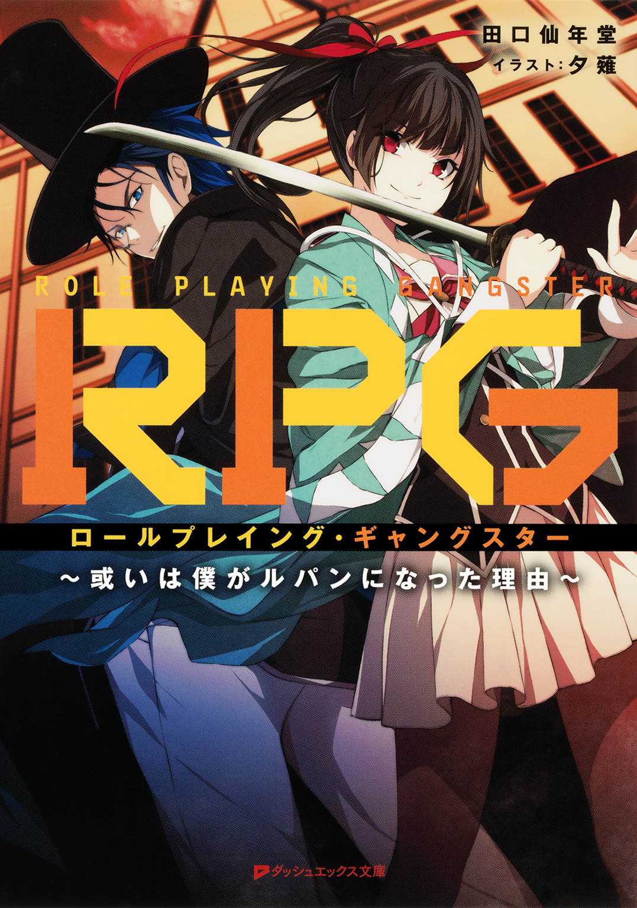
この本は縦書きでレイアウトされています。
また、ご覧になる機種により、表示の差が認められることがあります。
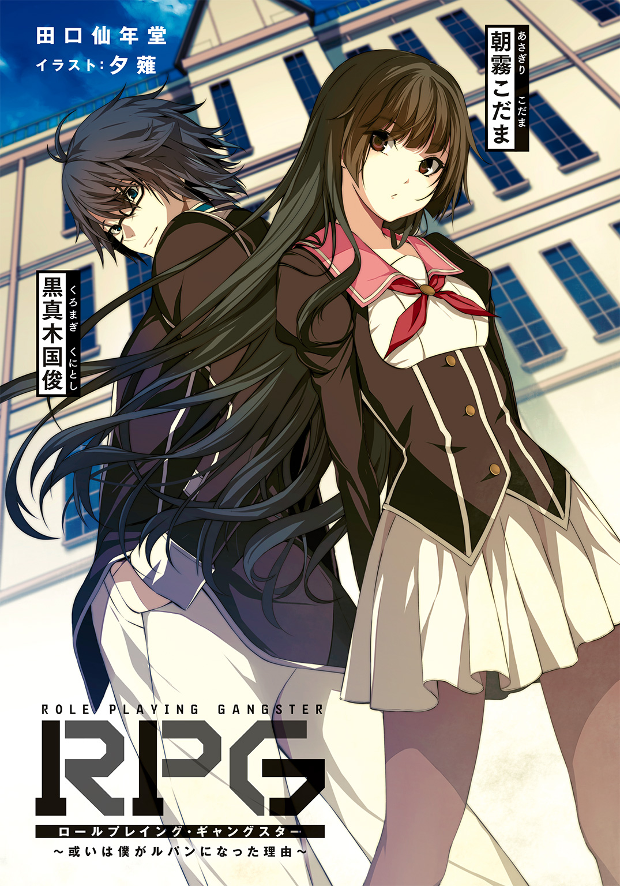
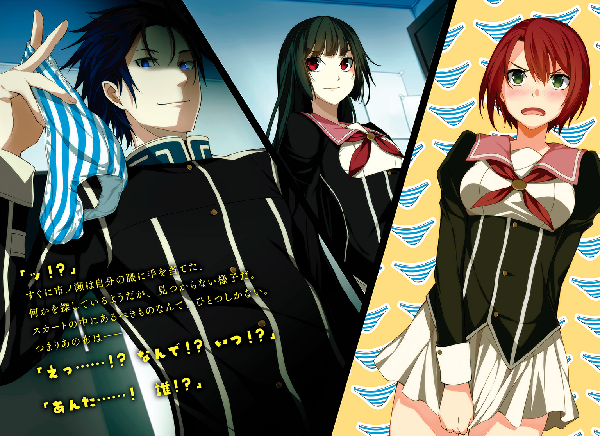
 ダッシュエックス文庫DIGITAL
ダッシュエックス文庫DIGITAL
ＲＰＧ ロールプレイング・ギャングスター
～或いは僕がルパンになった理由～
田口仙年堂
毎日毎日、飽きるほど顔を合わせている彼女。
なのに――
そんな彼女と、今、初めて出会っている。
ちょっとした用事で学園に戻った、ただそれだけの理由。
黒真木国俊が彼女を見たのは、部室棟の裏手。演劇部の大道具や美術部の壊れたイーゼルなどが放置されている、普段なら誰も行かないような場所。
午後七時、太陽が完全に消えて間もない時刻。
そこに彼女が立っていた。
普段なら気軽に声をかけられるのに、今はそれができない。
雲に隠れた月を背に佇む彼女がとても幻想的で、触れてはいけないような気持ちが国俊の声をせき止めたのである。
なぜ、幻想的と思ったのか。
ひとつは、彼女の美しさ。
冷たい印象を受ける、と言う人もいるだろうが、それは彼女の性格を理解していないからだ。本当はとても優しくて可愛い女の子だと思っていた。
だが、今の彼女は違う。
普段の愛嬌のある可愛さとは異なる、危うい美しさ。
触れれば傷つきそうな、刃のような佇まい。
それからもうひとつ。
彼女が身につけている、青いコートのような上着。
微風に揺られてヒラヒラとはためく上着が、学園の敷地内である事を忘れさせる。まるで夜会に着ていくドレスのように、月に映える浅葱色。
そして最後に――
彼女の右手にある、日本刀のような武器。
その三つが彼女を日常から遠ざけている。
しかし、その中でも一番異質なのが、彼女の美貌だ。
まるで彼女が彼女でないような違和感。
これが別の人間ならば「部活の練習？ それとも隠し芸？」と気さくに話しかけていただろう。しかし月明かりの下、何もせずにただ立ち尽くしている後輩から発せられる雰囲気は、冗談や余興とは思えない本気の何かが感じられる。
本気――そう、彼女はこの状況を当然だと考えている。
だから青いコートに刀のようなものを身につけている状態でも、無理がない。
その日常感が、逆に非日常感を醸し出している。
国俊はゆっくりと唾を飲み込む。
すると、まるでその音を聞かれたかのように、彼女がこちらを見て――
笑った。
屈託のない、明るい微笑み。
その笑顔が国俊の身をすくませる。
「やぁ、歳三さん」
笑顔のまま、彼女がこちらに歩いてくる。
その姿は朝霧こだまで、でも朝霧こだまとは言い難い〝何か〟を持っていた。
だから、
「君は――誰？」
国俊は自然にそう尋ねた。
すると目の前の彼女は不思議そうに首をかしげる。
「あれぇ？ 忘れちゃったんですか歳三さん」
クスクスと楽しそうに笑う彼女の顔が近づき、やがて国俊の眼前に迫る。
血のようにべったりとした嫌な空気。それでいて目の前のこだまだった少女から感じる謎の感覚。
全てが分からないのに、不思議と恐怖は湧かない。
むしろ、どこか安心できるような奇妙な気持ちになる。
吐息がかかるほど近くにいる彼女は、国俊の質問にこう答える。
「総司ですよ――沖田総司」
１ うろつく死神
「......ジロジロ見ないでください」
冷たい視線。
歯に衣着せぬ言葉。
二人きりの部室に漂う、剣呑な空気。
――ああ、普段の彼女だ。
これこそが日常だ。
文学研究部副部長の黒真木国俊にとって、いつもの部活がこれほど嬉しいと感じた日はなかった。
「今度はニヤニヤしないでください。餌を食べているアルパカを至近距離で見てるようで気持ち悪いんですけど」
「失礼だよ、僕とアルパカに対して」
「もう、なんなんですか黒真木先輩。私に言いたい事でもあるんですか？ アルパカを侮辱したのは謝ります」
「いや、朝霧さんが冷たいからさ」
「それでニヤニヤできる先輩のメンタルが理解できません。前から何度も言ってますけど、病院へ行くか死ぬかしてください」
「本当に冷たいなぁ、朝霧さんは」
「安心してください、こういう態度を取るのは先輩だけですよ。他の人は先輩と違って私をいやらしい目で見たりしませんから」
ため息をついて、朝霧こだまは読んでいた本に栞を挟んだ。読書の邪魔をしてしまって申し訳ないと思いつつも、国俊はニヤケ顔を止められなかった。
これこそ、国俊が知っている朝霧こだまだ。
長く切りそろえられた黒髪がよく似合う、市松人形のように整った顔。背が低めなのも相まって、本当に人形のようだ。おそらくクラスでも男子の人気は高いはず。
もちろんここ文学研究部ではトップアイドルである。
まぁ、他に女子がいないので、必然的にこだまがトップになってしまうのだが、それはまた別の問題だ。
十畳ほどの部室に女の子と二人っきりという状況にも、気がつけば慣れた。
なにしろ三人しか部員がいないので、三人か二人か自分だけという場面しかないのだから、嫌でも順応してしまう。
そういう環境では、お互いに取り繕う必要もない。
冷徹に国俊を罵るこだまは、これでいて一番リラックスしている状態なのだ。だから国俊も安心して罵声を浴びている。
そうしていると、やはり昨日のアレは見間違いだったと思える。
きっと他人の空似だろう。
「ああ、ええと。見つめるつもりはなくって」
「いいから用件を早く言ってください。本当に怒りますよ」
国俊は読むつもりだった本を机に置くと、ピリピリした雰囲気をごまかすようにメガネに触れた。フレーム越しに見える彼女は、まだ怒っているようだ。
残暑の時期もとうに過ぎているというのに、まだ暑い九月の放課後。
クーラーが効いている部室に、国俊の冷や汗がより涼しさを感じさせる。本来ならこだまの佇まいも充分涼やかなのだが、今は熱気を感じるほど。
「いや......本当にごめん」
国俊にも悪気はなかったので、素直に謝る。
ただでさえストレスの多い三傑野学園での生活だ。せめて部活動くらいは仲良くやっていきたい。
「......珍しいですね。先輩、普段は虫みたいにウジウジしてるけど、そんな風に言い淀む事ってないですよ？ あの、本当に言いたくないなら、別にいいですけど......何か私、失礼な事しました？」
こだまが顔を曇らせる。なんだかんだで心配しているようだ。彼女の欠点は国俊に対する態度だけで、それ以外は本当に優しい子なのだ。
「いや、普段の言動以上に失礼な事はしてないよ」
外した視線の先、窓の外には森がある。
森と窓の間は、昨日の場所だった。
――こだまのような少女に出会った場所。
見間違いだと確信していても、昨日の出来事は忘れられない。
不思議な衣装と雰囲気を纏った「沖田総司」と名乗る少女が脳裏にこびりついている。
あれからどうやって帰ったのか、国俊には記憶がない。ただ無我夢中で逃げたような気もするし、世間話をして円満に別れた気もする。
それにしても、こだまによく似ていた。
しかし、あの笑顔はどう考えてもこだまではない。
少なくとも国俊の前ではいつもこんな冷たい態度だ。
だが、けして嫌われているわけではない――と、思っている。
もしも本当に嫌っているなら、文学研究部なんてとっくに辞めているだろう。親友にそう言われるまで、どれほど悩んだものか。
そんな誤解されやすいこだまが、昨日は別人のようだった。
奇妙な出で立ちで国俊に向かって笑いかけるその様は、あきらかに異質だった。
単なる他人の空似で済ませるには、彼女は恐ろしすぎた。
「あの、さ」
丁寧に言葉を選ぶ。
「......昨日の夜、部室の裏にいたよね？」
「はい？」
こだまは首をかしげる。
「あれ？」
国俊も同じように首をかしげた。
狐につままれたような表情とは、こういう顔を指すのか。こだまは予想外の質問に目を見開いて驚いている。
「部室棟の裏......？ 行ってないですけど......」
「あれぇ？」
むしろこだまの方が申し訳なさそうな態度だ。噓をついている態度には見えない。動揺した様子もなければ、何かを取り繕うでもない。本当に知らないようだ。
「先輩、なんでそんな事訊くんですか？」
「いや、それがさ」
もう一度メガネに触れて、国俊は事情を説明しようとする。こうなったら隠しておくより全部話してしまった方がいいだろう。
――昨日、コスプレしてた？
などと訊いたら激怒されるだろうか。
しかしあれはコスプレとは言えない。コスプレにしては出来が悪すぎる。
それでいて身体に馴染んでいて、まるで普段から身につけているような自然さだった。コスプレよりもリアルな――
「沖田総司......」
つい、国俊の口から漏れる名前。
「沖田総司が何ですか？」
「いや、それが......その」
ごまかそうとする国俊だが、
「......別にいいじゃないですか、何度も読んだって」
こだまは少しだけ顔を赤らめながら、そう答えた。
彼女は新撰組の話になると、急に感情を出す。
よく見ると、こだまが持っている文庫本のタイトルがまさに『新撰組血風録』だった。
歴史小説といえば司馬遼太郎。こだまが読んでいる本は、彼の代表作とも言える新撰組ものの決定版。これと『燃えよ剣』で新撰組に興味を持った人も多いはず。
国俊は作中の沖田総司を思い出した。
新撰組が誇る一番隊隊長。いつもニコニコ笑って人を斬る天才剣士。
「朝霧さん、好きだよね、新撰組」
「ええ、好きですよ。悪かったですね」
クールだった彼女が、まるで恋人の話をするように照れた顔を見せた。
国俊は彼女が新撰組に関連する書籍をいくつも読み漁っている事を知っている。小説だけではない、マンガや映画や演劇などもチェックしており、その入れ込み具合は単なるファンとは言えないレベルだ。
「いわゆる歴女って奴とは違うんだよね？」
「私が好きなのは新撰組ですけど、歴史に興味があるわけじゃないんです。もちろんＢＬとかの趣味もないです。ただ、新撰組の隊士は先輩の何倍もカッコイイですよ」
苦笑するこだま。
「隊士の中では沖田総司が一番好きですけど、やっぱり彼ひとりでもダメなんです。土方歳三、近藤勇、彼を取り巻く隊士のみんなとの関係がいいんです」
「そうなんだ」
実のところ、国俊はそこまで深く新撰組を知っているわけではない。こだまの口から出る情報で補っているくらいだ。
「悪い事もいっぱいしましたけど、やっぱり芯の部分にある『幕府を守りたい』っていう気持ちがあるからこそ、今でも英雄視されるんだと――......あっ」
喋りすぎている自分に気づいたらしい。急に黙り込むこだま。
「うぅ......！ 楽しいですか、そうやって私をからかうの......!?」
「ち、違っ――」
「サイテーです。私が新撰組の話になると夢中になるの知ってるくせに、喋らせて、笑って......！ 倒錯趣味もいい加減にしてください。この変態」
「だ、だから笑ってないってば！」
むしろ明るく喋るこだまを見ているのが好きなのだ。
それに、国俊にだってそういう存在はある。
「先輩だって、昔の冒険小説の話する時は私みたいにはしゃぐくせに......！」
「それは否定できないなぁ。僕そういうの好きだから」
おそらくこだまが想像している以上に、国俊は冒険活劇が好きだ。ライトノベルもいいが、やはり古典がいい。探偵や怪盗が対決する話、財宝を追い求める話、悪辣な役人を懲らしめる話――現代の小説では見慣れた内容ばかりだが、その原典を漁るのが楽しい。
そんな事を考えていたら、結局、昨日の事を聞きそびれてしまった。
「ん？ なんだぁ、この雰囲気」
部室の扉が開き、男子生徒が入ってきた。
制服の胸には国俊と同じ、二年生を意味する緑色の名札。肌は運動部のように日焼けしており、実際に体格もがっしりしている。
彼、田辺修太郎はまるで我が家のように十畳ほどの部室を闊歩し、中央に並べてある机にカバンを置くと、どっかりと椅子に腰掛ける。ここまでの一連の動作は習慣と言ってもいいだろう。
「お前ら、またケンカしたのか」
「黒真木先輩がまたセクハラしたんです。そろそろ通報しようかと悩んでいました」
「セクハラじゃないよ！」
慌てて否定する国俊だが、修太郎にとっては毎度の事なのでスルーする。
「ああ、朝霧。昨日貸してくれた小説、ありがとな。面白かったぜ」
「すみません、私の方はまだ読み終わってないんです」
「いいよいいよ。どうせ明日も来るし」
カバンから取り出したハードカバーの小説をこだまに渡すと、修太郎はまた新しい本を机に置く。
思えば、修太郎も奇妙な男だった。
見た目通りスポーツも好きだし、成績も優秀、友達も多い、まさに万能と言ってもいい男だ。多少エロい事をのぞけば、性格だっていい。
修太郎とこだま、そして国俊。この三人が文学研究部の全部員だ。
活動内容は、本を読んで喋るだけ。
たまに文化祭で会報を出したりするが、九割以上は読書だ。
国俊たちにとって、それが一日の中で最も大切な時間なのだ。
県でも有数の進学校と呼ばれているが、この三傑野学園でのカリキュラムは異常だ。毎週小テストがあり、常に順位が公開される。下位の生徒は蔑まれ、上位の生徒はその位置をキープするために必死にもがく。
そんな勉強まみれの学園生活の中、部活動がどれほど救われるか。
スポーツ推薦で大学受験を狙う運動部はともかく、文化系の部活動はほとんどが受験に関係ない無駄なものとして扱われる。文学研究部など、誰も見向きもしない。
だからこそ、居心地が良い。
羨望も嫉妬も蔑みもない、誰からも見られない居場所。
国俊たちがこの十畳の部室を気に入っているのは、そういう理由からだ。
この小さな楽園に、三人。このまま平和に過ごせれば良かったのだが。
「で、さっき何話してたんだ？」
改めて修太郎が尋ねる。
「うん、それがさ。朝霧さんみたいな人を昨日の夜に見かけて」
ようやく本題に入れた。
「それで私の事を犯罪的な目でジロジロ見てたんですか」
「ごめんね、きっと人違いだよ」
きっとそうだ。
国俊が見たのは、別人だろう。
あそこは演劇部の大道具が置かれている。きっと演劇部の誰かが衣装を着て練習していたのだろう。それが暗くてこだまに見えただけだ。
お芝居なら沖田総司を演じる事もあるだろう。
――そう、演技なら、誰にでもなれる。
納得してしまえば、そんなものだ。こだまには余計な迷惑をかけてしまった。
国俊が安堵の息を漏らし、それを見て修太郎とこだまが苦笑する。
ノックの音は、その直後に聞こえた。
「あー、失礼するよ」
部室の扉を開けて、初老の教師が顔を見せた。
確か、石田先生。一年生の学年主任だ。一学年だけでも数十人からなる教師の主任ともなると、大企業の部長クラスではないかと国俊は考えている。そんな人が、直々に部室棟に顔を出すのは珍しい事だ。
「朝霧さん......朝霧さん、いますか？」
「はい」
石田先生に呼ばれて、こだまが立ち上がる。
「朝霧さん？ ......ですよね？」
「？ ......はい」
首をかしげる石田先生。
まるでさっきの国俊と同じような態度だ。目の前にいるこだまが本人かどうか分からないのだろうか。
「あー、すみません。ちょっとよろしいですか。生徒指導室まで」
「え？ は、はい......」
石田先生の後ろについていくこだまを、国俊と修太郎は無言で見送る他なかった。
扉から廊下を覗くと、遠ざかるこだまの小さな後ろ姿よりも、首を何度もかしげている石田先生の方が印象的だった。
「......なぁ、なんで朝霧が生徒指導室？」
修太郎の問いに答えられる人間を、ちょうど国俊も探していた所だった。
先ほどの石田先生のような仕草をしながら生徒指導室から帰ってきたこだまは、国俊たちの疑問をさらに膨らませてくれた。
「......警察の人が言うには、私が傷害事件を起こしたそうです」
「はぁっ!?」
国俊と修太郎、二人ともこだまと同じように頭に疑問符を浮かべて叫ぶ。
『おい、静かにしろ！ 今いいところなんだ！』
部室の壁が叩かれ、低い男の声が聞こえた。
「お、おお、悪い！」
壁越しの抗議に、壁越しに謝罪する修太郎。
隣の部室は映画研究部で、毎日のように映画を見ている。普段はドンパチやっている映画が多いのだが、今日はたまたま静かなものを上映していたのだろう。
映研には悪いことをしたが、それくらい驚いたのだ。
こだまと傷害事件。彼女を知っている立場からすると、まったく釣り合わない単語の組み合わせだったのだから。彼女が失礼な態度を取るのは、国俊に対してだけだ。他の人間に暴力を振るうわけがない。
「朝霧さん、詳しく聞かせてよ」
国俊の言葉を待っていたかのように、こだまも話し始めた。
「昨日の夜、男女のカップルが襲われたって......男の人は大ケガして、女の人もかすり傷だったって」
「またかよ」
修太郎が呟く。
今月になって、そういう事件が多発している。無差別に人を襲う通り魔のような人物かと思えば、建物のガラスを割ったり、壁を破壊したりと、様々な事件が増えている。
夏に不良デビューした若者の犯行と噂されているが、事件現場も時間帯もバラバラで、警察も特定できていないらしい。それに人やガラスはまだ分かるが、壁を破壊する不良など聞いた事がない。
その犯人として、こだまが疑われたようだ。
「朝霧さんがそんな事、できるわけないじゃないか」
国俊は最初からそう思っている。「するわけがない」のではなく、「できるわけがない」のだ。
身長百五十センチあるかないかの小柄な文学少女が、二人組に大ケガをさせるなんて。不意打ちを成功させたとしても、あっという間に反撃されるに決まっている。
「まぁ、武器でも持ってないと無理だわな。いや、鉄パイプ持ってても無理だろ」
修太郎も苦笑する。鉄パイプで無理なら、鋭利な刃物か銃が必要なレベルだ。
こだまは笑えずに、困惑した表情のままだ。
「警察の人もそう思ってくれたようで、すぐ帰っちゃいました......んですど」
おそらく形式的な確認作業だったのだろう。石田先生もそうだったように、誰が見てもこだまが傷害事件の犯人なわけがない。
「そもそもどうして朝霧さんが疑われたの？」
「それが......犯行現場近くの防犯カメラに映っていたらしくて」
こだまの表情がさらに曇る。
「犯行時間は、ちょうど七時前くらいだそうです。帰宅途中のカップルが、いきなり襲われたって」
机の上で拳を軽く握る彼女は、何かを言いかけて、しかし唇をきゅっと結んで押し黙る。苦しそうな顔をしているこだまを、国俊も修太郎も無言で見つめていた。
まさか本当に彼女が――？
一瞬そう思ってしまうほどの悲壮感が漂う空気。
それを打ち破るほどの話題も気概も、今の国俊は持っていない。ただ静かにこだまの言葉を待つのみだ。
やがて意を決したように顔を上げ、こだまはこう告げる。
「――私、その時間の記憶がないんです」
＊
曰く、朝霧こだまは可愛い上に反応が面白いので、見ていて楽しいそうだ。
しかし、そう語る黒真木国俊も同様に見ていて面白いのだ。
特に二人が並んでいる姿を見ていると、それが確信に変わる。
そう田辺修太郎は常々思っている。
わざとらしくボケる国俊に、こだまが辛辣なツッコミを入れるのは文研の様式美であり、これがないと修太郎も一日が終わった気がしないのだ。
そんな修太郎の日常が、何かの事件によって崩されるのは困る。
その結果が駅前のジェラート店というのは味気ない気もしたが、修太郎のサイフではそれが限界だった。
「しかし災難だったな、朝霧」
オープンテラスの席に座り、さてこだまをどうやって慰めるか考えたのだが、修太郎にはそれ以外の言葉が見つからなかった。
「はい......どうして私が事件なんか」
「まったくだよ。朝霧さんが犯罪なんてするわけないじゃないか。赤信号もちゃんと守るようないい子なのに」
「すみません......超急いでる時はたまに無視します......」
変なフォローをする国俊も国俊だが、それを無下にするこだまもこだまだ。
しかし、しょげる国俊を見て少しだけこだまが微笑むのを見て、これはこれで正解だったのだと思い直す。
「ま、明日になりゃ警察が調べた結果が出るさ。それで朝霧の無実が証明される。そもそもただの参考人として呼ばれただけだろうし、気にする事じゃねーよ」
一応、修太郎もフォローしておいた。
「はい......ただ」
「ただ？」
「昨夜の記憶がないのが気になって......私、あの時どこでどうしていたのか」
そう語るこだまに、修太郎は少し違和感を覚える。
彼女の口調が変だ。
まるで何かを隠しているようだ。
ただ、それは悪意によるものではない。彼女が自分たちを騙して利益を得るような子ではないと、修太郎も国俊も知っている。
だとするならば、誰かをかばっているのか。
それとも自分たちが気づいていないだけで、本当はもの凄い悪女だとか――
「朝霧さん、きっと混乱してるんだよ。昨日の詳しい行動を忘れるなんて、誰にでもある事だよ。昨日入ったコンビニで、どの棚から見て、何を手に取ったかなんて簡単に忘れちゃうだろ？ そういうものだよ」
そうやってこだまをかばう国俊こそ、本当はもっと二面性が激しいと見ている。
今は情けない顔でこだまをなだめているが、この男はもっと野心的だ。
たまにゾッとするような大胆な事をしでかす。
それが楽しくて、友人をやっているようなものだ。
「僕もたまにクラスメイトの顔を忘れちゃったりするしね」
「いえ、クラスメイトの顔は忘れません」
「え、そ、そうかな？」
「鳥以下の記憶力の先輩と一緒にしないでください」
小さく笑うこだまと、頭を搔く国俊。
手段はどうあれ、少しは元気になったようだ。こういう冷たい物言いも、国俊に対する愛情表現なのだ。むしろ修太郎には普通に接している分、少し寂しいくらいだ。
「やっぱ朝霧にパワーを与えるのは、国俊が適任だな」
「どういう意味ですか田辺先輩」
「んー、特に深い意味はねーけど」
「むー......」
ちょっと頰を膨らませて睨むこだま。
この可愛らしい怒り顔の前では、修太郎も苦笑して負けを認めざるを得ない。
ついでに言えば、手にアイスが垂れている事に気づいていない迂闊さも。
「朝霧さん、手、手！」
「えっ、やだ、あわわわわわ」
「ほらティッシュ」
「す、すみません。ありがとうございます」
こうして予期しない事態になると思い切り慌てるところを見ると、悪女という線はないだろう。
普段はクールだけど、慌てる所がとても可愛い。先生やクラスメイトの前だと笑えるが、部活だとあまり笑わないのは無理をしているからだ。
そう彼女を評したのも、国俊だ。
本当にあいつはこだまをよく見ている。
見過ぎてて、怖いくらいだ。
何故そんなにこだまを見ているのか――それは訊かなくても分かる。あいつがこだまに対してどう思っているのか、いちいち尋ねるほど野暮ではない。
こだまも同様だ。彼女が油断してスキを見せるのは、決まって国俊の前だけだ。毒舌なんてとんでもない。むしろ甘すぎて胸焼けしそうだ。
「う～......恥ずかしいです」
手についたアイスを舐め取るこだま。
「大丈夫だよ、僕たちしか見てないから」
「もっと悪いです。そうやって先輩が図に乗るのが腹立たしいから。いいからティッシュ新しいやつください」
こだまを慰めつつ反撃を受ける国俊。
そんな光景を眺めるのが、修太郎の好きな日常だ。
もうお前ら付き合っちまえよ、と何度言いかけた事か。
国俊の言う通り――
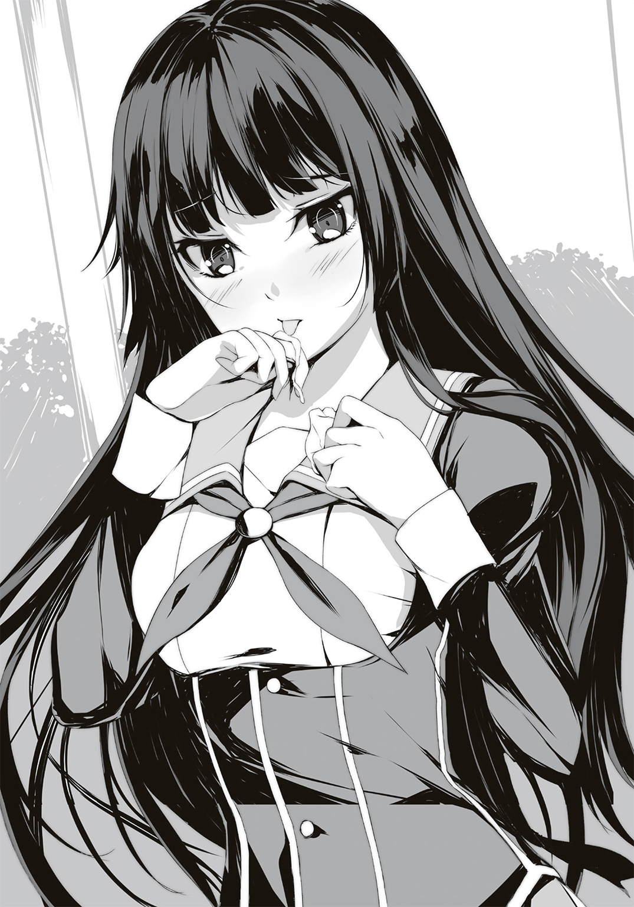
クラスメイトの顔すら忘れるようなクソみたいな学園生活の中で、この時間だけは大切に守りたいと思うのだ。
＊
国俊たちが通っている「三傑野学園」は、三傑野市が全面的にバックアップをしている巨大学園である。中高エスカレーター式である上に、三傑野市にある全ての高校を合併させたマンモス学園だ。その生徒数は五千人を超えるとも言われている。
名義は同じだが、校舎は複数存在し、学科毎に通う場所も異なる。そのためひとつひとつの校舎が収容できる生徒の数は、他の高校と変わりない。
三傑野市はこの学園を中心に成長しており、住居や商業施設も完全に学生をターゲットに展開している。県でも有数の進学校であるため、わざわざ地方から来てひとり暮らしをする学生が多いのだ。
国俊もそのひとりで、現在は学生向けのワンルームマンションに暮らしている。両隣の住人も同じ学年の生徒なので、朝は同じ時間に登校する事がある。
今日は少しだけ家を出るのが遅れたため、ひとりで登校する事になった。
途中、国俊を追い抜いて走っていく学生をちらほら見かけたが、別に遅刻するような時間ではない。早めに図書室に行って、予習をするためだ。席が限られているから、取り合いになるのである。
巨大な校門の前には二人の警備員が立っているが、ほとんどの生徒は挨拶もせずに通り過ぎる。たまに挨拶をする生徒に対しては、正面を向いたまま挨拶を返す。まるでロボットの兵隊のようだ。
まっすぐに教室に向かおうかと思ったが、喉が渇いていたので自動販売機に寄るルートを選んで歩き出す。
「......？」
異変はすぐに分かった。
大声で怒鳴っている生徒の声が聞こえたのだ。
声の主を捜すまでもなく、それは国俊の正面で行われていた。
「なんとか言えよ！ どうせ反論なんてできないだろう!?」
最初は数人の集まりだったが、国俊が現場を目の当たりにする頃には声を聞きつけた生徒が集まって人垣を形成していた。
その人垣の中心で、数人の男子生徒が女子生徒に指を突きつけている。
「暴力沙汰を起こした奴がいると、ウチのクラスの士気に関わるんだよ！ それに変な噂流されて、内申に傷でもついたらどうなるんだ！」
「だから違うって言ってるでしょ......！」
こだまだった。
男子生徒に追い詰められている彼女を見た瞬間、国俊の心臓が跳ねた。
その場に飛び出していきたい気持ちをぐっとこらえる。
「なんだなんだ......？」
「いじめか？」
集まった生徒たちの声を聞いたのか、丸いメガネをかけた男子生徒がこちらを見る。サラサラのボブカットの彼は得意げに鼻を鳴らすと、仰々しく手を広げた。
「いじめではありません！ 聞いてください！ 彼女、朝霧こだまさんは一昨日この近くで傷害事件を起こしたらしいんですよ！ 昨日、生徒指導室で説教されている彼女を見たんです！」
「だから、それは......」
「言い訳するなよ朝霧。学年一位だからって、何でも許されると思ってるのかよ？ お前みたいな奴がいると、俺たちまで犯罪者だと思われるだろうが」
ボブカットの男は、あからさまに挑発している。
別に珍しい事ではない。
この学園ではどんな事をしてでも成績をキープしたい者がいる。その手段として他人の弱みにつけ込み、学習意欲を削ぐ――そんなのは序の口だ。
そういう狙いもあるだろうが、ボブカットの彼は本気でイラついているようにも見える。彼と一緒にこだまを責め立てている人も、それを周りから観ている人も。
傷害事件は、この付近で起きたと言った。
つまり生徒がターゲットにされる事もある。
皆、いまだに捕まらない犯人に怯えているのだ。
「私の話、聞いてます？ 何度も言いますけど、私に人が襲えるはずがないでしょう。それとも腕力でも私に勝てないって仰りたいんですか？」
「ぐっ......そ、そんな事はないが、女でも人は襲えるさ。昨日の新聞に載ってたけど、犯人は刃物を持ってたんだろ。体格や性別なんて関係ねーよ」
男子生徒の言葉は正しいと思う。
こだまの体格でも、人に傷を負わせられる事はできる。しかし彼女の性格からいって、それはありえない。カバンにナイフを詰める余裕があるなら、そのスペースに時代小説を入れる。そういう後輩だと、国俊は信じていた。
「そ、それは......！ 確かに、刃物ならできる......でも、私じゃありません」
こだまの声は弱々しい。国俊の前でならズバズバと言いたい事を言える彼女だが、他の人の前では言葉にキレがない。
それでも普段の彼女なら、もっと大きな声で否定できるはずだ。
――けど、彼女には事件があった時刻の記憶がない。
国俊がすぐに飛び出せなかった理由が、それだ。
もしも彼女が何らかの形で事件に関わっていたら。
一パーセントにも満たない疑念が、わずかに国俊の足を止めてしまったのだ。
だが、残り九十九パーセントの気持ちが、次の瞬間には足を動かしていた。
「お、おい君たち！」
「ちょっとあんたら！」
国俊と一緒に前に出る、別の女子生徒。
「え？」
「ん？」
空気が停止した。
国俊が見ている女子生徒が、国俊を見ていた。
「あ......」
色素の薄い髪に、薄い化粧。短いスカートにアクセサリのついた制服。三傑野学園では勉強さえできれば服装はあまり指摘されないが、彼女は派手な方だ。
ギャル風のコーディネートなのに、不思議と下品には感じられない。
きっと彼女の優しい性格を知っているからだろう。
「米谷、さん」
国俊のクラスメイトだった。米谷志穂という名前で、なんと隣の席だ。
「なんだ黒真木じゃん。どぞ、お先に」
「えっ!?」
こんな状況で譲られてしまった。
緊迫した空気を打ち破ったのは良いが、それでここからどうすれば。
とにかくこだまを助けようと、国俊はボブカットの彼に反論する。
「えっと、君、朝霧さんは無実なんだ。警察に問い合わせれば分かるよ。なんなら石田先生に聞いたって構わない。ただ防犯カメラに映っていただけなんだ」
「な、なんだよアンタ......」
国俊の胸にある緑色の名札を見て、ボブカットは狼狽える。
「け、けど防犯カメラに映っていたのは、朝霧が現場にいたからだろ。事件の関係者じゃねーか」
ボブカットの隣にいた男子生徒の反論に、国俊は眉をひそめた。
「現場にいたからって、関係者とは限らないだろう。君はそれだけの理由で朝霧さんを犯人だと断定したのか？」
その言葉に周囲の生徒たちも「言われてみればそうだな」と納得する。
ボブカットが反論する前に、国俊はさらに続けた。
「そもそも本当に傷害事件を起こしていたら、彼女がこうやって登校できるわけないだろう。今ごろ警察にいるはずだよ。今ここにいる事実が、彼女の無実を証明している」
「それは......」
「なのに君たちは朝霧さんを犯人だと吹聴して、陥れようとしている――これがいじめじゃなくて、何なんだよ？」
あくまで冷静に話したつもりだったが、彼らをひるませ、周囲を同調させるには充分だったようだ。
内申書に関わるため、この学園では醜聞を異様なまでに嫌う。
彼らがこだまを糾弾したのも、それを利用しての事だ。
それが今、立場が逆転してしまったので狼狽えているのだ。
「あのさ、無関係かどうかって話、してたけどさ――」
横槍を入れたのは、なんと国俊の隣にいた志穂。
「そこの朝霧さん？ その子がね、変質者に襲われてるカップルを助けてくれたんだよ。大声あげて、人を呼んでくれたの」
「えっ......!?」
思わぬ新事実に、国俊も志穂を見る。
なにより一番驚いたのはこだまだろう。記憶がない彼女にとって、目撃者がいた事がどれほどありがたいか。
志穂の言葉に、見物人たちもホッとする。訝しげだった顔がほっこりとした温かいものに変わり、こだまを見る目も優しくなった。
「多分それ、警察や先生も知ってる情報だから。確認とってもいいよ？」
「フン......！」
こだまを責めていた男子生徒は舌打ちすると、その場を去ろうとする。
「ちょっと待って」
そんな彼らを呼び止める国俊。
肩越しに振り返るボブカットに向けて、
「......謝った方がいいよ」
気の弱い国俊には、そう提案するのが精一杯だった。これが修太郎なら「謝れ！」と一喝していただろう。
「あれだけ朝霧さんの名前を出して恫喝して、間違っていたらそれで終わりなんてムシが良すぎるだろう。君は名乗らずに騒いだだけか？」
「......あんたには関係ないだろ」
「人を罵るんだったら、自分も対等な立場に立たないと。ねぇ、水沢健二くん」
「なっ......なんで、俺の名前......!?」
彼とは初対面だ。
だけど国俊には彼の名前が分かる。
簡単な事だ。学生証を見ればいい。
国俊の手の中には、水沢健二というボブカットの少年の学生証が握られていた。
「え!? 俺の学生証......!?」
「それから、そこの飯塚新一くん。宮部順くん。君らも謝罪するべきだ」
さらに国俊は二枚の学生証を見せる。
「そうでないと、きっと君たちが罪悪感で後悔する」
「......な、なんだアンタ......どうやって俺たちの学生証......!?」
「謝るのか謝らないのか、どっちなんだい？」
国俊の声が低くなる。
カードをちらつかせながら、謝罪を迫る。
「黒真木先輩......!?」
背後にいるこだまが驚く。
そうかもしれない。今の国俊は、少し違う。
怒っているのではない。
むしろこの状況を楽しんでいるかのように笑っている。
「......くっ！」
ボブカットの少年、水沢は顔を真っ赤にして怒鳴りそうになるが、やがて肩を落としてこだまに向き直った。彼に合わせて、他の男子生徒も並ぶ。
「......悪かった、朝霧」
「う、うん......」
頭を下げた少年たちは、そのまま顔を上げずに廊下を歩き去る。
きちんと謝罪をしたせいか、彼らに声をかける者は誰もいなかった。
「あっ、そうだ、学生証！」
肝心なものを取り忘れた事に気づくひとりの少年。思い出した三人全員が国俊に迫ろうとするが、
「もう返したよ」
国俊は制服の胸ポケットを示す。
三人が急いで自分の制服を調べると、胸ポケットの中に国俊が奪ったはずの学生証が入っていた。
「............!?」
まるで魔法にかけられたように言葉を失った三人。
国俊が怖くなったのだろう。先ほどよりも早足で去っていく。
無論、彼らに同情の余地はない。無実の罪でこだまを晒し上げて、自分たちのストレスのはけ口にしようとした。ついでにこだまの成績も落とそうとしたのだから。確たる証拠などなくても、こだまの悪評が広がれば良いと思っていたのだろう。
その目論見が台無しになった恥辱は、想像に難くない。
あの自信と悪意に満ちた表情が志穂の言葉で崩れていく様は、彼らには悪いが非常にスカッとした。その分、彼らへの精神的ダメージは相当なものだったろう。
こだまを責めていた男子生徒たちが去ると、見物人だった生徒たちもバラバラに散っていく。そろそろ予鈴が鳴るので国俊たちも教室に行かなくてはならない。
「あ、あの、黒真木先輩」
残されたこだまは、国俊に駆け寄ってきた。
「あ、ありが――」
言いかけて、こだまは表情を引き締める。
「助けに来るのが遅いんですよ。バカ。もったいぶらないでくださいよ......！」
「うん、ごめん」
まだ声が震えているが、変に礼を言われるより安心する。そういう口がきけるのであれば、こだまは大丈夫だ。
「それに、助けてくれたのは米谷さんだから」
「米谷先輩、ありがとうございます」
志穂にはきちんと頭を下げるこだま。国俊以外の人間には礼儀正しいのだ。
「いーっていーって。良かったね、誤解が晴れて」
「はい」
顔を上げたこだまは晴れやかに笑っていた。この場から助かった他にも、当時の記憶を知っている者がいたという事実が嬉しかったのだろう。
「ところで黒真木。あんた今の何？ 手品？」
志穂が顔を近づけるので、国俊は反対に顔を離す。
「手品っていうか、その、あまり大きな声じゃ言えないんだけど......」
「先輩は手癖が悪いんです。手品も出来ますし、今みたいなスリも上手ですよ」
言えなかった事をズバリこだまが言ってしまった。
「朝霧さん、人聞きが悪い事を......」
「事実、犯罪です」
冷静にツッコミを入れるこだま。
伝奇小説の怪盗などは、盗みなど簡単にやってみせる。だから国俊も練習したらどれくらい可能になるのか試しているうちに、上達してしまった。生まれ持った才能ではなく、反復練習の賜物だ。
「なにそれ、すげー面白いじゃん！ 黒真木、今度また見せてよ！」
「えー......」
スリの技術なんて、そう何度も見せられるものではない。
「どーせあんたの事だから、犯罪とかには使わないんでしょ？」
「まぁ、そうだけどさ......」
どうはぐらかそうか考えていると、ちょうど予鈴が鳴った。
「じゃあ私はこれで。先輩、また後で」
「うん」
こだまはもう一度頭を下げ、ボブカットたちが去っていった方向へ歩き出す。そういえば同じクラスだと言っていた。
「......先輩」
振り向くこだま。
「非常に腹立たしいですけど、ちょっとだけ、カッコ良かったです」
それだけ言って、小走りに駆け出す。
カッコ良かったのか、あれで。国俊からしてみれば、情けない姿を見せてしまったと思っていたのに。修太郎のようにビシッと決めたかったのだが。
彼女の後ろ姿を見送ると、国俊は自分のクラスがある反対方向に歩き出した。
「米谷さん、さっきはありがとう。遅れないうちに教室に行こう」
だが、志穂は立ち止まったまま。
「ねー黒真木。あの子、あんたの彼女？」
「バッ、ち、違うに決まってるだろっ！ ただの部活の後輩だよ！」
ずり落ちそうになるメガネを押さえながら必死で否定する国俊。
「黒真木って、文研だっけ？ 手品研究会じゃないんだよね？」
「うん。手品は趣味だよ」
「ふーん......そっか......」
それで会話は終わると思っていた。
しかし志穂はその場から動かず、下を向いて何かぶつぶつ呟いている。
「......米谷さん？」
「ねぇ、放課後、部室に行ってもいい？」
「え、なんで？」
米谷志穂というクラスメイトは、国俊のような本の虫にも気さくに話しかけてくれる、明るい女の子というイメージだった。あらゆる方面にアンテナが伸び、好奇心旺盛で吸収も早い。
実際、誰とでも会話ができる特技はこの学園では希有なスキルだ。
だが、話題豊富と言っても――
「なんかさぁ、憑いてるっぽいんだよね、あの子」
こんな言葉が出るとは誰が予想できるだろうか。
「どういう......事？」
脳裏にフラッシュバックする、一昨日の光景。
先ほど見たこだまと、あの沖田総司と名乗る誰かの姿が重なる。
「いや、うち神社でさぁ、そういう人けっこう来るのよ。だからなんとなくだけど、あたしにも分かるんだよね。見慣れたっつーか」
「そうじゃなくて！」
思わず声を荒らげてしまい、とっさに口を閉ざす国俊。
そんな彼の肩に、志穂が触れる。
「だいじょぶ」
「......米谷さん」
「普段あんま話さないから信用ないかもしれないけど、助けたげるから」
そこまで正直に話してくれる志穂を、国俊は信じる事にした。小さく頷くと、彼女はいつものように底抜けに明るい笑顔を見せてくれた。
＊
「はぁ？ 朝霧になんか憑いてる？」
放課後、国俊が志穂を連れて部室に来た理由を説明したら爆笑された。修太郎は志穂を見て笑い続けたが、国俊はずっと笑えなかった。
志穂のジョークにしては悪趣味すぎる。その事についてずっと訊きたかったのだが、あれこれ尋ねるより実際に彼女の言う通りにした方が良いと判断したから連れてきた。
「おじゃましまーす。思ったより本ないんだね。エロ本とかないの？」
部室にずかずかと入ると、志穂は友達の部屋のように遠慮なく見回す。今までの話はジョークだったのではないかと思えてくる態度だ。
幸か不幸か、こだまはまだ来ていない。
「おい国俊」
修太郎が何か言いたそうに近づいてくるが、
「ごめん。でも、そうした方がいいと思って。最近何か変だから」
「何か......まぁ、そうだな」
修太郎も国俊の言いたい事が分かったようだ。
何が、と訊かれると答えにくい。
ただ、明らかにここ数日で変化が起きている。
傷害事件の多発、記憶をなくしたこだま、彼女が疑われた事。
それと――国俊が部室の裏で見た、彼女。
自分の身の回りだけではない。
明らかに自分を取り巻いている場所よりも、もっと広い場所で何かが起きている。
国俊はその正体を知りたかった。
少なくともこだまが巻き込まれかけている、いや、もう巻き込まれているかもしれないのだ。それを見て見ぬふりはできない。
「こんにちは......って、あれ」
いつものように部室の扉が開き、いつものようにこだまが入ってくる。
「やっ、こだまちゃん」
「米谷......先輩でしたっけ。今朝はありがとうございました」
「いーよいーよ。でも、あれから気になっちゃってさー」
明るく微笑んで、志穂は部室の中央にある机の椅子に座る。ここは国俊とこだまが集中して本を読むための場所だ。修太郎は椅子ではなく、床に座って読む事が多い。
「ちょいちょい」
志穂が軽く手招きすると、こだまは彼女の向かい側に座る。
「なんですか？」
「うん、たいした事じゃないんだけどさ」
志穂が国俊に目配せする。
あらかじめ言われた通りに、国俊は部室の鍵を閉めた。
カチャ、という音と共に、部屋の空気が変わった。少なくとも国俊にはそう感じられた。こだまにもその様子は見られていたはずなのに、彼女は志穂から目を逸らさない。
「なん......ですか？」
「大丈夫、簡単な話だよ。すっごく単純なお話」
まるでファストフード店で世間話をするように、頰杖をつきながら志穂は尋ねる。
「あんた、誰？」
国俊も修太郎も、女子二人を黙って見守っている。
今も、そうだ。
この不穏な空気。
淀んだ気が立ちこめているようだ。
こだまが部室に入ってから時間にして一分も経っていないのに、まるで数年間もそうしているみたいだ。
志穂の質問に、こだまは俯いてしまう。
変な質問に対して、国俊相手のように冷たい言葉も投げかけず、今朝のようにこわばりながら否定もせず、ただ下を向いたまま。
その空気は、志穂が作り上げたものだ。
普段は明るいギャルといった風貌なのに、今は目元すら笑っていない。
真剣にこだまを見るその姿からは、殺意すら感じられる。
「――、――......！」
声が聞こえた。
下を向いているこだまからだ。
彼女には似合わない、くぐもった低い笑い声だと気づいたのは次の瞬間だった。
「――あなたこそ、誰ですか？」
顔を上げたこだまは――こだまではなかった。
いや、見た目はそのままだ。どこから見ても朝霧こだま本人だ。
なのに、違う。
その低い声も、ねっとりとした笑顔も、生暖かい空気も、こだまのものではない。
――誰だ。
「噓......だろ」
修太郎も口元に手を当てている。彼もこだまの変化に気づいたようだ。
こだま――のような誰か――は国俊を見ると、片手を挙げる。
「やぁ歳三さん。また会ったね」
国俊の知る限り、自分の事を歳三と呼ぶ友人はいない。
いや、ひとりだけいた。
一昨日の夜、部室棟の裏。
浅葱色の羽織を着た――
「君は......やっぱり、君は！」
国俊の見間違いではなかった。あの時、あの場所で見た朝霧こだまだ。
「今朝はこの子を助けてくれてありがとう。米谷先輩と違って証拠も何もないのに、かばってくれたね。やっぱり歳三さんは優しいなぁ」
まるでこだまが他人であるかのように振る舞う言葉。
志穂が言っていた「憑いている」というのは本当のようだ。今、目の前で喋っているのはこだまの人格ではない。別人が憑依しているようだ。
これが違和感の正体か。
国俊たちを取り巻いていた何か、とはこれの事だったのだ。
「しかし初対面なのによくわかりましたね、米谷さん」
「まーね。うち神社だし。悪い霊に取り憑かれた人、いっぱい見てるし」
「......ちょっと待ってください、ボクが悪い霊だって？」
ムッとして志穂を睨む。
「実際、どうなんだよ？」
尋ねたのは修太郎。
「お前が......その、朝霧に取り憑いた霊だとして、本当に朝霧の身体を借りて傷害事件とか起こしたのか？」
「違うよ、修太郎」
国俊が割って入る。
「朝霧さん――いや、彼は傷害事件から助けてくれたんだ。関係ない」
「あはは、歳三さんありがとう」
その名前で呼ばれるたびに国俊の胸がざわつく。普段は「先輩」と呼ぶ口から、まったく異質な呼び方をされるだけでむず痒くなる。
「――歳三さんはいつもそうだ。影ながらボクを守ってくれる。ボクだけじゃない。隊のみんなの事を慮ってくれた。鬼の副長って呼ばれてるけど、みんなのお母さんみたいな厳しさだった」
「隊......副長......？ やっぱり、君は！」
「ああもう、髪の毛が邪魔だな」
彼――そう、彼はこだまの長い後ろ髪を手で払っていたが、やがて諦めてカバンからリボンを取り出した。髪の毛をくくり、リボンで紐のように結ぶ。ポニーテールのように結ばれた髪の毛に触れて、彼は満足そうに微笑む。
「沖田惣次郎藤原春政――沖田総司」
国俊がその名を呼ぶと、彼は嬉しそうに頷いた。
泣く子も黙る新撰組一番隊隊長。夭折の天才剣士として名高い男。
近藤勇、土方歳三らと共に試衛館という道場で剣を学び、同門の仲間を連れて京都で旗揚げする。そこで数多くの浪士を斬り、新撰組の名を上げるのに一役買った重要人物。
誰よりも速く敵陣に駆けつけ、誰よりも速く斬る。その剣の腕は新撰組でも上位に入ると言われ、不逞浪士はその名を聞いただけで震え上がった。
その美しさで市井の女性たちにも人気があった。甘いものが好きで、仲間からも弟のように可愛がられていたという。
しかし肺結核のために二十代の若さで死んだ。
数々の伝説を残した剣の使い手、沖田総司。
――と、名乗っている人物が目の前にいる。
「......はは」
修太郎の乾いた笑い声が響く。
「沖田総司？ お前が？ 冗談もほどほどにしろよ」
「............」
沖田総司と名乗ったこだまは、笑顔で修太郎を見た。そこになんの感情もないように見えるが、裏では何を考えているのか分からない。
少なくとも、彼が朝霧こだまではないのは確かだ。
しかし天才剣士を名乗るとは――
「頭イカれちまったのか？ なぁ朝霧、演技なんだろ？ 国俊や米谷と組んで俺をドッキリにハメようとしてるんだよな？」
修太郎が疑いの目で国俊と志穂を見るが、演技でない事は全員が証明できる。
そして何より、こだまの表情で分かる。その笑顔はこだまのものではない。
付き合いは長くないが、分かってしまうのだ。
「じ、じゃあ沖田総司だってんなら、剣を使ってみろよ！ 剣の達人なんだろ!?」
「剣なんてあるわけないだろ。ここ文研だよ？」
国俊がツッコミを入れるのにも構わず、修太郎は自分のカバンに飛びつき、中を探る。やがて取り出したのは、ペットボトル。
「剣が使えなくても、見切りとかできるだろ!? だったらこれを――避けてみろっ！」
まだ中味が入っているそれを、修太郎は思い切り振りかぶる。
「おい修太郎！ やめろ！」
中味の入ったペットボトルはそれなりの重さだ。それを女子に向かって投げつければケガだってするだろう。しかもこだまに対して投げるなんて。
おそらく修太郎も半信半疑なのだろうが、疑問より怒りが勝ったのだろう。
こだまにしろ沖田総司にしろ、バカにされている気がして、頭に血が上ったのだ。
「オラァッ！」
だから修太郎は一切の手加減をせずに、ペットボトルを投げた。
「修太郎！」
全力で投げたペットボトルが回転しながら、こだまの頭部に当たる――
寸前、止まった。
ペットボトルが空中で制止していた。
透明な容器から突き出ているのは、シャーペンの先端。
中に入った水がシャーペンを通って、机にポタポタと垂れていた。
「噓......だろ」
こだまの持ったシャーペンがペットボトルを突き刺して止めた。そう理解するまで少し時間を要した。
至近距離から全力で投げつけられた中味入りのペットボトル――それを認識し、シャーペンを手に取り、回転するそれの胴体に刺す。その一連の動作がいかに難しいかなど、武芸の達人でなくとも分かる。
「これでいいですか、田辺さん？」
ペットボトルを机に置き、微笑む総司。
「いや......そんな、でも、おかしいだろ！」
それでも首を振って否定する修太郎。
「百歩譲って、こいつが朝霧に取り憑いた霊だとしてもよ！ 沖田総司はないだろ！ だって沖田の墓ってここにはないだろ!? えーと、どこだっけ？」
「確か、東京で亡くなって......お墓も東京にあるはず」
後で調べたところ、沖田総司の墓は東京都港区にある寺に存在するという。沖田の霊がいるとしたらその墓か、あるいは新撰組に縁のある京都。生家も東京にある。この三傑野市とは何の関係もない。
「東京で死んだ沖田が、なんで朝霧に取り憑くんだよ？」
やはり彼は沖田総司の名を騙る別人の霊か。
だが、あの反応速度は凄腕の剣士が持つものだった。
「あー......それなんだけど、ね」
志穂が申し訳なさそうに会話に入る。
「どうも彼、霊じゃないっぽいわ」
「はいぃ!?」
国俊と修太郎が同時に声を上げた。
ここまで引っ張っていて、どうしてその結論が出てくるのか。
「でも別人格がいるのは確かだよ。ただし霊じゃない。だとしたら......」
「多重人格......ってこと？」
もうひとつの可能性を提示する国俊。
「多重人格で沖田総司になったって言うの？」
「......ない話でもないと思うぜ」
国俊の説に同意する修太郎。
「多重人格の生まれ方は知らないけど、朝霧って沖田総司の事が大好きだったろ。ケータイとかにも新撰組のストラップとかつけてたし」
「そう......だね。新撰組の話をする朝霧さん、楽しそうだった」
言われるまでもなく、知っている。
毎日、時代小説を読むこだまの顔を思い出す。
「......僕も分かる、かも」
本を読むとき、登場人物の気持ちになる。
そのうち本の登場人物と自分が一体化するような感覚に陥る。
自分が本の主人公であり、本の中の体験は自分のものになる。
こだまの場合、あまりにも沖田総司に入れ込んでしまった結果、そうなったのか。
「単純な話だよ、歳三さん」
総司本人が答える。
「憧れが、ボクを生んだのさ」
好きで好きでたまらなくなって、その人についてもっと知りたくなって。
その世界にどっぷりと漬かって、自分のものにしたくなって。
結果、別人格が生まれるほどに昇華させたと言うのなら。
なんと――素晴らしい事か。
「じゃあ、さっきのペットボトルは？ あんな技術と動体視力、どうやって鍛えたの？」
「鍛錬だよ。近藤先生も言っていたよ。剣の稽古は一日にして成らず、でしょ？」
あっさり答える総司。
総司が――いや、こだまが剣の稽古をしていたのか。
彼女が剣道をやっていたという話は聞かない。
ずっとひとりで練習していたというのか。沖田総司になるために。
一昨日見た総司も、剣の稽古の最中だったのか。だから剣のようなものを持っていたのだろう。
「憧れで......そんな、剣の練習まで......」
呻く修太郎。
「......そっか。そこまで好きだったんだ」
国俊は頷く。
「ってお前、受け入れるの早いな！」
「え、修太郎は違うの？」
国俊はきょとんとした目で修太郎を見つめる。
「憧れて――その人になりたいっていう気持ちは、誰にでもあるでしょ。そのために練習したって言うなら、僕は信じられる」
「そうかぁ？」
納得はできるが、それでもこだまの状況は異常に決まっている。本来ならば専門家に診せるべき案件だ。
だが、国俊はそうしようとは思わなかった。
無理に元に戻す必要もないんじゃないか――そう考えていた。
だってこんなに楽しそうなんだから。
「ところで、一昨日の夜の事なんだけど。本当に君は傷害事件を起こしていないの？」
「それは、そこにいる米谷さんが言った通りだよ。ボクが駆けつけた時には、もう終わっていたのさ。仕方がないから人を呼んだ。ボクが犯人だと疑われたくないからね」
「常識はあるんだね」
「当たり前だろ歳三さん。ボクの事、殺人鬼か何かだと勘違いしてないかい？ これでもボクは新撰組の――」
何かを言いかけた時、
「っ！」
突如、総司が立ち上がる。
「な、なんだよオイ！」
身構える修太郎には目もくれず、総司は窓の外を見る。
「――聞こえた」
「え？」
「悲鳴。外から」
それだけ言うと、総司はすぐに走り出す。
国俊の脇をすり抜け、本棚の隣にある掃除用具入れを開ける。
中から浅葱色の――新撰組の羽織と、布で包まれた長い棒のようなものを取り出した。
あの包みは国俊も見た事がある。
――まさか日本刀？
よりによって、部室に隠していたのか。いつも部室の掃除はこだまがしていたから、国俊もチェックなどしていなかった。
「待って、朝霧さん――総司！」
国俊が呼び止めるが、総司は構わずに部室を飛び出していく。風のように速い総司の足音が遠ざかる前に、すぐに国俊も後を追って部室を出た。
「ちょっ、お前ら！ どこ行くんだよ!?」
背後から修太郎の声が聞こえるが、無視して国俊は走る。
ここで放っておいたら危険な気がするのだ。
こだまの身体ではない。
もしも鍛錬によって本当にこだまが沖田総司と同等の力を手に入れていたとしたら、こだまよりも、相手が危険なのだ。
汗でずり落ちそうになるメガネを押さえながら、国俊は総司を必死に追い続けた。
＊
国俊が知る限り、朝霧こだまという少女は優等生を絵に描いたような存在だった。人の見ていない所でも悪さはできないような、真面目な子だ。
そんな朝霧こだまの身体を借りて、沖田総司が疾走している。
二階の窓ガラスを開けると、真下の駐輪場の雨よけに向かってダイブ。そこから下まで飛び降りる。スカートが翻るのも構わずに、総司は現場とやらに向かって止まらない。
「ま、待って！」
国俊は彼の真似はできず、階段で降りて現場へ行った。
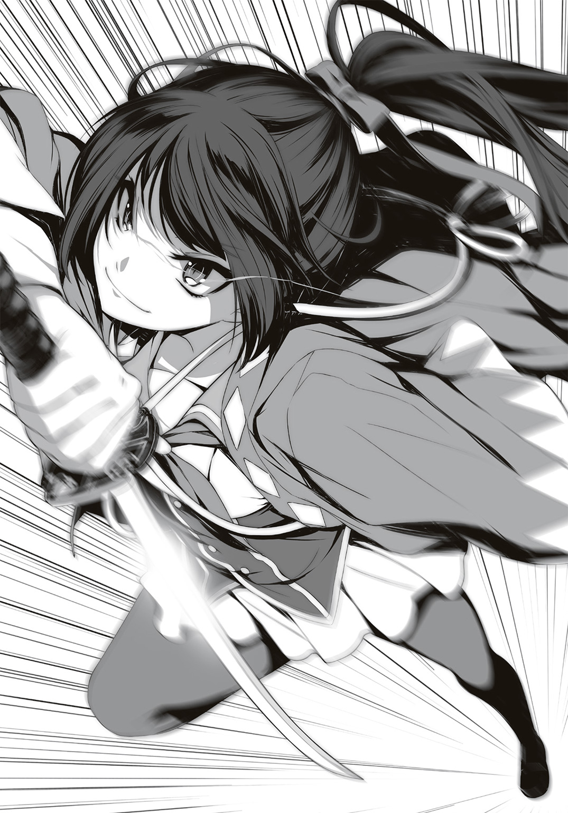
総司が向かう場所はおおよその想像がつく。
三傑野学園は多数の校舎があるが、ここは本校舎と二つの部室棟と多目的校舎に分かれている。中央に本校舎、それを囲むようにして各校舎がある。
国俊たちがいるのは西の部室棟がある校舎。
先ほど総司が飛び降りた駐輪場の奥には、ゴミ捨て場に通じる道がある。その道はゴミ捨て場に行く以外に使われる事がなく、人目に付かない。
隠れて何かをするには絶好のスポットなのだ。
そのため、校内でも不良のたまり場として有名だったのだが――
ゴミ捨て場に近づくと、すぐに異変が見えた。
人間が二人。
武器を持って戦っているのが見えた。
片方はこだま――沖田総司だ。
いつの間にか身につけた新撰組の羽織を翻し、刀で人を斬りつけている。
そして相手も何かを持って抵抗していた。捨てられていたパイプ椅子で総司の刀を受け止めているのは、男子生徒――のように見える。
彼らの足下には、倒れている人間がいた。
まさか総司が斬ったのか。
「や、止めろっ！」
とにかく事態を収めようと、国俊は叫んだ。
もう遅いかもしれない。それでも犠牲者が増えるよりは。
「歳三さん、どうして止めるのさ」
総司の背中が目の前にあった。
「えっ？」
つい先ほどまで、彼は十メートルほど先であの男子生徒と戦っていた。それなのにまばたきをするほどの時間で国俊の目の前まで移動したというのか。
鍛錬で身につけられるスピードなのか。
「あいつ、ボクと同じくらい強いよ」
総司は男子生徒から目を逸らさない。
顔を確認しようと思ったが、その男子生徒はパーカーを着ており、フードで顔を隠していた。まだ九月だというのに、暑くないのだろうか。
鍛えている修太郎よりも良い体格をしている。
しかし、どうして顔を隠すのか。
まるでやましい事をしているような――
「もしかして、あいつが！」
倒れている生徒を見て、すぐに総司がやったのだと思っていた。
だが、真実は違うのか。
あの男子生徒を止めるために、総司が戦ったのか。
彼も新撰組も平和のために戦った侍のひとりだ。その正義感は朝霧こだまの中で受け継がれているのだ。
「さぁ――どこからでもどうぞ」
剣を握り、半身になって構える。こだまの身体で、なんと凜々しい事か。
その勇ましさに気圧されたのか、フードの男は踵を返した。ゴミ捨て場のフェンスを乗り越えて、そのまま走り去ってしまう。
「逃げるな！ 待て！」
追おうとする総司だが、
「ダメだ！ それより、この人を！」
「......わかったよ歳三さん」
倒れている生徒を介抱する国俊に命令されると、素直に刀を収める。
どうも本当に国俊を新撰組副長の土方歳三だと思い込んでいるらしく、彼の言う事には無条件に従ってしまうようだ。
その刀はどこで手に入れたのか尋ねたいところだが、倒れた生徒が先だ。
「おい、しっかりしろ！」
短髪の男子生徒を抱き起こす。
「う、うう......」
目立った外傷はない。最初に切り傷がないか確認したが、大丈夫だ。
あとは意識の有無だ。頭を打ってはいないだろうか――
「う、うあああ......」
呻き声を上げる男。名札をつけていないので名前を呼びかける事もできない。
保健室に運ぼうかと迷っていると、
「歳三さん！ 危ないっ！」
総司の鞘が突き出された。
同時に、抱き起こした男子生徒の口が総司の刀に嚙みついた。
「ぐっ！」
総司の刀に嚙みついた男は、手足を使わず、身体のみで起き上がる。そのまま刀から口を離さずに総司に近づく。
「は、離せっ！」
男の口から刀を引きはがそうとする総司だが、アゴの力が相当あるらしく、どこにも動かせないようだ。
いくら素早い動きの剣士でも、刀を押さえられたら戦えない。
とはいえ、歯で刀を押さえつけるなんて人間業ではない。
まるで動物か怪獣のようだ。
「お、おいやめろ！」
国俊は背後から男を引きはがそうとするが、まるで動かない。それどころか生物の身体を触っている感触すらしない。岩か何かを動かそうとしているようだ。
だが、見た目は普通の男子生徒だ。鍛えているようには見えない。
それなのにゴリラのように力強く、ビクともしないのだ。
ということは、まさか彼も――
「歳三さん、逃げて！」
叫ぶ総司の胸に、ゴリラ男のパンチが繰り出される。
「総司！」
が、パンチは当たらない。
総司は刀を捨て、一瞬で数メートル下がっていた。
今度はしっかりと見た。
瞬間移動のように、総司の身体が消えたのだ。
足音もせず、数メートルの距離を移動した総司を追ってゴリラ男が走る。本物のゴリラのように、腕をだらりと下げ、その拳を使って走る。
しかし彼のパンチが総司に当たる寸前、またゴリラ男の背後に移動した。
速さという概念では片付けられない。
まさに沖田総司の移動法は、瞬間移動と言って良いレベルだ。
が、それでも総司の顔には冷や汗が浮かぶ。
肝心の刀はゴリラ男が咥えている。
あれを取り戻さない限り、攻撃ができない。
「歳三さん。ボクが時間を稼ぎますから、今のうちに」
「バカを言うなよ」
総司を――こだまを見捨てて逃げるわけにはいかない。
しかし今の状況は、なかなか打開できるものではない。最強剣士とはいえ、徒手空拳の総司ひとりでは荷が重すぎる。新撰組隊士ならば柔術のひとつでも学んでいるだろうが、あの総司がそれをできるとは思えない。
総司ひとりで打開できないのであれば、誰かに助けてもらうしかない。
一番頼りになるのは修太郎だが、彼でもあれほどのパワーを持った男には勝てるはずがない。あの男に触った国俊には、それが分かる。
総司でもダメ、他の人間でもダメ。
それならば、手はひとつしかない。
――やれやれ。もう少し隠しておきたかったが。
国俊はメガネを外し、胸ポケットにしまいこんだ。
視界がぼやける。
だが、逆に別の視点が被る。
新しい視界が見せてくれる世界は、まるで違う。
そう――別人になったみたいに。
邪魔な前髪をかき上げ、目の前の敵を見据える。
口に刀を咥えたゴリラ男。
総司がピンチになったのは、刀を奪われたからだ。
あの刀が欲しい。
「その刀――私がいただこう」
そう呟いた次の瞬間には、国俊の手には刀が握られていた。
「――!?」
突如、嚙んでいたものを失った男は、歯をガチンと打ち鳴らして痛みに顔をしかめる。数本の歯が折れたようで、口から血の筋が流れた。
「そら、君のだろう」
国俊は総司に刀を投げる。刀を受け取った総司は、唾液まみれの鞘に眉を寄せ、次に国俊を見た。
すでにゴリラ男はターゲットを切り替えている。口から血を流させたのが国俊だと認識しているようだ。
「危ない、歳三さん！」
総司ほどではないが、動物じみたダッシュで男が突進した。トラックのような速さで迫る男に対し、国俊は――
手を開いて迎え入れた。
なにもせず、悠々と微笑んで。
「ウォォォオオォォォォォォッ！」
それを挑発と受け取ったのか、ゴリラ男の速度がさらに上がる。
「猛獣の扱いは得意ではないが、ま、仕方がない。仕事柄、扱う事もあるのでね」
国俊は男に手を伸ばす。
欲しいものを見定め、イメージする。
全てのものは、この手の中に。
そのビジョンを現実にするため、国俊の手が動いた。
相手の死角、呼吸、走り方、心臓の鼓動まで瞬時に見抜き、それを自分の波長に合わせる。その結果、まったく悟られずに好き放題できる。
ただの手癖ではない。心理学だけでもない。身のこなしだけでもない。
それら全てを融合させた、完璧なる芸術。
「――〝幽幻盗手〟」
精緻を極めた動きが、たった一瞬の奇跡を魅せる。
「オォォッ!?」
突進する男の身体が崩れた。
まるで氷の上のように滑り、コンクリートの地面に身体を強く打ち付けてしまう。国俊に向かって伸ばした手は空を切り、身体と一緒に地面を打った。
激しい音と共に倒れた男は、すぐに起き上がれずに呻いている。全身を打っただけでなく、コンクリートで手足をすりむいたようだ。
「――オオッ、オオオオ！」
人間の言葉を話さず、血まみれの身体で蠢いていたが、やがて動かなくなった。
「あなたは......！」
その光景を見た総司も、苦しそうに喘ぐ。
「何をしたんですか、今......!?」
「少し、借りただけさ」
国俊は総司に右手を晒す。
そこには、倒れた男の靴が握られていた。
「い、いつの間に......!? 走っている彼の靴を......!?」
「まぁ、命を救われたのだから、こんな汚い靴でもお宝には違いない、か」
そう言いつつ、国俊は倒れた男の側に靴を放り投げた。
そうして、今しがた力を行使した自分の手を見る。
――そうか。こういう風になるのか。
つま先から頭の上まで、ゾクゾクするような快感が襲ってきた。
沖田総司の――いいや、朝霧こだまの気持ちが良く分かった。
「フ、フフフ......他者になるというのは、こんなに楽しいのか......！」
沖田総司は誰かの悲鳴を聞いて飛び出していった。そして国俊も沖田総司を守るために力を使った。
だが、それは正義感なんかじゃない。
誰かを守るという〝遊び〟なのだ。
今までひた隠しにしていた、自分の中のもうひとりの自分。
それを誰かの前にさらけ出し、全力で〝遊ぶ〟。
きっとあのゴリラ男もそうなのだ。暴れたい、攻撃したいという欲求の前に、まず自分の全てを露出させて〝遊びたい〟という欲求があるに違いない。
「ウォオオオオオオオオッ！」
国俊の笑いに反応したのか、それとも偶然か、突如ゴリラ男が起き上がった。擦り傷にまみれた身体をものともせず、両拳で自分の胸を何度も叩く。ゴリラ特有のドラミングという行為だ。本当にゴリラのような男だ。
が、もう遅い。
すでに総司が刀を抜いている。
瞬間、総司の身体が三人に増えた。
瞬間移動のような超スピードの成せる技か。
三人の総司がそれぞれ面、胴、小手の三ヶ所を切り結ぶ。
立ち上がった瞬間に斬られたゴリラ男は膝から崩れ落ち、とうとう動かなくなった。
「お見事」
そう呟いてはみるが、そんな簡単な褒め言葉では足りないほどのスキルだ。
三人に見えるほどの超高速移動など、もはや人間業ではない。
それを可能にしたのは――彼女の、彼女の中の沖田総司。
妄想が現実を超えたのだ。
「やったよ、歳三さん！」
その瞬間移動を使い、総司が一瞬で距離をつめて国俊に抱きついてきた。
「やめないか総司。私は君の思っているような人間ではない」
「ううん、違う」
「だから違うと――」
「そうじゃない。歳三さんもこちら側の人間だったんだね。ボクと同じだ――」
そう言って、総司は国俊の身体を強く抱きしめた。心の底から嬉しそうな笑顔で、頰をすり寄せてくる。普段のこだまであれば、絶対にしない事だ。
「ボクだけじゃなかったんだ――」
その呟きは沖田総司のものだったのか、それとももうひとりの人格か。
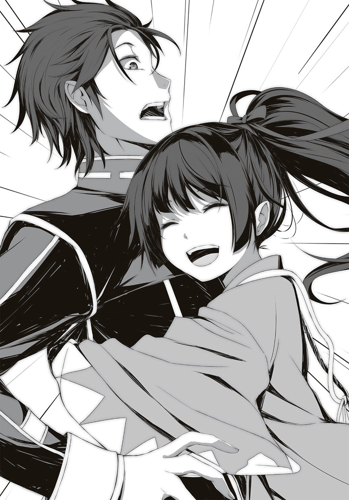
修太郎が国俊たちを追ってゴミ捨て場に到着した頃には、すでに事件は終わっていた。
何があったのか想像しようとするが、少し時間を要した。
なにしろゴミ捨て場前に倒れている男子生徒と、国俊を抱きしめているこだまの姿を見てどういう過程を想像すれば良いのか。
「大丈夫か!?」
とりあえず、そう声をかけてみる。
「やぁ、田辺さん」
こだまに取り憑いた沖田総司は無事なようだ。国俊の様子を見る限り、ケガもしていないだろう。
しかしあのこだまが国俊に抱きついている光景は珍しい。
前から国俊に好意を持っていると確信していたが、いきなり抱きつくような愛情表現をするような後輩ではないはずだ。
沖田総司が憑依する事で、理性のタガも緩むのだろうか。
「国俊、無事か!?」
確認のために国俊に呼びかける。
彼はゆっくりと修太郎の方を向き、
「ああ」
と答えた。
この表情と声と言葉だけで、分かる。
――国俊ではない。
「誰だ......お前」
高校からの付き合いだが、他人と見間違えるほど薄情な関係ではない。
あの国俊に見える何かから発せられる雰囲気は、総司とまったく同じものだ。
何かが国俊に憑依しているのか――！
「分かるか。さすがは修太郎、彼が親友だと思っているだけはある」
「うるせぇっ！」
修太郎は叫んだ。
怒りが沸き上がっている。
こだまの時は困惑していたが、今はこの状況を受け入れつつある自分がいる。
誰かの人格が憑依している、という事は、元の人格が追いやられているわけだ。彼らの元の人格を差し置いて、別人が乗っ取っている。大切な親友と後輩にそんな事をされて黙っていられるはずがない。
「怒るな修太郎。これは彼の望みでもある。彼が『私になりたい』と願った結果、私はここにいるのだから」
「そんなの知るかっ......！」
形はどうあれ、今の国俊たちは不自然な状態だ。
それを元に戻したいと思って何が悪いのだ。
「そもそも、てめぇは誰なんだ!? 上から目線でムカつくんだよ！」
「これは失礼した」
国俊の姿を借りた男は口では謝りつつ、不敵な笑みを消さない。
「名前、か――そうだな、高校生だからイジドール・ボートルレとでも名乗っておくか」
その名を聞いた途端、修太郎にも分かった。
彼のバカにしたような態度と、それでも紳士的に話そうとする心構え。
強さからくる余裕ではなく、全ての事象を楽しんでいる笑顔だ。
修太郎の知る限り、そんな男はひとりしかいない。
「ふざけんなよ。ボートルレはお前を追い詰めた少年探偵の名前じゃねぇか」
「フフ――」
言わずとしれた、世紀の大怪盗。
モーリス・ルブランの代表作の主人公。
「アルセーヌ・ルパン――それがお前か」
国俊の中にいる彼、ルパンは目を閉じて頷いた。
まるで「気づいてくれて良かった」と喜んでいるように見える。
「何なんだよ......何なんだよ、これは！」
国俊が部室で言った言葉を思い出す。
――最近何か変だから。
何かの正体......それは、あの沖田総司とアルセーヌ・ルパン。
憧れが生んだ別人格が憑依する事。
――いいや、そうじゃない。
本当に変なのは、同じような症状の人間が同時に二人も現れた事ではないか。
二人だけじゃない。
おそらく、他にも同じような人間がいるのではないか。
何か変なのは修太郎たちの周囲だけではなく、この学園、あるいはこの街、さもなくばこの世界そのものが変わってしまったのではないか。
修太郎は自分の手を見る。
まさか誰かが自分の中にも――
「大丈夫だよ、修太郎。君は君だ。何者でもない」
呼びかける声の主は国俊なのか、それともルパンなのか、修太郎には分からなかったが、それでもその言葉に幾分か救われた気がしたのだ。
＊
怒りでまともに授業が受けられなかった。
放課後になっても持続する怒りが、彼の心を激しく蝕んでいく。怒りを鎮めるために図書室で勉強をしていても、まったく単語が頭に入らない。
「くそっ......これも全て朝霧のせいだ......！」
彼は歯ぎしりしながら頭を搔く。綺麗に切り揃えられたボブカットの髪がくしゃくしゃになるが、誰も気に留めない。
本来なら今頃スッキリした気持ちで勉強しているはずだった。前から気に入らなかった学年一位の女の本性を暴いてやれば、その座から蹴落とす事も容易だったのに。
傷害事件の犯人と同じ教室にいたくない、という気持ちは本物だ。大学も企業もどこまで見ているか分からない。怪しい人間とは一切の関わりを持ちたくない。勉強の妨げになるものは徹底的に排除しなければならない。
それなのにあの眼鏡の男と、あのギャル風の女が邪魔をした。
イライラが止まらない。
「っ！」
シャーペンの芯が折れた時点で、彼は諦めて席を立つ。
このままこうしていても時間の無駄だ。
気持ちを入れ替えるために、顔を洗おう。そう考えてトイレに行く。
流れる水を掬い、何度も何度も顔を洗う。水に濡れている時は気持ちいいが、怒りはまだ収まらない。
このままでは、次の中間テストも勝てない。
勝てなければ落ちていくだけ。
それがこの学園の掟。落ちこぼれには誰も見向きもしない。
だから勉強をしなくては――
「そんなに自分を追い詰めるものじゃないよ」
背後から声がかかった。
振り返ろうとするが、まだ顔が濡れている。目も開けられない。
「だ、誰だ？」
「君を応援する者だよ」
「応援なんて、僕には――」
「いいや、君には助けが必要なはずだ」
不思議な声だった。
耳から全身に行き渡る落ち着いた声。聞いていると力が抜けてくる。同時に胸の奥から熱い気持ちが湧いてくるような感覚に陥る。
肩に手が置かれた。
「いいんだよ、無理をしなくても。勉強なんてしなくてもいい。それよりも大切な事があるはずだ。勉強なんかよりずっとやりたかった事があるだろう。短い青春なんだ、楽しまなくてどうする」
「で、でも――」
「勉強ばかりでは効率が悪い。リラックスするために好きな事をしなさい。ああ、それから気持ちも抑え込んじゃダメだ。今の君は怒りを隠している。もっと怒りを解放するべきだよ」
「怒りを......解放......」
「そんな事をしたら、逆に君が怒られるかもしれないって？ 大丈夫、君は誰にも怒られない。そんな奴らを凌駕する力を、君は持っている」
「僕の............力............」
言葉がするすると入ってくる。
スポンジが水を吸うようにじわじわと染みこんでいく、声に抵抗できない。
声が気持ちいい。
耳から脳に快感が突き抜けていく。
「言ってごらん。君が好きな事は何かな？」
「好きな事..................」
十秒ほど考えてから、彼の口がこう答える。
「......映画。ホラー映画、好きだった」
「ホラー映画。いいじゃないか。私も好きだよ」
「うん......」
「さぁ、もっと自分を解放しよう。何の映画が好きなんだい？」
「僕は......」
徐々に混濁してくる意識に抗えないまま、彼の視界は暗くなっていく。
やがて何も感じられなくなっても、背後から聞こえる声だけは鮮明だった。
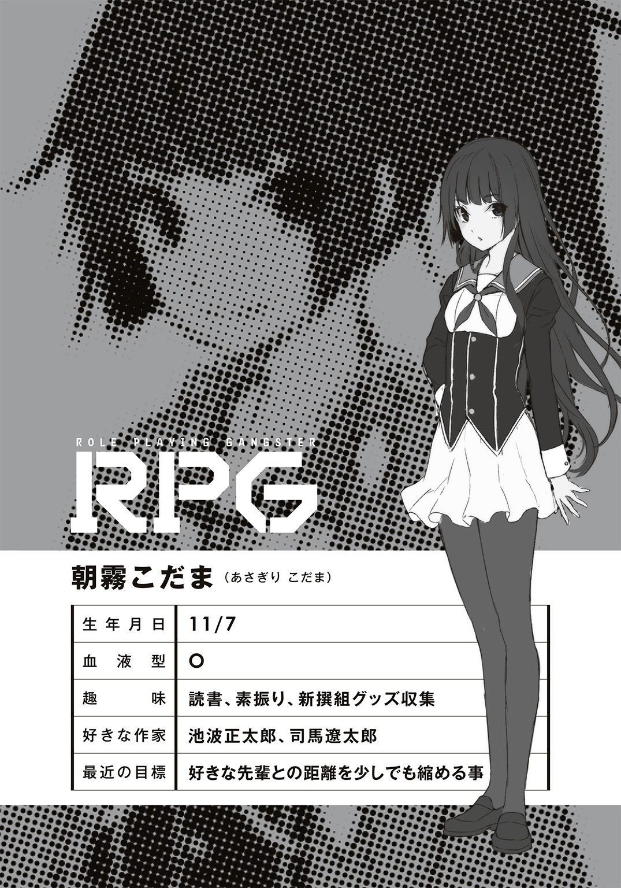
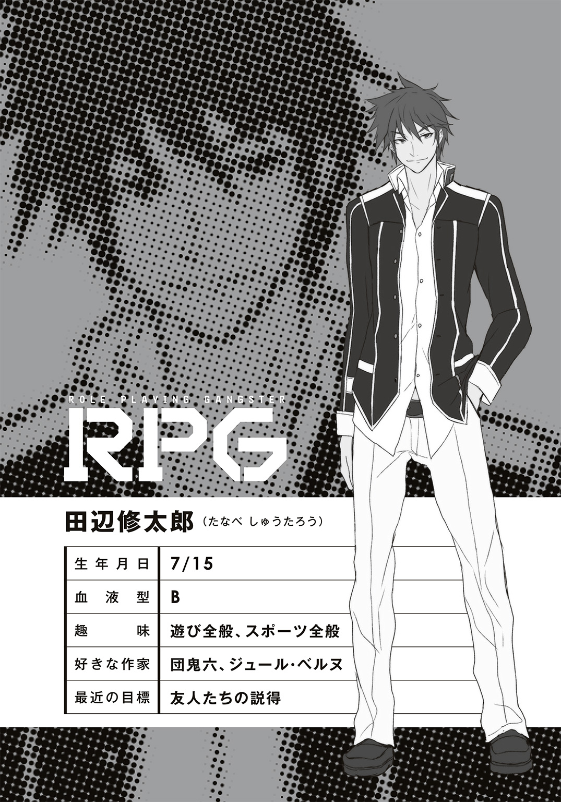
２ 偶然が奇跡をもたらす
子供の頃からヒーローと、ダークヒーローに憧れていた。
少年漫画特有の英雄と、それに対抗するライバル。もちろん応援するのは主人公だが、その裏で悪役の気持ちに触れるようになった。
〝アルセーヌ・ルパン〟という名前を知ったのは、実はそこまで早い時期ではなかった。名前くらいは知っていたが、実際に登場する作品であるルブランの『奇巌城』に触れたのは、怪盗というものに憧れを抱いた後だった。
最初は――そこまでたいした怪盗ではないと思ったのが正直な感想だ。
しかし多くの怪盗に触れていくうちに、気づく。
ルパンは全ての怪盗の原点にして頂点なのだと。
本来、警察に逮捕されるべき犯罪者の美学は、とても甘い響きがした。ただの反社会的行動ではない、己の欲望を優先させたわけでもない、それをする事によって保たれる何かがある。
その〝美学〟は、ただの不良とは違う格好良さがあった。
――だから、憧れた。
ルパンのようになりたいと願い、そしてあらゆる書物でルパンの技を調べ、それを実践するための技術をこっそりと学んだ。
やがて自分の頭の中に、もうひとりのルパンが生まれた。
何か行動を起こすとき、「ルパンならどうするか」を常に考えた。それを実行するわけにはいかなかったが、もうひとりの自分であるルパンは常に囁き続けた。
そして――
「新しい人格になって、外に出てきたんだ」
「いやその結論はおかしいだろ！」
国俊の説明を聞いて、思わず修太郎はツッコミを入れてしまった。
いや、理屈は分かった。
分かったけど、納得がいかない。
「まぁ......分からないよね。苦労かけてごめん」
「その発言、確実に俺に苦労をかける前提じゃねーか」
部室の椅子の背もたれに身体を預けると、修太郎はため息をついた。
いつもの部室。国俊と修太郎とこだまの三人の部員。
何も変わっていないはずなのに、修太郎にはなんだか昨日とは違うように見えた。
原因はやはり国俊の中にいる新入部員だろう。
そいつの名はアルセーヌ・ルパン。
親友が名乗る、もうひとつの名。
――あぁ、大切な友人と後輩がおかしくなっちまった。
修太郎がまず最初に思ったのは、それだ。
そして次に、様々な疑問が浮かんでは消えていった。
国俊とこだま、二人同時におかしくなる事がありえるのか。
おかしくなるというが、そもそも詳しい症状は何なのか。彼らの身体にはどういう変化が起きているのか。ルパンや沖田総司になるという現象の正体は。
そう考えていくと、修太郎の感情は「興味」という一点に注がれていく。
「で、結局そいつは何なんだ？ やっぱり霊が取り憑いてんのか？ それともお前の別人格か何かか？」
「うーん、自分でも良く分からないんだ」
国俊は上を向き、何かを思い出すように視線を彷徨わせる。
「最初は別人格のようだった。記憶が曖昧で、意識を乗っ取られているようで。それから徐々に僕の意思で出せるようになった。変身するような気持ちで」
「......？ どういう事だ？」
「あのルパンは僕なんだ。僕が自分の意思でやっている。でも、別の人格で――」
「ああもう、分かるように喋れよ！ 哲学かよ！」
頭を搔き毟る修太郎。
「朝霧！ お前、説明してくれよ！」
「......その、えっと」
いつもは部室の中央の机で本を読んでいるこだまだが、今日は何故か部屋の隅っこの床に座って貝のように黙り込んでいた。修太郎や国俊から隠れているつもりなのだろうか。
「......すみません、私にも分かりません」
か細い声で答えるこだま。
「でも黒真木先輩の言う事、分かるんです。気がついたらこうなってて、最初は意識がなくて、でも私の意思で動いていて――」
「でしょ？ 朝霧さんもそうだよね？」
「悔しいけど、同意せざるを得ません」
国俊が呼びかけると、こだまは微笑した。
「私、自分が変になっちゃったと思って、ずっと黙ってたんですけど......先輩も私と同じだったんですね。だったらもっと早く言ってください」
「変な事には違いないけどね」
国俊が笑うと、ようやくこだまはいつものように微笑んだ。
「......昨日の事は、おぼろげだけど覚えています。黒真木先輩が助けてくれた事も」
「いやぁ、朝霧さんが危なかったからね。助かって良かった」
「なんだよお前ら、いつにも増してイチャイチャしやがって」
修太郎が皮肉を言うと、
「イチャイチャなんてしてません！ するわけないでしょう、こんな人と！」
顔を真っ赤にして否定するこだま。
「けど俺が駆けつけた時、お前ら抱き合ってたじゃねーか」
「あ、あれは、総司がやった事です！ 私がやりたかったわけではないです！」
別人格だろうが自分自身だろうが、身体は本人のものなのだ。その身体で行った事は、傍目には本人の仕業だと思われる。
その根底にあるのは国俊への好意だろう、と修太郎は推測する。
いまさら隠すものでもないが、こだまは隠していた。それが沖田総司にとっては隠すべきものではなかったというだけだ。
仮にルパンで盗みをしたら、それは国俊の犯罪になる。当たり前の話だが、多重人格が出てくる小説でも、こういう悩みはつきものだった。まさか身近に起きるとは思ってもみなかったが。
「けどよぉ」
修太郎が話を戻す。
「やっぱおかしいぜ。その訳の分からない別人格が、一度に二人も現れるなんてよ」
「それなんだけど」
国俊は昨日の戦いを思い出して語る。
「僕と朝霧さんだけじゃないんだ。他にもいる。おそらく朝霧さんが疑われた傷害事件も関係あるんじゃないかな」
不良や暴力団の抗争じゃあるまいし、そう何度も傷害事件が起きるわけがない。もしもそうだとしたら、きちんとそう説明があるはずだし、こだまが疑われる理由がない。
「なんだってーんだよ、本当に......」
天井を見上げる修太郎。
結局、本当のところは分からないままだ。本当に霊が憑依しているのかもしれないし、あるいは狂暴になるウィルスが蔓延している、もしかしたら多重人格の種のようなものを植え付けられた――
そんな小説のような理由でもないと説明がつかない。
などと考えていると、
「やっほー」
部室の扉が開き、志穂が顔を見せる。
「よっ、ルパンに沖田総司クン！」
あけすけに別人格の名で呼ぶ彼女は、こんな状況でも動じていない。国俊とこだまの変身は修太郎だけでなく、彼女にも見られていたのだ。
そんな彼女が、その後どうしたのかと言うと――
「時間とれたよ！ 今から３―Ｇの教室で教えてくれるって！」
三傑野学園は広い。敷地的な意味もあるが、人の多さも含めて広い。記憶力に自信があるといっても、五千人以上の生徒の顔を全て覚えている人間は数少ないだろう。
生徒の数も多ければ、当然、教師の数も多い。
同じ学年の教師であれば、かろうじて全て覚えられる程度だが、副担任や専門的な教師まで入れると覚えていない生徒もいる。それに勉強をする上で、教え方が上手い教師以外は必要ない。だから覚える必要もないのだ。
修太郎にとって、三年生の教師とはそういうものだ。
だから初めて出会った時「こんな先生がいたのか」と感心した。
「どうも文研のみなさん。俺は司馬と言います」
まだ二十代の教師だが、背が高くて足が長い。顔は薄味の美形で、少女漫画に出てきそうなほど整った身体。予想するまでもなく、確実に女子から人気がある。
――イケメンだけど、首から下が残念だな。
服装のセンスが著しく悪い。サイズが合っていないのか、全体的にダボッとした白い上着とズボン。その上に茶色いチェックのベスト。
「志穂から色々聞いてるかもしれないけど、俺は君たちに起こった現象について少し知っている事があるんだ。それを説明できる」
「本当ですか!?」
もやもやとした感情を晴らせるチャンスに修太郎が目を輝かせる。
納得のいかない事や知らない事があるとイライラしてしまう性格なので、それを知る者が近くにいたのは修太郎にとって本当にありがたい。
「ちなみに先生は米谷とどういう関係......？」
しかし修太郎はまず最初に思った疑問を口にする。
「従兄だよ。小さい頃から一緒に遊んでたんだー」
後ろの席に座っていた志穂が簡単に答える。
それで司馬先生の事が少しだけ分かった。
「ああ、じゃあ神社の――」
「うん、僕のおじさん、つまり志穂のお父さんにはお世話になったよ。この学園に入学してからも、志穂の面倒を見てくれって頼まれてたし」
「別に面倒なんて見なくてもいいし」
「演劇部にも勧誘したんだけど、入ってくれないし......素材はいいから、舞台に立てば栄えると思ってるんだけどなぁ......」
「ていうか悠兄ちゃん、まだあたしを演劇部に入れるつもりだったの？ 絶対にヤダからね！ つーか演劇部、今でもいい役者いるじゃん！」
肩を落とす司馬先生と、珍しく声をあげて怒る志穂。普段からこうやって兄妹のような関係なのだろう。
「演劇部の顧問なんですか？」
こだまが問うと、司馬先生は頷いた。
「それも関係しているんだけど、まず本題に入ろう。志穂の話だと、君たちに別人格が憑依したと。それはアルセーヌ・ルパンだったり、沖田総司だったり、架空の人物なわけだ」
教壇から修太郎たちを見回して、司馬先生は話し始めた。
「もう想像がついているだろうけど、この現象、実は君たちだけじゃない。僕のような下っ端教師にもいくつかの事件について耳に入っている。例えば、昨日ゴミ捨て場でケガをして病院に運ばれた生徒がいるんだ。全身をすりむいて、骨にヒビが入っていた」
その生徒には心当たりがある。
修太郎は直接見ていないが、国俊の話ではゴリラのように強い男と戦っていたらしい。なんでも刀を歯で摑むほどの怪力だとか。
「ケガはたいしたことなかったんだが、記憶が曖昧だそうだ。医者が話を聞くと、彼は『自分がゴリラになった気分がした』と証言している」
ゴリラになるとはどういう気分なのか。
修太郎は想像を巡らせてみるが、いまいち分からない。
「その生徒について少し調べたんだけどね。一年Ｄ組の吉田くんと言うんだが、特技がゴリラのモノマネだそうだ」
「モノマネ？」
「すごいだろ。これは中学の内申書にも書かれてたプロフィールでね。よっぽど得意だったんだろうね」
全員、言葉が出ない。
「内申書に書かれるほど凄いゴリラのモノマネって事は、達人レベルだろう。本人もよほど練習したんだろうね。好きじゃなきゃ、ここまで続かないよ。ゴリラの役があれば、ウチの演劇部にスカウトしたいくらいだ」
司馬先生も感心する。
修太郎はもう一度想像してみた。その吉田という男がゴリラのモノマネをする時の気持ち。ゴリラの生態を学び、声を学び、そうしているうちに、いつしかゴリラになる。
「彼も、君たちと同じだよね」
国俊とこだまを見る司馬先生。
「憧れが人格になり、能力になった。君たちもそうなんだろう？」
「......はい」
沈痛な表情の国俊を見て、司馬先生は少しだけ笑った。
「そんなに難しく考えなくていいよ。原理はとても単純なものなんだ」
「そうなんですか？」
ずっと頭を悩ませているこの現象。別の人格が人間を支配する不思議なこの力を、司馬先生はこう説明する。
「君たちがやっている事は、演技だからね」
全員がぽかんと口を開ける。
「......えっ？」
まさか冗談で言っているのか。
司馬先生の笑顔からは、そういう印象も受ける。
「待ってください！ 演技なんかじゃありません！ 実際に僕の中にはルパンがいて、それが僕の意識を乗っ取っていたんです！」
「うん、別人格がいるのは確かだろうね」
国俊の抗議を、司馬先生は肯定する。
「じゃあ訊こう。ええと、黒真木くんだったね。君は演技とは何だと思う？」
「演技って、そりゃ、お芝居とかで役を演じる事で――」
「そう、その通り。演技とは〝役割を演じる〟んだよ。舞台上のストーリーの中での配役として、舞台の上でその人の行動をする」
彼が本気だと気づき、国俊は何も言えなくなる。
国俊は分かっていないようだが、修太郎にはなんとなく読めてきた。
「優れた役者が配役をきちんと演じるためには、ただセリフを言って決められた動きをするだけじゃダメだ、っていうのは君たちも分かるね？ ではどうすれば上手な役者になれると思う？」
「そうか――その配役に......なりきるんだ」
国俊の呟きに、全員、司馬先生の言葉を理解した。
つまり、彼らの中にいるルパンや総司を〝役割〟と考えれば納得がいくのだ。
ルパンはモーリス・ルブランの書いた小説という世界の登場人物だ。そのルパンの動きをトレースする事は、すなわちルパンの演技をするのと同じ。
ルパンの動き、思考、哲学、それら全てを理解して、彼の動きをする。
優れた演技とは、もはや演技ではない。その人物になる事なのだ。
そう考えると、全て納得がいく。
憧れが別人格を生むという国俊の言葉は、あながち間違っていなかった。憧れた後に、理解と研鑽というプロセスを踏んだ結果、生まれたものだったのだ。
「誰かが指定した脚本を演じるのではなく、君たちはずっと前からその〝ロール〟が好きだったから演じようとする。程度の差はあれ、芝居と共通する部分はあるよね」
「ロール？」
「あ、ごめん。これは後から説明しようと思ったんだけど、心理療法の世界でもそういう方法があるんだ。〝ロールプレイング〟って言うんだけど――まぁ、普通はゲームを思い浮かべるよね」
いわゆるＲＰＧというやつだ。
あれは演劇と同じなのか、と修太郎は考える。言われてみれば、ＲＰＧはキャラになりきって進行するゲームだ。テーブルトークＲＰＧなどはもっと顕著だ。
「〝ロール〟というのは〝役割〟という意味だよ。演劇と同じように、誰かの役を演じる事で、自分が抱えている問題と解決方法を探っていく心理療法だよ。むしろ僕はそちらの方が君たちの状況に近いと考えている」
「心理療法が必要なのは......確かに、そうだと思いますけど」
「ああ、勘違いしないでくれ。君たちの〝ロール〟そのものが問題なんじゃない。それが出るに至った心理的な原因だよ。つまり心の問題だ。ストレスと言い換えてもいい」
「ストレスなら、腐るほどあるじゃん。悠兄ちゃん、ここがどこだと思ってんの？」
志穂の言っている意味は、分かる。
ここ三傑野学園はストレスの宝庫だ。
授業中は私語どころかよそ見すら許されない。教師が叱るのではない。それによって勉強が遅れた者に対する周囲の目が怖くて、必然的に集中せざるを得ない。集中できない者は蹴落とされるだけだ。
クラスメイトも敵だ。順位が低い者は見下され、かといって高い者は追われ続ける恐怖と戦わなければならない。
「ストレスから逃れる......つまり〝逃避〟が根底にあるわけだ。だから俺も君たちのロールを無理にどうこうする気はない。押さえつけたらもっと大変な事になるからね。今日こうやって話をしたのも、君たちに起きた事を正確に把握する事で、ストレスを軽減する意味があるんだよ」
そう聞くと、なんだか司馬先生が学校教師ではなく医者のように見えてくる。白衣を着せたらよく似合いそうだが、確か国語教師だったはず。
一通り説明してくれたおかげで、修太郎も胸のつかえが少し取れた。当事者である国俊やこだまはさらに安堵した表情だ。
この〝ロール〟が生まれた理由と、その過程が分かっただけでも大収穫だ。そしてそれは彼らにとって悪いものではなく、むしろストレスから解放してくれる良いものなのだ。
とすると、残る疑問はひとつだけ。
「先生、質問です」
こだまが手を挙げた。本当に授業のようだ。
「私たちの〝ロール〟が生まれた理屈は分かりました。でもそれだけでは説明がつかない事があります」
「ほう？」
「先日、私は刀を持って戦いました」
教師の前で、堂々と宣言するこだま。
「その時、黒真木先輩が言うには、私は瞬間移動に近い速さで動きました。三人に分身して見えるくらい素早い動きだったそうです」
「ふむ――マンガとかでよく見る〝瞬歩〟って奴かな？ 三人に見えたのは、沖田総司の必殺技と呼べる、あの〝三段突き〟だろうね」
「確かに私はこっそり剣術の練習をしてました。でも、いくら別人格だからって、あんな動きができるわけがありません。それに黒真木先輩のルパンだって変です。走ってる人から靴を盗むなんて、どうやったって不可能です」
「それは......ある種の超能力のようなものがある、と言いたいのかな？」
「――そうでなければ説明がつきません」
俯くこだま。自分の発言に自信が持てないのは分かる。
修太郎も話には聞いていたが、実際には見ていないので何とも言えない。
「うーん、そんな事まで......」
司馬先生もこの質問には困ったらしく、腕を組んで考えてしまった。
「俺はその場で見てないからなんとも言えないけれど、ロールの発現による潜在能力の解放か......ない話ではないけれど、信じがたい......うーん......」
これはさすがの司馬先生でも答えられなかったようだ。
ちょうどそこで時間が切れたのか、司馬先生の時計のアラームが鳴る。
「っと、もう通し練習の時間か。じゃあ、その件については俺も色々と調べておくから、あとは志穂に頼んでおこう」
「へ？ なんであたし？」
「君も彼らの仲間なんだから、ちょうどいいだろ？」
その言葉の意味を知るのに、そう時間はかからなかった。
＊
司馬先生の授業を終えた修太郎たちを待っていたのは、別の生徒だった。
「すみません文研さん。ちょっといいですか？」
短髪の女生徒。修太郎たちと同じ二年生の名札を付けている。ツリ目で細い身体は肉食獣のようだが、実際、今の彼女は獲物を狙う眼光をしている。
この学園の生徒全員を覚えきれないが、彼女の事は誰もが知っている。顔の広い修太郎だけでなく、世俗に疎い国俊ですら知っているくらいだ。
「市ノ瀬さん、だよね？」
「はーい、そうです！ 新聞部部長、市ノ瀬でっす！」
国俊の質問に、ピースサインで答える市ノ瀬。
「よしお前ら帰るぞ」
そんな市ノ瀬の脇を通り過ぎる修太郎。
「ちょっと待ってよ田辺！ 話だけでも聞かせて！」
「うるせーよ市ノ瀬。お前、何様のつもりだよ。マスコミ気取って何するつもりだ」
「今日は記事にしないから！ もう田辺には迷惑かけないから！」
「信頼できるかバカ！」
罵る修太郎と、それに縋る市ノ瀬。
「あの、黒真木先輩......あの二人、どういう関係なんですか？」
こだまと志穂が怪訝な目で見ているので、国俊が簡単に説明する。
「市ノ瀬さん、校内の裏サイトの管理人でもあるんだよ。それで修太郎と友達がネット上でケンカしてるところスッパ抜かれたみたいで」
「なにそれ、バッカみたい。何のケンカ？」
呆れ顔の志穂だが、
「アニメのヒロインのどっちが可愛いか、映研の部長と本気で罵り合っていたよ」
「......ごめん、『バカみたい』じゃなくて本当に『バカ』だったわ」
「うるせぇ、男の世界に口を出すんじゃねぇ！」
ちなみに映研の部長とはいまだに決着がついていない。それどころか裏サイトでは原因となったアニメの話題で他者を巻き込んでの戦争状態だ。
「で、なんだよ市ノ瀬。俺たちは今忙しいんだよ」
「うんうん、知ってる知ってる。だから呼び止めたんだよ」
市ノ瀬は修太郎ではなく、国俊とこだまを見ていた。
「君たちも〝新型中二病〟なんでしょ？」
新聞部の部室は文学研究部と同じ部室棟にある。
この二つの部に限らず、文化部と定められた部活は全て西側の部室棟に押し込められている。それぞれの部室は広いが、やはり隣近所の諍いは多い。
その中でもダントツで問題が多い部活が、ここ新聞部だ。
部室そのものは質素だ。入って正面の机とソファ、それと奥の机。奥の方はデスクトップパソコンと三つのモニター、それにタブレットや複数のスマホが置かれており、まるでロボットアニメの司令室か、オタクの自室のようだ。
それ以外は壁の本棚にある部誌のバックナンバーと書類棚くらいだ。全ての作業をあのパソコンで行っているのだろう。
そのパソコンデスクの脇にある小さな机。
「――ども」
そこに男子生徒がひとり座っている。同じ新聞部の生徒だろうか、何か作業をしていたようだが、こちらに気づくと軽く会釈をして、また作業に戻った。影の薄い男だ。
「あ、彼は気にしないで。どうぞ座って」
「はぁ」
修太郎たちはソファに座り、市ノ瀬の反応を待つ。志穂は帰りたがっていたが、市ノ瀬がどうしてもと言うので連れてきた。
「さっきも言ったけど、君たちだけじゃないのよ、〝中二病〟は」
市ノ瀬はそう言って、タブレットの画像を見せてくれた。
ブレているため詳しくは確認できないが、誰かがケンカをしている――いや、そんな生やさしいレベルではない。何か武器のようなものを持って激しい殺し合いをしているように見える。
「――ちょっと詳しく見せろ」
修太郎の脳が動き出すのを感じる。
彼は奪うようにタブレットを取ると、画像を切り替えていく。
次の画像には、歌舞伎かオペラのような派手な衣装を着て夜の校舎を歩いている誰かの姿が。また別の画像には、黒板にびっしりと数式を書く科学者と、彼の隣で何か歪な装置を作っている科学者の姿。
仮装大会のようだ。
「これ全部、僕たちと同じ――」
「そ。〝中二病〟の患者さんだよ。多分、みんなウチの学園の生徒だね」
「市ノ瀬さん。さっきから言ってる〝中二病〟って」
「あー、私が勝手にそう呼んでるだけ。〝新型中二病〟と書いて〝ダブルロール〟。ま、好きに呼んでもらっていいけどさ」
「〝新型中二病〟......」
言われてみれば、その通りなのだ。
自分がカッコイイと思っていたキャラクターになりきるのは、本来、若気の至りとしてネットなどでは嘲笑される対象だ。国俊やこだまの変身を見たら、きっと普通の人はドン引きするだろう。
とても恥ずかしい事だから、誰にも言えず、ひとりで抱え込む。
もしも修太郎以外の人間が現場に出くわしたら、国俊たちはどうしていただろうか。
「へへ、やっぱり〝中二病〟って言われるとヘコむ？」
当然の質問をする市ノ瀬。
「でもご安心あれ。黒真木くんだけじゃないから。この学園には君たちと同じ〝新型中二病〟の患者さんがいっぱいいるんだよ。仲間だね！」
「仲間......って言っていいのかな」
昨日のゴリラの彼のような例もあるだろう。それに傷害事件を起こした連中。あいつらと同じとは思いたくない。
「......黒真木先輩と仲間か」
そっぽを向きながら、こだまが小さな声で呟く。
「同病相憐れむって奴だよ。仲良くしよう」
「勘違いしないでくださいよ。先輩と仲良くしたいのは私の中の総司で、私は先輩の事なんてどうでもいいんです」
冷たい言葉とは裏腹に、こだまの声は落ち着いている。
「ま、そんなわけでさ。色々と情報共有しときたいな、と思って呼んだのよ。この学園にどれだけ〝新型中二病〟がいるか知らないけど、私はそれなりに情報を持ってる。お互いに協力しない？」
市ノ瀬が手を差し伸べる。
彼女の言うとおり、情報は欲しい。
しかしこのまま何も知らずに彼女と取引していいものか、考える。
修太郎だけなら、喜んで飛びついた。
面白い事に首を突っ込むのは得意だ。
しかし国俊とこだまは違う。むしろ彼らが当事者なのだ。彼らに余計な迷惑がかかるかもしれない。
そういうものから救う意味でも、協力した方が良いのだろうか。
「どうする？」
修太郎は国俊に尋ねる。
すると国俊が前に出て、差し出された市ノ瀬の手を握る。
同時に、メガネを外した。
すると国俊の身体から力が抜けたように見えた。
そして――
明らかに国俊ではない、誰かが笑った。
一目で分かる。顔つきからして違うのだ。
メガネを外した瞬間、国俊だったもの――柔和な表情や近眼特有の細い眼などが消え去り、代わりに挑戦的な目つきをした不気味な男が現れたように感じられた。
彼は市ノ瀬の手を握ったまま、顔を近づけた。
その仕草も、国俊のものではない。
顔だけではない、メガネを外すと姿勢まで変わっていた。
おどおどした国俊とは違い、背筋をピンと伸ばして顎を引いている。そのせいで身長まで伸びているように感じられる。
アルセーヌ・ルパン――
世紀の大怪盗が国俊の身体を乗っ取った。
いいや、違う。
今この瞬間、国俊がルパンになったのだ。
まるでメガネを外す事がトリガーになっているかのようだ。
スイッチのような仕組みで、ルパンが現れるようになっていたのか。
「いいだろう。お互い対等な関係での協力なら歓迎しよう。しかし君が一方的に得をするような真似は容認できないぞ」
耳元で囁くと、ルパンは顔を離す。
しかし握った右手は離さない。市ノ瀬が手を引いても、ルパンはぎゅっと握ったまま会話を続ける。
「も、もちろん。私は噓はつきません。えーと......」
「私の名はドン・ルイス・ペレンナ。では教えてもらおう、市ノ瀬友紀。君が協力する目的は何だ？ それをして何を得る？」
「そ、それはもちろん、あなた達を助けたいから――」
「助けて何を得る？」
「それは――学園の平和と、それから」
「それから、脅迫材料かな？」
ルパンは握手していた右手に、さらに自分の手を重ねてから一度に離した。
残された市ノ瀬の手には、白い布が。
「なにこの......」
それをよく見ようとして、
「ッ!?」
すぐに市ノ瀬は自分の腰に手を当てた。
何かを探しているようだが、見つからない様子だ。
スカートの中にあるべきものなんて、ひとつしかない。つまりあの布は――
「えっ......!? なんで!? いつ!?」
「それからあそこのパソコンと、部屋に隠している小型カメラのメモリだ。覗き見をするなら、もう少し上手くやるんだな」
ルパンの手から数枚のメモリーカードが落ちる。
手の届かない場所にあるカメラのメモリなど、いつ抜き取ったのか。
「あんた......！ 誰!?」
青ざめた市ノ瀬が距離を置く。逃げたりメモリーカードを拾ったりしたいところだが、スカートがめくれないように押さえるので精一杯だ。
「おいおい、市ノ瀬はルブランなんて読まないから偽名にも気づかねーよ。ユーモアも理解できなきゃスルーされるぜ」
修太郎はルパンの胸を軽く叩いた。
悪いとは思いつつ、いけすかない女が慌てている姿を見ると胸がスカッとする。こちらに対して隠し事をしているのなら、なおさらだ。
「ぎ、偽名？ なんでそんな噓を......!?」
「それから、そこの君！」
ルパンは机で作業をしていた男子生徒を指さす。
市ノ瀬がこれだけ騒いでいても振り向きもしなかった彼だが、
「その物騒なものはしまってくれ。こんな場所で戦うつもりはない」
「――ケンカを売ってきたのは、そっちじゃないのか。市ノ瀬に手を出すのなら、俺はお前を撃つ」
低い声で呟くと、彼は手に持っていた巨大な銃を取り出して見せた。
不思議な形の銃だった。クロスボウのように扇状に広がって見えるが、銃身がいくつも並んでおり、そのひとつひとつから弾が発射される仕組みのようだ。なんとも使い道に困る銃である。
あの銃はどこかで見た事がある。
いいや、そもそもあれは銃ではない。もっと大きな――
「変わった銃だな。君が作ったのか」
次の瞬間、その銃はルパンの手にあった。
彼が望めば、どんなものでもこの手の中に入るのだ。
「――お前、俺の兵器を」
「武器は私に通じないぞ。全て盗んでやる」
「――どうかな」
男子生徒の手には、まったく同じ銃が握られていた。ルパンと彼、合計二丁の銃がある。しかし銃はともかく、弾はどうなっているのだろうか。
まさか実弾――いやいやそんなはずはない、きっと多分。
「いくつも銃を持っているのか」
「――いや、今作った」
男子生徒はニヤリと笑う。
高校生なのだから我々とそう年齢は変わらないはずなのに、大人びた笑い顔だった。その目は何を見ているのか分からず、狂気を感じさせる。
「君も〝中二病〟なのか」
市ノ瀬が護衛もなしに中二病患者を呼ぶのは変だと思っていた。
国俊やこだまの〝ロール〟も知らずに招き入れたのだから、よほど強力な守り手なのだろう。
「その変わった銃には見覚えがある。そうか、君は......そういう事か。芸術を極めようとするあまり、君が生まれたんだな」
ルパンも気づいたようだ。
そう、彼は芸術だけではなく、あらゆる分野に通じる天才。
「――俺はレオナルド・ダ・ヴィンチ。芸術と市ノ瀬の邪魔をするなら排除するぞ」
彼はその人物に憧れた結果、〝中二病〟を発症してしまったらしい。
その天才的な技量で、たった一瞬で銃を作り上げた――それが彼の超常的な能力。
なるほど、と修太郎は頷く。
こんな時でも好奇心が先に動いてしまう自分が呪わしい。互いに物騒なものを突きつけ合っている状態でも、その〝ロール〟の詳しい能力と発現理由が気になってしまう。
確か彼は新聞部ではなかった。
修太郎の記憶が確かなら、美術部員だったはず。
ならばその〝ロール〟にも納得できる。
「銃か。そりゃいい。ボクの剣とどちらが速いか勝負しましょうか」
髪をくくり、殺気のある笑顔を浮かべているのはこだまではなく、総司のロールだ。
どこにそんな刀を隠していたのか、抜き身の刃がキラリと光る。模造刀だと思うが、総司の技量なら人くらい斬ってしまうかもしれない。
その刃が、ルパンの首筋に当てられている。
「総司。向ける相手が間違っているぞ」
「いいえ歳三さん。これであってます」
「歳三という名前は私の偽名にはないのだが、まぁそれには目を瞑ろう。ところで私を刃物で脅す理由を教えてくれないか」
「女性の下着を盗む輩を捕縛するのは当然でしょう」
「......言われてみれば新撰組は警察組織だったね。私にしてみれば敵というわけだ。加えてガニマール警部ほど説得の通じる相手でもない」
「それから――個人的に腹が立ちました」
「うーむ、それはどうしようもない」
殺伐とした光景に、修太郎も一瞬だけ止めようかと考える。
しかしよく見てみれば、何の事はない、いつもの痴話ゲンカではないか。
そう考えたら、少し気が楽になる。
姿形は違えど、紛れもなく彼らは黒真木国俊と朝霧こだまだ。今は〝ロール〟という化身を身に纏ってはいるものの、彼らを形作るものは変わっていないのだ。
「修太郎。君は親友だったな。助けてくれないか」
「悪いが、今回ばかりは擁護できねぇ」
真顔で否定する修太郎。
観念して両手を挙げるルパン。総司は銃を持った男子生徒と頷き合うと、どちらも武器を下げた。
「やれやれ――いくら私でも、三人相手はきつい。悪かった。悪ふざけが過ぎたよ」
「三人？」
総司が尋ねると、ルパンは部室の扉を見る。
「――気づいていたのか」
銃を持つ男に頷くルパン。
彼らが何の話をしているのか分からない。
「部屋の外にひとりいる。おそらく〝新型中二病〟の仲間だ」
「マジか」
急いで修太郎は部室の扉を開ける。
が、廊下には誰もいない。
周囲を見回すと、何かの匂いがした。男臭い汗と――金属や火薬の匂いか？ 少なくとも安全を感じるような匂いではない。
「ダヴィンチくんだけでは心許ないだろうからな。彼は優れた芸術家であって、戦闘員ではない」
「――知った風なことを」
「知っているとも。君が描いたモナリザは我が屋敷に大事に飾ってあるよ。ルーブル美術館にあるのはニセモノさ」
「――ふん」
名を呼ばれると、彼――レオナルド・ダ・ヴィンチは頰を赤らめて銃を机に置いた。自己を誰かに認めてもらうのが嬉しいのだろう。総司と同じだ。
「しかし市ノ瀬くん。君も大胆だな」
「......何がよ」
パンツを盗まれて涙目の市ノ瀬だが、それでも目の奥の光は消えていない。むしろ怒りながらもルパンと総司に興味を持っている口ぶりだ。
「ダヴィンチくんはいい人だが、〝中二病〟が善人だけとは限るまい。もしもダヴィンチくんの銃や、外にいる彼にもひるまない凶悪犯が来た場合はどうするつもりだったんだ？」
そう語るルパンが善人とは口が裂けても言えない。
もともと彼は稀代の大怪盗で、善からは遠く離れた人間だ。
加えて〝新型中二病〟とやらはストレスで抑圧された人格が現れたものだ。欲望に忠実に動くに決まっている。
「分かってるよ。でも、ちょっと前までは安心だったの」
スカートを押さえて座ったまま、市ノ瀬は笑う。
「正義の味方もいれば悪役もいるよ。悪い奴に襲われそうになっても、正義の味方が助けてくれる。彼らもそういう仕組みだって理解してるらしく、仲良くケンカしてたよ。〝中二病〟同士で戦って、普通の人には迷惑かけなかった」
「しかし現に無関係の人間が襲われているだろう」
「うん......そうなんだよね。今まで学園内で収まっていたのに、最近じゃ色々な〝ロール〟が増えちゃって......だから情報が欲しいんだよ」
「なるほど」
ルパンが頷くと、総司はようやく刃を引き、鞘に収めた。ルパンは無事な首筋を撫で、皮一つ切れていない事を確認する。
「では最後の質問だ。その情報を得て、君は何とする？ ただ〝新型中二病〟の生徒を眺めて笑っていたいだけなのか？」
「......なわけないじゃん」
市ノ瀬は首を横に振る。
「あんたたちも含めて〝中二病〟の人たち、みんな楽しそうなんだ。この学園で暮らしてると、そういうはけ口が必要になるんだよ。でも、このままだとそれも壊されちゃう。それが嫌なんだ」
「生徒のためか」
「って言うより、学園に潰されるのが嫌なの」
舌を出す市ノ瀬の気持ちは、ここにいる全員にも伝わっている。
そもそも中二病が生まれた原因は、過度なストレス。それを与えている学園に良い印象を抱いている生徒などいない。
それが裏サイトの管理人ならなおさらだ。
これは彼女なりの、学園への抵抗なのだ。
「市ノ瀬くん。ひとつ、教えておこう」
ルパンは指を立てる。
「正義を執行する者も、悪に走る者も、それから私も――全て目的は一緒なのだよ」
「それは......？」
「〝遊び〟だ」
ズバリ、彼は言い放つ。
「なりたい自分になり、やりたい事をする〝ごっこ遊び〟だ。それをすると、とても気持ちがいい。全ての目的はそれだよ」
ストレスから生まれた存在なのだから、目的はストレス解消なわけだ。
至極まっとうな理由かもしれない。政治的、道義的な理由よりよっぽどマシだ。
「もっとも、それを言えば世の中の大半の人間がそうなんだがね――」
＊
その日はそれ以上の収穫が得られなかったので、下校する事にした。
ゲートの認証で学生証を提示し、下校時刻をきちんと入力する。自動改札のようなゲートを抜けると、最後に巨大な正門から外に出る事ができる。
本来なら校門の前にあるバス停で解散するのだが、その日はそのまま歩いて駅の方へ向かった。駅前のショッピングモールで何か食べていこうという話になったのだ。ここまで付き合ってもらった志穂へのお礼の意味もある。
普段あまり話さない志穂だが、意外にもこだまと話が合った。女子同士というより趣味が合ったようで、好きなバンドから始まり、よく読む少女小説や少女マンガなどで盛り上がった。むしろ国俊と修太郎は蚊帳の外で、こだまが時代小説以外もちゃんと読んでいる事実に驚いたりしていた。
ひとしきり楽しい時間を過ごすと、もう外は暗くなっていた。六時を過ぎたばかりだというのに、もう星が見える。夏が完全に終わった証拠だ。
「今日は本当にありがとね、米谷さん」
「ううん、あたしも他人事じゃないしね」
「......？」
国俊のお礼に、志穂はサラリと不思議な発言で返す。
「あんたらみたいな〝中二病〟の人がこれからも増えるだろうしね。あたしも色々知っておいた方が役に立つでしょ」
「神社に駆け込む人も出る、って事？」
「そ。狐憑きの一種だからね」
軽く言う志穂だが、根は人を助けたいという気持ちがあるのだろう。優しい心の持ち主である。
そんな会話をしながらモール近くの駅を通り過ぎ、踏切を渡る。そろそろ学園から一番近い修太郎の家に近くなってきた頃。
ふと、声が聞こえた。
「おい、今の」
「はい」
修太郎もこだまも志穂も全員が聞いた。
悲鳴だ。
しかもすぐ近くから聞こえる。
国俊が真っ先に飛び出した。現場はアパートやマンションが建ち並ぶ住宅街で、叫び声が聞こえた場所は、道路に面した道。
曲がり角から道路に出ると、すぐに分かった。
「た、助けて！ と、通り魔だ！」
「きゃあああああっ！」
おそらく三傑野学園の生徒だろう、私服姿の若い男女が逃げてくる。
その先には閉店したファミレスがあった。三傑野市は学生が多いので、安くない食事処はすぐに潰れてしまうのだ。
チェーンで入れなくなっている駐車場に、人影があった。
羽織を着て刀を提げている。
それだけで通報対象だ。
「君も〝新型中二病〟......！」
確認するまでもない。どう見ても危険な香りしかしない。
「修太郎。米谷さんを頼む。多分、暴れると思うから、少しだけ待ってから警察に通報してくれると助かる」
こだまには下がるように言わない国俊。どうせ何を言ってもついてくる、そう確信しているからだ。
「いや警察呼ぶのはいいけどよ、お前が行く必要なくね？」
言われてみれば、その通りだ。
危険だと言われている場所にわざわざ近づく道理はない。普通は他の人と同じように逃げるべきなのだが、国俊とこだまは深く考えずに現場に向かうつもりでいた。
「......確かに」
国俊は頭を搔いて、理由を説明する。
「でも、行かなきゃ。暴れているのが〝新型中二病〟だとしたら、同じ境遇の僕たちなら対抗できるかもしれない。それに――」
「それに？」
「――面白そうじゃないか」
国俊は笑う。
その声は国俊のものなのか、それとも彼の中のもうひとりが発したのか。
全てはストレス解消のための〝遊び〟なのだ。
超常的な力を持った〝新型中二病〟たちと戯れたい。
それが一番の理由だ。
「......そこまで言うなら止めないけどさ。気をつけてよ。本当に」
志穂もそう言い残し、修太郎と共にその場を離れた。
二人が去るのを確認して、国俊はチェーンをまたいで駐車場に入る。
同時にメガネを取る。
近眼だったはずの国俊だが、〝ロール〟が前に出てくると視界まで変わるのだ。そのためにメガネを外していたのだが、いつしかその行動自体がスイッチになっていた。
視界がぼやけ、国俊の意識が薄れていく。
代わりに別の何かが意識をクリアにしていく。
身体の中に溜まっていた暗い何かが顔を見せたと思うと、逆にそれが嫌な気持ちを全て吹き飛ばしてくれた。
そう感じた時には、もはや国俊は自分が別の存在に変貌したと認識する。
――私は、アルセーヌ・ルパン。
黒真木国俊という人間は、今は存在しない。
「こんばんは。いい夜だね」
軽快な挨拶と共に、ルパンは彼らに近づいた。
最初は暗がりでよく見えなかったが、女性だ。身の丈に合わない、大きな刀――太刀を持っている。模造刀だろうが、侮ってはいけない。それだけでも充分に凶器だ。
「こんばんは」
意外にも、相手から返事があった。やはり女性の声だ。
「やぁ、ちょうどいい。あなた方も私と同類のようだ」
嬉しそうに笑う彼女は刀に手をかけた。
「お願いがあります。私に斬られてくれませんか？」
抜き身の太刀を構える彼女に、ルパンは身構える。
「いきなりか。そんな事を言われてハイそうですかと納得できるわけがなかろう」
「無理は承知。でも私のために斬られてください」
「私を斬って、何を得る？」
「強さ」
シンプルな答えだ。
「私は強くなりたいんです。強くなって、あの方をお守りしなくちゃならない。女のように細い腕では、あの方を守れない」
悲痛な声だが、目は殺意に満ちている。
自分の目的のためなら平気で相手を斬ろうとする、歪んだ純真さが見て取れる。
「その気持ちは理解できるが、一般人に迷惑をかけちゃいけないよ。あまり大きな騒ぎにしてしまうと、〝遊び場〟が減ってしまう」
「それは――そうですね。少し焦っていたようです。失礼しました」
驚いた事に、その女性も頭を下げた。
マスコミなどに〝新型中二病〟の存在を知られるのは、非常にマズい。あくまで我々は闇の中の存在だ。〝中二病〟はこっそり楽しむものなのだ。
「それに普通の人を狙うより、あなたのような人を斬った方が強くなれそうです」
「ふふん。強くなりたいのであれば、まずは――彼を超える事だ」
「っ!?」
金属が触れ合う音。
刀と刀がぶつかり合う。
まばたきをする速さで距離を詰めた技術も驚嘆だが、その剣を受けた反応速度も神業と言っていいだろう。ルパンにすら理解しがたい世界だ。
「強くなりたいなら、歳三さんよりボクを斬ってごらんよ！」
髪を結んだこだま――沖田総司はすでに戦闘準備万端だ。浅葱色のダンダラ羽織を身に纏い、その顔は喜びに満ちている。これこそが本当の人斬りの顔だと言わんばかりに。
実際、総司は喜んでいる。自らの力を試したがっているのがありありと分かる。
「いいね。強いですね、あなた」
「そっちこそ......いいよ。強いよ。私の剣の力になってくれ」
「はぁっ！」
鍔迫り合いから身を引いた総司が、再び斬る。わずかに身を逸らして斬撃をかわした相手の剣士だが、その羽織の袖がざっくりと切断されていた。
――やはり斬れるのか、あの刀。
新聞部で突きつけられた時、模造刀だと確信していた。しかし総司の剣は模造刀でも人を斬れる。
あの瞬間移動のような〝瞬歩〟と同じような、不思議な力なのだろうか。
必殺の斬撃を避けられた総司はゆっくりと剣を構え、大きく息を吐く。
「新撰組一番隊隊長、沖田総司――参る」
「美濃金山城主、森可成が三男――乱成利」
森成利という名は、あの織田信長の小姓を勤めた〝森蘭丸〟の事だ。
美男の小姓で、その献身ぶりは有名である。礼儀正しく、常に信長の欲するものを察して敏感に動いた優秀な小姓だった。本能寺の変で信長と共に死んだが、その名と美貌の噂は現代まで残されている。
「なるほど。強くなりたいと願う気持ちは、信長を想っての事か」
頷くルパン。
美男と呼ばれた剣士が二人、時代を超えて斬り合う姿はありえないものだ。そして非常に美しいと感じる。
「そぉらっ！」
総司の剣は目に見えない速さだが、蘭丸には当たらない。ゆらりと柳のように身体を揺らすだけで避けてしまう。対して蘭丸の剣は総司に比べると遅いが、総司は剣で受け止めようとせず、常に背後に下がる。
「ふふ、ふふふふふ――」
暗い駐車場に響く含み笑いの声。
蘭丸も好敵手に会えて嬉しいのだろう。
蘭丸が前に出た。
いつもより大きく振りかぶり、剣を横薙ぎに振るう。
「――〝ソノ愛ハ幻ノ如ク〟」
見間違いだろうか。蘭丸の刀が光ったように見えた。
刀に違和感があるが、蘭丸の動きはどこかおぼつかない。首を狙ったのだろうが、まるでホームランを狙う球児のように大振りだ。
が、総司はそれよりも速く蘭丸の後ろに回り込んでいた。あの〝瞬歩〟のおかげなのか、まったく動きが見えない。実際には瞬間移動ではなく、超高速移動なのだろう。だからこそ蘭丸も動きについていける。
「えっ!?」
背後を取ったはずの総司が、驚いて何かを避けた。
すると、先ほどまで総司がいた場所に何かが落下してきた。
巨大な看板だ。
レストランの屋根にあったはずの看板の上半分だ。何か鋭利なもので斜めに切断されており、それが落ちたのだ。
鋭利なものといえば、刀しかない。
「まさか屋上の看板を斬ったのか？ 地上から？」
あの剣の軌道上にあるものは全て斬られてしまうのだ。原理を考えるよりも、まず結果から受け止めて対策を練らなければ死ぬだろう。
最初の一太刀で総司はそれを肌で感じたから、それきり剣を受けずに避けていたのだ。という事は最初に蘭丸が総司の剣を受けずに、あえて斬る動作をしていれば、すでに総司は斬られていたかもしれない。
総司の素早さで、果たして蘭丸の剣を避けきれるか。
こうなれば間合いなど関係ない。刃が向いていれば斬れるのだから。
「ハハハハッ！ ハハハハハハハハハハッ！」
ルパンは高笑した。
――素晴らしい。
ただの剣技ではない。それを超越した何かだ。
これが芸術品ならば盗みたいくらいだ。
「いいじゃないか、〝新型中二病〟！ こんなに楽しいものだとは思わなかった！」
斬られれば死ぬだろう。
もはや高校生同士の戦いではない。命を懸けた戦士の殺し合いだ。
だからこそ、ゾクゾクする。
この死地をいかに切り抜けるか――それが怪盗の腕の見せ所ではないか。
これは病み付きになる。
こんなに楽しい事ばかりなら、ストレスも吹き飛ぶだろう。
「なんで喜んでるんですか、歳三さん」
「決まってる。君達が美しいからだ」
「あなたどちらの味方なんです？」
「それも決まっている。興味をそそられる方だよ」
怪盗は正義では動かない。
より美しく輝く方の側にいたいと思う。
側にいてくれない場合は――盗むだけだ。
「それより気をつけろ総司。あれに斬られれば死ぬぞ」
「大丈夫ですよ歳三さん。斬られなければいいんです」
彼もまた、笑っていた。
死地に近づけば近づくほど笑みがこぼれる。それが新撰組の恐ろしさ。
見ているルパンにも震えが来る。
――美しい。
剣士による殺し合い。現代日本ではまず見られる事のできない激しい戦い。
ルパンでなくとも興奮するだろう。
この美しい戦いをずっと見ていたい。しかし止めなければ総司が危険だ。自分ひとりが危険にさらされるのは構わないが、美しいものが傷つくのは避けたい。
だが、今のルパンにできる最善の策は見守る事くらいだ。
――だからこそ、邪魔なのだ。
先ほどから、あの剣士たちの一騎打ちを妨害しようとしている者の気配を感じる。
じっと息を潜めており、どこにいるかは分からない。しかしルパンの鋭敏な感覚はこの近くにいると告げている。
「まったく、嫌になる。自分の不甲斐なさに。今まで気づかなかったのだから」
ルパンは懐に手を入れると、それを取り出した。
それは手の上で可愛らしく動く、一匹のネズミ。
「――行っておいで、私の〝無名探偵〟」
ネズミはルパンの手から地面に降りると、駐車場を走り抜け、割れた窓ガラスを通って閉店したレストランの店内に入り込む。
真っ暗な店内を走り回り、テーブルも椅子もないホールの中央まで行く。業者が綺麗に清掃しており、ゴミなどは落ちていない。片付けられたテーブルと椅子はホールの隅にまとめて立てかけられており、清掃用具がうち捨てられている。
そんな光景が、ルパンには見える。
今見ている剣士の戦いとは別に、ネズミの視界を通したレストランの風景がルパンに入り込んでくる。
やがて相棒たるネズミが発見したのは、窓ガラスに立つ人影。
それは暗闇の中、じっと飛び出す機会を窺っていた。窓の外で戦う総司がこちらに来た瞬間、飛び出して捕獲するつもりなのだ。蘭丸はどうなのか知らないが、この男には武士道という概念はないらしい。
「見つけた――！」
ルパンは顔を上げ、そちらを見る。
レストランの窓には締め切られたブラインドがある。そのひとつを凝視すると、何者かがこちらを見ている。
ブラインド越しに目が合った――そう感じた次の瞬間、それは窓を突き破って外に飛び出してきた。
ボロボロのコートに隠れているが、今にも全てを壊しそうな破壊の力を感じる。割れたガラスを踏み潰してこちらに歩いてくる姿は、まさに怪物。
彼を特徴付けている仮面――あれはホッケーマスクだ。
「なるほど。君はジェイソン・ボーヒーズか」
ルパンの質問に、彼は答えない。それが答えだ。
ホラー映画の金字塔、『13日の金曜日』に登場する怪人。あらゆる武器で人間を殺戮する伝説のキリングマシーン。彼の前にはどんな言葉も通用しない。心を込めた説得も悲痛な叫びも、心臓ごと握り潰されてしまう。
「無粋な君の相手は私がしよう。さぁ、こっちだ」
ルパンが手招きをする。
さも悠長に構えてはいるが、ルパンはジェイソン相手にどうやって戦うのかまったく算段を立てていない。手持ちのカードは山ほどあるが、それを切るためには相手のカードを見なければならない。
どのような攻撃――いや、殺人をするのか見極めなければならない。
ところが、
「............！」
ジェイソンはルパンではなく、まっすぐに総司に向かって走っていった。まるでルパンなど見ていないかのように、一直線に走る。
予想外の攻撃に、ルパンの手が遅れた。
「〝幽幻盗手〟――！」
ルパンは手を伸ばし――十メートル先にいるジェイソンの服を盗もうとする。手がジェイソンの手にひっかかり、わずかに体勢が崩れた。
しかし万力のような力に引きずられ、ジェイソンは多少ふらつく程度。総司を狙う足は止まらずそのまま暴走トラックのように突撃する。
「総司！」
そう呼ぶので精一杯だった。
「っ！」
総司が声に気づき、ジェイソンの突進を避ける。〝瞬歩〟によって蘭丸との距離を大きく開けた総司。その間に割って入ったジェイソンは、そのまま止まらず駐車場の塀に激突する。
大きく音を立てて、壁が砕け散った。厚さ二十センチほどのコンクリート製の壁が、だ。映画などで使われているものは、砕けやすいように一部分だけ発泡スチロールなどを使っているが、これは本物の壁だ。
「............！」
ジェイソンは砕けた壁など見向きもせず、総司に向き直る。
先日のゴリラは自らの身体を地面に打ち付けてケガをしていたが、ジェイソンの身体はなんともないようだ。映画と同じく、不死身なのか。
猪突猛進なのは、意味がある。
どこまでも執拗に相手を追いかけ、殺すための肉体。ナイフも銃も効かず、反撃した者を絶望させるのが目的なのだ。
「..................！」
そしてジェイソンは再び総司に突進する。
「邪魔だ！ 私の戦いだぞ！」
蘭丸の叫びも無視して、走り続けるジェイソン。
「二対一――多い方が勝つ。戦いの道理ですね」
総司は動じずに剣を構える。敵が多かろうと、〝瞬歩〟があれば避けられるはず。特にジェイソンのような相手なら、簡単に逃げられるだろう。
「っ！」
しかし総司の顔が歪む。
肩口を押さえる総司。そこから赤い血が滲んでいた。
「まさか、斬られたのか......!?」
そんな馬鹿な、と否定しようとするが、あの蘭丸の斬撃はどこまでも届く。ジェイソンの突撃を避けた時、蘭丸の斬撃に掠ってしまったのだろう。
「..................！」
そんな総司に構わず、ジェイソンは彼の身体を摑もうとする。総司は〝瞬歩〟で避けようとするが、少し遅かった。ジェイソンは腕を薙ぎ払うように振り、総司の身体を吹き飛ばす。
さらに追撃するジェイソン。転がった総司に向かって走るが、今度は総司も動きに慣れたのか、〝瞬歩〟で移動する。相手を失ったジェイソンはそのまままっすぐ走り、レストランの壁に激突した。
そのまま壁を突き破り、内部の鉄筋を砕く。
「なんだと......!?」
壁はともかく、鉄筋の建物をまるでお菓子の家のように砕くジェイソンのパワー。人間どころかブルドーザーのような力ではないか。
それに飛ばされた総司は――
「うっ......」
先ほどの〝瞬歩〟で限界だったのだろう。その場に座り込んでしまった。
そんな総司をジェイソンはさらに狙っている。
しかし蘭丸の方は違った。
「やめろ......助けなんかいらない......そんな事をしたら本当の実力じゃない......私が強くなれないだろぉっ！」
頭を抱えて激しく錯乱している。
「この......このぉっ！」
太刀を握り、大きく振りかぶる蘭丸。しかし狙いは総司ではなくジェイソン。
その斬撃はジェイソンを大きく外れ、レストランの外壁を斬る。エントランスの柱が切断され、さらにジェイソンが破壊した壁の亀裂が広がり、入口からホールの中程にかけて、建物が土砂崩れのように崩落した。
大きな音と土煙が起こり、ジェイソンも蘭丸を見る。
「なんというパワーと集中力――いいや、〝鈍さ〟にもほどがあるぞ」
重機も使わず、たった二人でレストランを崩してしまった。それだけではない。崩れた破片が道路に散らばり、車が急停止してあわや玉突き事故寸前になる。
人間のできる技ではない。
思い込みの力だけで、ここまでできるものなのか。そんな相手にどうすれば勝てるのだろうか。
「さて、あそこまでの力を持った相手に、何を盗めば勝てるのやら......！」
しかし事態はさらに変化する。
「............！」
新手だった。
ジェイソンが破壊した駐車場の壁の向こうから、誰かが現れたのだ。
それはフードつきのパーカーを身に纏っており、顔が分からない。しかしあのパーカーには見覚えがあった。
先日、ゴリラ男と戦った時に、最初に総司が相手をしていた男だ。
彼も蘭丸やジェイソンの仲間なのか。
そう思ったが、違った。フードの男はジェイソンを見ると、まっすぐに歩く。彼もまた怪物のようによどみのない足取りでジェイソンに近づく。
そしてルパンと総司を一瞥すると、
「下がれ」
どこかで聞いた事のある低い声でそう呟いた。
そしてジェイソンに向かって素手で戦いを挑む。総司を狙っていたジェイソンもこれを脅威と感じたのか、フードの男に組み付いた。
壁を破壊し、レストランを破壊したほどのジェイソンのパワーなのに、フードの男を押し戻せない。ジェイソンはかなり力を入れているように見えるのだが、フードの男は機械のように悠々とジェイソンを押し戻している。
パワー対パワーの戦い。
それをもう少し見ていたかったが、今は総司が先だ。
おそらく、これなら盗めるだろう。
ルパンは手を伸ばし、
「――〝幽幻盗手〟」
二十メートルほど先にいる総司の身体を盗んだ。
大きさも距離も関係ない。このアルセーヌ・ルパンが〝盗める〟と確信したものは全て盗む。そうでなければ怪盗を名乗る意味がない。
「歳三さん......！」
一瞬にしてルパンに抱きかかえられる総司は、すぐ近くにいる相棒の顔を見て急に顔を赤らめた。
「君はよくやった。後は私がなんとかしよう」
そう言って、ルパンは総司から刀を奪った。
アルセーヌ・ルパンは武芸にも秀でている。体術だけでなく剣も使える――いいや、使えなくてはならない。だからずっと練習を繰り返していた。
総司を地面に降ろすと、蘭丸を見る。ジェイソンの方はあのフードの男がなんとかしてくれるだろう。これでようやくまともに戦えると思ったのだが、
「あぁ......斬りたい......斬らせてよぉ............！ 斬らなきゃ強くなれない......あの人を守れない......！」
顔を押さえて悶え苦しむ蘭丸。
「ああああ、あああああああああっ！」
闇雲に刀を振り回す。すると剣の軌跡が数メートル先まで飛んで行き、それに触れた看板、チェーン、地面、さらにはレストランの屋根までが切断される。斜めに切られた屋根が落ち、さらに隣接するマンションのベランダの一部までもが切られ、崩れてしまう。
斬撃は道路やガードレールにも及び、通行人から悲鳴が上がる。破壊の程度はジェイソンの方が上だが、こちらはより広範囲にわたって壊しまくっている。
あらゆるものが切断され、倒される。人間そのものが斬られていないか心配だが、確認するためにネズミの〝無名探偵〟を使う余裕はない。
さすがにここまで破壊されると、隠しようがなかった。
近くの家から出てくる人、車を停めて走ってくる人。
徐々に駐車場に人が集まってくると、蘭丸は顔を覆う。蘭丸だけではなく、ジェイソンまで周囲を警戒し始めた。
「うううう......！」
顔を押さえたまま、蘭丸は壁の穴から走って逃げた。さらにジェイソンも突進して別の壁を破壊し、そのまま走り去ってしまった。
「逃げたんですか......？」
腕の中で総司が尋ねる。
「そのようだ。彼らにも一片の理性があったようだ。我々も行こう」
ルパンたちと同じく、あの蘭丸とジェイソンも〝新型中二病〟なのだろう。だとすると大勢の人に見られるのはマズいはずだ。
同じ〝中二病〟同士ではなく、不特定多数の人に正体がバレるというのは、〝中二病〟にとって相当な痛手になる。これは自分だけで、あるいは仲間内でやるためのささやかなストレス解消法であり、それを見咎められるのは存在意義に関わるはず。
我々の〝ロール〟は、心の闇の中でしか生きられないのだ。
「おい」
助けてくれたフードの男が近づいてくる。
俳優のように渋い声だ。
あのジェイソンの怪力と争ったはずなのに、服すら傷ついていない。
「すぐに逃げろ。警察と見物人が来る」
やはり聞き覚えのある声だ。誰だったか――
「ああ、助かったよ。ありがとう」
フードをしており、能力も使っていないので彼の〝ロール〟は分からない。しかしこうやって助けてくれたのだから、正義の味方と思っていいだろう。
「それから、黒真木。市ノ瀬をからかうな。あれは敵の多い女だが、なぜか文化系の部活にはファンが多い。寝首をかかれても知らんぞ」
「ご忠告、痛み入る。修太郎にも伝えておこう」
予想はしていたが、新聞部の外で待機していたのは彼だったらしい。ルパンが胸に手をあてて礼をすると、フードの男は踵を返してゆっくりと歩き去っていった。
「さて、我々も逃げるとしよう」
ルパンは総司の身体を背負うと、蘭丸たちと同じように壁の穴を駆け抜けた。
「......残念だが市ノ瀬くんの言った通りだったな」
逃げながら、ルパンは呟く。
「やはり〝ロール〟の中には、悪逆非道な者もいるようだ」
「ボクたちを助けてくれた〝ロール〟もいましたけどね。人それぞれですよ」
「ふふ、そこは時代や世界を超えても変わらぬところか」
痛みをこらえて笑う総司の言葉に、ルパンは少しだけ救われた気分になった。
「だが、彼らの目は......」
「どうしたんです、歳三さん」
「いや、それよりも君の傷が先だ。どこかで休もう」
＊
連絡を受けて駆けつけたのは、公園だった。
修太郎が志穂を伴ってその場所へ行くと、国俊とこだま――いや、ルパンと総司がベンチに座っていた。
「おいお前ら！ 大丈夫か」
大きな声で呼びかけると、彼らは力なく手を挙げる。
「心配したぜ！ あれからどこ行っちまったのか、探してたんだよ！」
「ファミレスはブッ壊れてるし、道路も閉鎖されちゃうし、あたし達が呼ばなくても警察来ちゃったよ～」
街灯に照らされたベンチに近づくと、彼らの状態がよく見える。
どちらも疲れているようだが、特にひどいのは総司だ。肩口から出血している。包帯で止血はされているが、真っ赤な血が痛々しい。
苦しそうな総司の顔を見た瞬間、修太郎はルパンの胸ぐらを摑んだ。
「おいてめぇ！ 朝霧、ケガしてるじゃねぇか！」
「ああ......すまない」
「お前がいるから信用して任せたんだぞ！ それをこんな、嫁入り前の身体によぉ！」
「意外と古風なんだね、田辺」
古風なのではない。ただ男として当然の事だ。
か弱い女性を守れなくて、何が男だ。
そして、それは国俊も同じ考えだと思っていた。アルセーヌ・ルパンは必要とあらば女性にも危害を加える男だが、それでも紳士としての最低限の礼儀くらいわきまえているはずだ。
そんな連中が揃っていながら、敵に女性に傷をつけさせたのだ。
「やめてください、田辺さん」
総司が修太郎の肩に触れる。
「朝霧――いや、沖田総司か。お前もしっかりしろよ！ これは朝霧の身体なんだぞ！」
「ケガなら大したことありません。歳三さんが適切な処置をしてくれました」
「歳三、いやルパンなら応急処置くらいできるかもしれねーけど、掠り傷ってわけでもないだろう」
「それに、歳三さんは悪くありません。これはボクがやりたかった事なんです」
「つっても、お前は――」
「むしろボクはとても嬉しいんです」
総司は修太郎の説教を遮って続ける。
「ボクの願いが叶った。やっとボクがやりたかった事ができたんです」
「やりたかった事って、斬り合いの事か？」
「それもあります。ボクは剣士ですから。でも、違うんです」
総司は肩の傷に触れる。
「――っ」
俯く総司。痛みに耐えているのかと思ったが、そうではない。
彼は涙を流していた。
それも、嬉し涙を。
「歳三さんを無傷で守れた――それがボクにとって一番嬉しかった」
沖田総司という剣士の第一印象は、その強さと笑顔だ。
しかしそれだけではない。試衛館の仲間たちを本当の家族のように慕う、人情に厚い男だった。
沖田総司が現役で剣を振るっていた時期は、実は相当短い。池田屋事件での喀血に始まり、晩年まで結核に苦しんでいた。新撰組が危機の時も病床から動けず、仲間が死んでいくのを伝聞で知るだけの生活だった。
特に彼が慕っていた土方歳三と近藤勇が死んだ時も、彼は何もできなかった。
誰よりも強い剣の腕を持ちながら、守りたい人を守れずに死んだ悔しさ。
その無念が、今、時代を超えて晴らせたというわけか。
動けない身体に比べたら、肩の傷くらいどうってことない。
朝霧こだまではない、沖田総司として考えたら、そういう事になるのだ。
「理解してくれ、修太郎。我々はそういう存在だ。身体よりも気持ちを優先させる。そのために生まれてきたのだ」
「......そうだな。お前らの存在自体が理屈へのアンチテーゼみたいなもんだしな」
感情で抑制されていた部分が表面化したのが〝ロール〟なのだ。
危ないから、止められているから、決まっているから――そんな常識を打ち破るために存在する者たちにとって、肉体の危険は二の次なのだ。
そういう奴らだと、修太郎も頭では理解しているのだが。
「けど、心配するのは止めねーぞ。お前らの身体は生身なんだからな。下手すりゃケガどころか死んじまうぞ」
「そう、それが問題だ」
ルパンは指を立てる。
すると指の上に小さなネズミが乗った。
「なんだそれ？ 手品か？」
「これは私の能力だ。自在に出せるし、自在に動かせる。私はこれを〝無名探偵〟と名付けた。アルセーヌ・ルパンが何かを欲した時に生まれる、頼れる相棒だよ」
ルパンは欲しいものを手に入れ、見たい光景を見る。
時には探偵の変装をしてまで犯行現場に現れる。
それを〝ロール〟で実現するために、ルパンが叶えた奇跡だというのか。
「しかし、これは明らかに異常だ。ただの人間の範疇を超えている」
それを言ったら、総司の〝瞬歩〟だってそうだ。
蘭丸の遠くまで届く斬撃や、ジェイソンの不死身の肉体。どの〝ロール〟も潜在能力では説明できない、超常現象を起こせてしまう。
「この現象を説明できる者がいれば良いのだが......」
「あー......あの、さ」
おそるおそる手を挙げたのは、志穂。
「ああ、すまない志穂くん。レディに遅くまで付き合わせてしまったね」
「ううん、それはいいんだけどさ。えっと、その」
何でもハキハキと喋る志穂にしては、珍しく口ごもっている。
「話がしたいって奴がいる......んだけど」
「誰？」
「うーんと、それが、ちょっと説明しづらくて......」
全員の頭に疑問符が浮かぶ。
すると志穂は頭をガリガリと搔いて、
「あーもう、とりあえず場所変えよ！ これだと話もできない！」
夜の公園は人通りが少なく、話に適していると言えなくもない。
しかし血に染まった服を着た女の子がいては色々と問題がある。
＊
家が神社だという志穂の住まいは、公園からわずかに離れた場所にあった。
住宅街から山に向かって歩くと、やがてマンションなどの高層建築物が減る代わりに、昔ながらの平屋が多く見られる。
そのうち、そういう家すらもまばらになると、山の麓付近に二階建ての家がぽつんとあった。そこが志穂の家だという。
彼女の両親が出迎えてくれたが、事情を知っているのかやたらと協力的で、あれよあれよという間に話が進み――
「んっ......」
国俊は米谷家の風呂を借りる事になった。
脱衣所で服を脱ぐ国俊。シャツを脱ぐと、上半身にいくつかの傷が残っていた。沖田総司ほどではないが、ジェイソンとの戦いで彼も傷を負っていた。
それに戦えば誰だって汚れる。治療中の総司より先に、国俊が身体を清めてくれと言われたので、申し訳なく思いつつ風呂を借りたのだ。
鏡に映る自分を見る。
今は黒真木国俊だ。
盗みの時に視界が狭いのが嫌だったからメガネを外していたら、いつの間にかそれがスイッチになってルパンが出てくるようになった。
常識ある学生でいたい時は、メガネを外さないようにしよう。
国俊は胸の傷に触れる。ジェイソンと戦った時の傷だ。
ジェイソンもまた〝新型中二病〟だった。
彼も自分と同じ、悩みを抱えているから罹患したのだ。同病相憐れむ、いわば彼と自分は仲間のようなものなのに、どうして戦う事になったのか。
こだまにも怪我をさせてしまった。
本来ルパンは戦うために生まれてきた存在ではない。盗み、騙し、欺くのが得意な〝ロール〟なのに。
「あぁ......ダメだ」
頰を叩く国俊。
ルパンじゃないと、余計な事ばかり考えてしまう。
自分の卑屈な性格や、〝ロール〟の生まれた経緯、それに他の〝新型中二病〟を心配してしまうお節介な資質。
アルセーヌ・ルパンはこんなにカッコイイのに、黒真木国俊はカッコ悪い。
すでに事件は起こっているのだ。
悩んでいても仕方がない――と頭では理解できているのだが。
「はぁ」
ため息と共に下を向く国俊。
わずかにメガネが下にずれた。
すると、ぼやけた視界の向こう、鏡の中にいる自分と目が合った。
そこに、ルパンがいる。
『心配するな』
彼は優しい声で語りかける。
『悩みが多い？ 卑屈な性格？ それがどうした。そういう嫌な自分から逃れるために、私がいるんじゃないか』
そうだった。
抑圧から解放された自分は、もうここにいるのだ。
『だから動くのは私に任せたまえ。余計な事を考えるのは、君に任せる』
「......うん」
国俊はメガネをかけ直す。
すると鏡の中のもうひとりの自分は消えていた。
「歳三さん、なんだか声をあげてませんでした？」
「ごめん総司。気にしないで」
廊下にいる総司に聞かれてしまったか。なんだか恥ずかしい。
「それより総司の傷は大丈夫なの？」
「はい。米谷さんのお父上が治療してくださいました。神主さんなのに非常に慣れてらっしゃって、まるで本物の医者のようでした」
それは良かった。
安心しながら、国俊は服を脱ぐ。大きな脱衣籠にそれを入れると、おもむろに浴室へ続く扉を開けた。
一般家庭のものにしてはやたら広い風呂だった。国俊の実家の数倍はある。檜の浴槽に、数人がたむろできる洗い場――
そして、その洗い場で待ち構えている総司。
「えええええっ!?」
慌てて国俊の方がタオルで総司の身体を隠す。
白い背中とうなじのラインは、怪盗ではない国俊が見ても盗みたくなるような芸術的美しさだった。
「なんでって、歳三さんのお背中を流すために」
「いいよそんなの！ ていうか僕、男なんだけど!?」
「ボクも男ですよ？」
そうだった。
身体は朝霧こだまでも、彼は沖田総司なのだ。
だが小さいながらもふくらみかけた胸や、折れそうなほどに細い腰、なだらかな曲線を描く尻は女性のそれだ。水滴が身体を濡らして、肌に艶っぽい輝きを加味させている。タオルで隠した分、余計にいやらしく見えてしまう。
見るなと言われても、視線が動いてしまう。今、国俊の中ではルパンではなく、天使と悪魔がバトルしていた。その間も国俊はタオルで隠された総司の身体から目が離せない。
「ぼ、僕は大丈夫だから！ 総司はひとりで入りなさい！」
「でもボクはお背中を――」
「ケガ人を優先するのは当然だよ！ きっと土方歳三でもそう言うに違いない！ さあ、入って総司！ さあ！」
半ば強引に総司の背中を押すと、国俊は浴室から転がるように飛び出し、服を全部持って逃げ出した。廊下に出たところで、大きく息を吐く。
「ちょっと、歳三さーん......」
ドア越しに総司の悲しそうな声が聞こえるが、答えられるわけがない。
今は総司だからまだいいが、これで朝霧こだまの人格が戻ったらどうなるのか。法律的にも人道的にも国俊が悪い事になってしまう。
こういう時、ルパンなら粋なあしらい方ができるだろう。
ただ、さすがにこんな事でルパンに頼るわけにもいかなかった。
＊
なんだかんだではぐらかされつつ、服を脱いでしまった以上、総司は風呂に入らざるを得なくなった。
「ふぅ......」
本当は敬愛する先輩のために背中を流したかったが、湯船に入ってから自分がどれだけ疲れていたのか思い知った。
神社というイメージから武家屋敷のような家を想像していたが、今時の洋風建築だった。しかし風呂だけは広い檜風呂で、これなら三人くらい平気で入れる。これは志穂の父の趣味だろうか。
「んっ......」
湯船の中で、総司は自分の手を見る。
先ほどまで刀を握り、斬り合っていた手だ。
ゴリラ男と戦った時は自らを守るためだったが、大切な人を守るために戦ったのは初めてだった。そして仲間と一緒に戦うのも。
不思議な高揚感が総司を満たしていた。
ゾクゾクするくらい、楽しい。
誰かを斬りたいのではない。誰かと戦うのが好きなのだ。
また同じ事があったら、きっと総司は命を省みずに突撃するだろう。剣士としての、新撰組隊士としての誉れが、そのまま快感となって総司を昂らせていた。
だが、この満足感は剣戟だけではない。
歳三――いいや、黒真木国俊を守れた事による充足だ。
「嬉しそうだね？」
総司は尋ねる。
水面に映る自分自身の姿に。
湯船の中には、恥ずかしそうに俯く乙女がいた。
かと思いきや、
『どこが嬉しいもんですかっ！』
嚙みつきそうな勢いで、彼女は怒鳴ってきた。
『私の身体を勝手に操って、黒真木先輩にデレデレしてくっついて！ やめてくださいよそういうの！』
「あ、剣で斬り合ったりするのは別にいいんだ」
『それはいいですよ！ 私の望みでもあるんですから！』
なのに黒真木国俊にくっつくのは望みではないというのか。
「でも歳三さんの近くにいるのは、悪い気分じゃないでしょ？」
『......悪い気分です。最悪です』
「どうして？」
『私と黒真木先輩は、あれでちょうどいい距離感なんです。ああやって悪口を言っても、先輩は笑って許してくれるんです』
「複雑なんだねぇ」
『あの関係を壊す人は、沖田総司でも許せません』
別人格である総司が言うのもなんだが、変な関係ではある。冷たい態度を取るのも、彼女なりの愛情表現という事か。
「良く分からないな。好きなら好きって言えばいいのに」
『そうじゃなくて――ああ、もう恥ずかしい。好きにしたらいいじゃないですか』
半ばやけっぱちになっている。
つかず離れずの関係が好みだったのだろう。互いの仲は進展せず、かと言って険悪にもならない、ぬるま湯のような状態を続けたかったのだ。
――そんな彼女の想いも、一種の〝ストレス〟なのだ。
それが沖田総司に反映されているのだと、彼女はまだ理解していない。
「大丈夫。君の想いは受け取っているよ」
総司は水面に触れる。
波紋が弱気な顔を打ち消した。
「だから、ボクがいる。君の優しい想いを叶えるためにボクが生まれたんだ。必ず最後まで歳三さんを守り続けてみせるよ」
総司は自信を持って頷いた。
どんな敵が来ようが、負けたりしない。
そのための強さは手に入れたつもりだ。
――そう、命に代えても守るのだ。
「やっほー、入るよー」
「えっ!?」
その余韻は、志穂の声によって一瞬でかき消された。
扉が開くと、全裸の志穂が入ってくる。
「どう、ウチのお風呂？ 広いっしょ？」
タオルを持って歩いてくる彼女は大きな胸を惜しげもなく晒し、長い足を見せつけてくる。髪の毛はまとめており、化粧を落としているのに愛嬌のある可愛い顔が笑っていた。
肉感的な志穂の身体を見て、総司は思わず下がる。
「な、な、何をしてるんですかっ!?」
「何って、別にいいじゃん」
「ボ、ボクは女性とお風呂に入るのは――！」
「え、あんたまだ沖田総司なの？ でも身体はこだまちゃんじゃん」
「だけどボクは男だから――！」
湯船の端っこで膝を抱える総司。生前の彼は女性に慣れていなかったという。だからいきなり裸の女性が現れたら驚くのは道理だ。
――けっして志穂と比べて貧相な身体だからではない。
「じゃあこだまちゃんに戻しなさいよ。女同士ならいいじゃん」
「そういうわけにもいかないんです――」
総司は自分の肩を押さえる。
「......ああ、そっか」
志穂は察したようだ。
「それもあって、あたしが来たの。こっちきて傷見せて」
「......はい」
観念して、総司は湯船から出る。
鏡に映る細い身体と、志穂の身体を見比べながら、椅子に座った。
座った総司の背後に、志穂が立つ。
「肩の傷、治りかけていますね――」
「!?」
総司はもう一度鏡を見る。
そこに映っているのは、志穂ではなかった。
髪をほどいた黒髪の女性がそこにいる。柔和な顔立ちで笑っており、清楚な佇まいで立っている。志穂よりも細い身体で、身長も少しだけ低く感じる。明らかに別人だ。
「あなたは――!?」
振り返ると、そこには志穂がいた。
だけど笑い方が違う。
「私は志穂の側にずっといる者。あなたたちとは少し違う形で人に関わろうとする者です。安心してください、危害は加えません」
そう言って、彼女は総司の肩に触れる。
手から温かいものを感じる。癒えた傷口から全身に染み渡る。
「米谷さん......ではないのですか？」
「今は志穂の身体を借りています。ちゃんと了承も得ていますよ」
「説明は、していただけるんですね？」
「もちろんです」
そう言って彼女は肩から手を離す。
すると傷の痛みがほとんどなくなった。腕を回しても平気なくらいだ。
「沖田総司殿――その姿になっている時は身体も頑丈になり、治癒力も増しています。ですがどうぞご自愛を」
「は、はい」
理屈は分からないが、総司の〝ロール〟でいる時は身体が強くなっている。それはルパンや他の〝ロール〟もそうだろう。
それについての説明が欲しいのだが、もしや彼女はそれを知っているのか。
「しかし綺麗な肌ですね――傷が残らないといいのですが」
「ど、どうも......」
滑らかな手が肩から背を撫でる。
今度は別の意味で萎縮してしまう総司だった。
＊
のぼせる寸前で風呂からあがった総司を介抱しつつ、修太郎は次々に起きる不可解な現象に必死で追いつこうとしていた。
あれだけ激しい戦闘をしたルパンや総司だけでなく、今度は志穂までが別人になってしまった。
もはやこの街で正常なのは自分だけかと思い始める。
いや、もしかしたら自分にも何らかの〝ロール〟が――
そんな事を考えつつ、やがて総司の熱も下がると、志穂――の姿をした何者かは修太郎たちを座敷に集めて、こう語る。
「皆様が疑問に思っている事を、ご説明いたします」
足を揃え、その上に手を置き、しっかりと背筋を伸ばして座っている志穂。
その声は静かと言うより荘厳で、楽器のように耳に通る。
「まさか、お前も――〝ロール〟なのか？」
「いいえ」
志穂の姿をした何者かは、ゆっくりと首を横に振った。
「私は志穂ではありません。しかし志穂の身体を借りて話をしている別の存在です。分かりやすく言うならば、彼女に取り憑いている霊です」
「本物の憑依か！」
修太郎が手を叩いて感嘆の声をあげる。
しかし他の二人はびっくりして身を遠ざけてしまった。さしものルパンや沖田総司も幽霊には耐性がないようだ。
「なんだお前ら二人して。似たようなもんじゃねーか」
「い、いやぁ田辺さん。似てないし、普通は誰でもオバケは怖がるものだよ」
「......あ、あの、そんなに驚かないでください」
志穂の中にいる何かは俯いてしゅんとしている。なんだか可哀想な事をしてしまった気がするが、霊だと名乗る相手に初対面で慣れろというのも酷な話だ。
「いくら家が神社っつっても、驚かない方が無理だろ......」
家が神社なら霊感があるというのも都合が良い話だと思っていたが、実際にこうして志穂以外の何かが同居している状況なら納得できるというもの。
「志穂だけでなく、この家はもともとそういう体質なのです」
ちゃぶ台に置かれた湯飲みを取る志穂。
それに倣って、修太郎たちも湯飲みを取った。冷たい麦茶が胃に染みる。そういえば蘭丸たちに襲われて以来、何も飲んでいなかった。
「――そもそもこの三傑野の地は、昔から稲荷信仰が盛んでした。他の土地と違うのは、豊穣のための祭りで、神降ろしの儀を行うのが伝統だったのです」
「神降ろしって......つまり、憑依か」
修太郎の言葉が少しひっかかる総司。
「でも稲荷信仰ってお狐様ですよね？ ってことは......狐憑き？」
「はい。〝狐憑き〟という言葉には悪い意味もありますが、それを使って託宣などを受け取る地方もあるのです」
肯定する志穂。
ということは、今、彼女に取り憑いているのは――
「もしかして、稲荷神......さま？」
「この土地の人からは、そう呼ばれていました」
「マジかよ......！」
震える修太郎。
挙動不審な親友をよそに、ルパンが話を引き継ぐ。
「では神様。〝新型中二病〟と、その神降ろしが関係あると？」
「はい。長きにわたって培った、この土地の霊力のせいだと思います」
「土地の......霊力？」
「人が神を降ろしやすい土台ができているのです。土、水、風、その全てが霊力を孕んでいるため、きっかけがあれば簡単に憑依されてしまうのです。実際、この土地では狐憑きによる事件が昔から多発していました」
「きっかけってのは、多分ストレスの事だろうな」
修太郎が頷く。
「この学園はストレスの貯蔵庫みたいなもんだし。狐憑きってのは一種のトランス状態だ。過度のストレスがそういう状態にさせたんだな」
「この不思議な力も、土地の霊力のせい、という事か」
ルパンは自分の右手を見る。
憑依者に対して力を与える土地――もの凄く限定的だが、利用できれば恐ろしい力だ。
それを悪用する者がいるのが、目下の懸念なのだが。
「なるほどねぇ......土地の霊力、ストレス過多な学園、か」
話を呑み込もうとするが、まだ何かが足りない気がする。
それだけで〝新型中二病〟が多発するものだろうか。
ただの思い込みだけで人格を生むためには、もっと大切なものが必要だろう。
「あとは俺たちの環境だな」
残るは、それだけだ。
「どういう意味だ、修太郎」
「腐っても三傑野って県内でも偏差値高いだろ。なんだかんだで勉強好きな奴らが集まるんだよ。全員、のめり込むと凄い奴らなんだ」
勉強が得意な人間が集まる進学校なのだから、好きな分野に対する学習能力は他の人間より優れているに決まっている。
それがロール、つまり演技力の幅を生むわけだ。
「感受性が高いからこそストレスも大きいって言うしな。ストレスから生まれたくせに、ストレスに弱い存在なんだよな、お前ら」
「そう言われると身も蓋もないな」
ルパンも苦笑して修太郎を見る。
理解するたびに、〝ロール〟に対する偏見が薄れていく。
修太郎の中のストレス――つまり謎が生むイライラが解消される事で、同時に〝新型中二病〟に対する気持ちが和らいでいく。
「ただまぁ」
付け加えるとするなら、これだけだ。
「もうケガするなよ。身体壊したら、そっちの方がストレスが強くなる」
「......悪かった、修太郎」
「すみません田辺さん。気をつけます」
ルパンと総司が謝る。
ストレス解消のためとはいえ、ケガによって別のストレスを溜めたら本末転倒だ。それに修太郎だってストレスが溜まる。
「――私の心配は、別にあります」
志穂の身体に憑依している稲荷神が呟く。
「不満を解消する事が目的ならば、不満を解消できなかった場合、どうなってしまうのでしょうか」
「そこが問題だ。私たちは肉体の損傷よりも、精神的な充足を優先しなければならない存在だ。〝ロール〟に込められた願いを叶えるためにいる。逆に欲望を溜め込みすぎると、我々は傷つくのだ」
真剣に考えこむルパン。
「それって、マズい事......だよな？」
「自己弁護をするつもりはないが、非常にマズい。我々は精神の均衡を保つための存在だからな」
強大なエゴがぶつかり合う事があれば、片方は負ける。
勝者は精神の充足を得られるが、負けた方はどうなるのか。
ルパンはさらに深く考えこんでいる。
「どうした？」
「いやね、先ほど戦った者たちを思い出してね。彼らは強い衝動を持ちながら、我々によってそれを邪魔されたのだよ」
ルパンと戦い、総司を傷つけた連中の事か。
言われてみれば、彼らも目的があったわけだ。
それを邪魔されたのは、強いストレスになる。
「さて、彼らは大丈夫なのか――」
＊
――頭が重い。
――吐き気がする。
――足りない。
ホッケーマスクを顔から毟り取ると、ジェイソンはその場に蹲った。橋の下の薄暗い河川敷に人影はなく、上を通る電車の音がやけに耳障りな深夜。
――殺せなかった。
もう少しで朝霧こだまを殺せたのに。
あいつの顔が恐怖に歪むのを見れば、この気分の悪さも解消できたのに。
レストランの壁を破壊した時は、とても気分が良かった。あのルパンの顔が驚くのはとてもスカッとした。ホラー映画の主人公として、誰かの驚く顔はなによりのごちそうなのだ。
それなのに朝霧こだまの顔は歪んでいない。悲鳴も聞いていない。
ジェイソンにとって一番幸福な時が永遠に訪れない。
――苦しい。
「............！ ......！」
声すら出ないのは、ジェイソンの特徴だ。痛みの声も笑い声もない。淡々と人を殺すために作られた設定。
しかしジェイソンの内面は悲鳴を上げ続けている。
殺したくて殺したくて殺したくて――
だが、それはやってはいけない事だ。
殺人は犯罪であり、道徳的に間違っている。
ジェイソンの人格と、本人の人格がせめぎ合う。
生まれ持った倫理観を保ちたい気持ちと、それらを全て解放して人を殺したい気持ちがごっちゃになるが、どちらに転んでも頭が痛くなるのだ。倫理観を優先すればストレスが高まり、殺人者としての快楽を優先してもストレスが溜まる。
苦しくて苦しくて仕方がない。
この痛みを解放するにはどうすればいいのか。
「苦労しているようだね、ジェイソン」
声。
闇の向こうに立つ、ひとりの人間。
「怯えずとも良い。私だ。〝ファントム〟だよ」
ジェイソンは彼を知っている。自分の中にあるジェイソンという〝ロール〟を解放してくれた者だ。
〝ファントム〟と名乗ったその人物は、今にも殺人衝動を暴発させそうなジェイソンに悠然と近寄り、やがて目の前で立ち止まる。
「苦しいだろう」
ジェイソンの心を代弁するファントム。
「その苦しみから解き放たれたいだろう」
さらに続けるファントム。
もはやジェイソンは呻き声に近い叫びを上げるのみ。
「だったらもっと自分を解放するべきだ。全てのしがらみから解き放たれた獣こそ、君の本来の姿なんだ。何者にも縛られない〝自由〟こそ、君たちにふさわしい」
闇が濃くなってゆく。
ジェイソンの視界が歪み、ファントムの声しか感じられなくなる。
「さぁ、目を閉じて魂を飛翔させるんだ。未知の人生が待っているよ」
最初と同じだ。
自分のストレスも朝霧こだまもどうでもいい。
ただファントムの声だけが――
「与えてあげるよ......〝完全なる自由〟を」
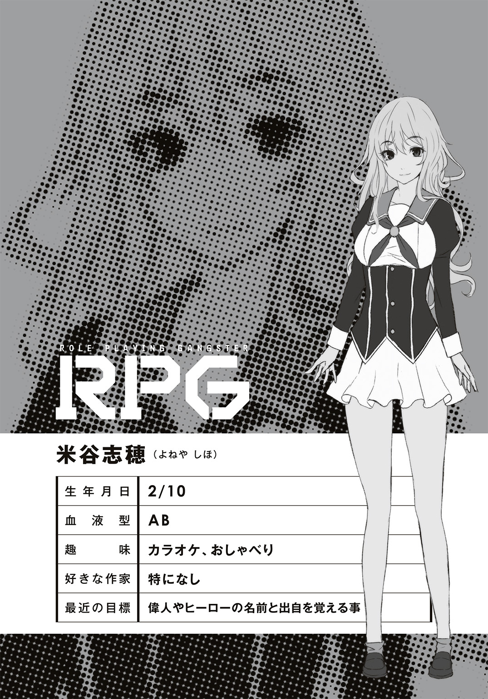
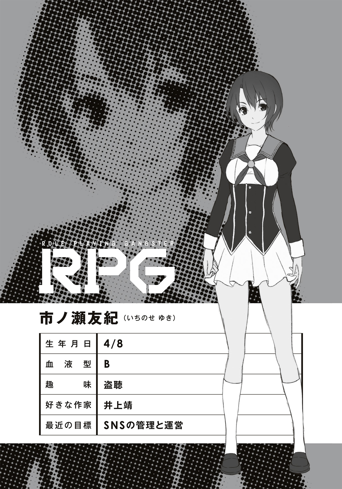
３ ジェイソンの命日
三傑野学園の中でも群を抜いて活動内容が明確で、かつ不明だと言われているのが、映画研究部だ。
放課後、他の部員が来る前に映画研究部の部室に来た部長は、カバンの中から数枚のディスクを取り出して机に並べた。この中から本日観る映画を決めるのだ。
彼は部室でもサングラスをしている。短く刈り上げた髪に精悍な顔立ちだが、なによりも鍛え抜かれた筋肉が目を惹く。部室にも筋トレの器具がいくつも転がっているが、使用しているのは部長だけではない。
彼をして「筋肉モリモリ、マッチョマンの変態だ」と笑う者がいるが、それは彼にとって褒め言葉である。
マシーンのように冷静な瞳で映画を吟味する部長だが、ノックの音に顔を上げた。
「市ノ瀬か」
「こんにちはー」
何度も部室を訪れる新聞部の市ノ瀬。もはやノックの音で分かるようになった。
彼女はいつものように部室に入ってくると、部長の隣の椅子に座った。
「どうした」
低い声で尋ねる部長。
「昨日のお礼を言いに来たの。ありがとうね、文研のみんなを助けてくれて」
「問題ない。我々の映画鑑賞を邪魔するクズどもだが、それでも俺たちの仲間だ」
「ふふ。さすが正義感が強い〝ロール〟ね」
「必要とあらば、悪役も演じる」
部長は一枚のディスクを見る。そこには彼の〝ロール〟が描かれていた。未来から送り込まれた機械人間が殺戮を繰り返すアクション映画の傑作だ。
アーノルド・シュワルツェネッガーに憧れた男――それが彼だ。
もともとその人物はこう言っている。「夢に向かって努力をすれば、必ず実現する」と。部長はまさにその言葉の通りに身体を鍛え続け、やがて鋼鉄の肉体を手に入れたのだ。
「凄いね、そのボディ。やっぱり鉄でできてるの？」
「今は違うモードだ」
部長は頷くと、市ノ瀬を見る。
今日の彼女は、いつも以上に可愛く見える。仕草のせいだろうか。なんだか雰囲気が違うのだが、どういう意図だろうか。
「用件はそれだけか」
「ううん。もうひとつ訊きたい事が」
「さっさと話せ。時間は有限だ」
部長に促されると、市ノ瀬は部長が持っていた別のディスクを手に取る。
それはジェイソンが登場する二作目、『13日の金曜日Ⅱ』のパッケージ。一作目におけるジェイソンは伝説の存在であり、実際に殺しをするのは別人である。
「昨日、戦ったんでしょ？ ジェイソン」
「......言われると思った」
昨夜戦ったジェイソンは強かった。〝モード：ターミネーター〟で押し切れない力を持った相手は初めてだった。次に出会った時はバケモノ殺しの〝モード：プレデター〟で挑む必要がある。そのために準備を進めなくては。
「念のため確認するけど、映研の部員じゃないのね」
「間違いない。部員にも〝中二病〟は数人いるが、〝ロール〟は全て映画俳優だ。映画のキャラそのものになった者はいない」
「それも珍しいよね。他の部の〝ロール〟はキャラクターが多いのに」
「映画は同じ俳優が違うキャラクターを演じる事もある。小説などでは、そうはならないだろう。俺たちは作品を愛すると同時に、映画俳優を愛する」
「でもジェイソンは――」
「キャラクター性で売っている作品は別だ」
シリーズによって俳優が変わったりする映画もある。そういう場合、俳優よりキャラクターに感情移入する場合もあるだろう。
「ジェイソンの人に心当たりは？」
「ない」
きっぱりと部長は答えた。
「しかし無関係とは言わん。ジェイソンの〝ロール〟を持つという事は、我々と同じ映画ファンだろう。共に映画を愛する者として放ってはおけん」
「優しいんだね」
「当然だ。映画ファンに悪い奴はいない」
そこで部長はもう一度市ノ瀬を見た。
今日の彼女は、なんだか消極的な気がする。普段ならジェイソンの出自について根掘り葉掘り尋ねるはずだ。それなのにあまり情報を得ようとはしない。まるで前から知っているかのようだ。
目を逸らして、また市ノ瀬を見ると、
「ありがとう。君の本音が聞けて、嬉しいよ」
市ノ瀬が市ノ瀬でなくなっていた。
さっきまで椅子に座っていたはずなのに、その姿は男子生徒に変貌している。
「お前......黒真木――ルパンかっ！」
そうだった。こいつの〝ロール〟はアルセーヌ・ルパン。
世界一の怪盗と名高い彼は変装の達人として名を馳せていたのだった。道具も衣装も使わず、声色と仕草などを変えるだけで別人に成り代わってしまう。盗みの技術よりもはるかに高等テクニックなのだ。
「悪気があって変装したわけじゃないんだ」
「信じられるか」
部長は机の下に隠しておいた散弾銃を持ち出し、ルパンに向ける。
「君の本音を聞きたかった。ジェイソンの正体について知りたかったのでね」
「探偵の真似事か」
「私は探偵をしていた頃もあるのだよ。事件を追い求めるのがエルロック・ショルメだけだと思わないで欲しいね。君とて警察の役を演じる時もあるだろう」
「ふん」
おちょくられたのは事実だが、敵意はないようなので部長は散弾銃を下ろした。からかわれるたびに発砲していては、コメディ映画の主役は張れない。
「それから、ありがとう。総司を守ってくれて。あの時はフードで見えなかったが、やはり君だったんだな」
「礼を言うだけなら、普通に言え。悪趣味な変装をするな」
隣の文学研究部はやたらやかましい田辺という男がいるのだが、今となってはこの黒真木国俊の方が厄介だ。本当に映画鑑賞の邪魔にしかならない連中だ。
「君は〝新型中二病〟になって、長いのか？」
「少なくともお前よりは」
「ま、私は一週間前くらいに自覚したからね......新参者と自覚しつつ、他の仲間にも声をかけているところだよ」
「声をかけている？ 何のためにだ」
「シュワルツェネッガーくん。私は君の力が欲しい」
ルパンの顔から不敵な笑みが消えた。
ひとりの男として、何かを訴える目をしている。
「我々が戦う時が来たんだ」
「何と戦う？」
「自由を脅かす者だ」
ルパンが言っている事は部長にも伝わった。
彼の言う通り、今、〝新型中二病〟の自由が脅かされようとしているのだ。
＊
それまで漠然としていた〝新型中二病〟というものを勉強していた修太郎だったが、昨日でその理屈を理解する事ができた。
まず〝中二病〟とは何なのかを知り、どうして〝中二病〟が生まれたのかを知った。過去と現在を把握したら、次は未来だ。
今後の〝中二病〟について、どうすべきか。修太郎はルパンと話し合い、あるひとつの結論を導き出した。
そうと決まれば、さっそく市ノ瀬に連絡を取り、目的を告げた。市ノ瀬は心配しつつ協力してくれると約束し、その日のうちに修太郎が欲しかったものを用意してくれた。
「......よし」
修太郎は自分のスマホでＳＮＳを確認する。
市ノ瀬に頼んだのは〝新型中二病〟専用のＳＮＳグループの作成だった。
依頼した時は難色を示していた市ノ瀬だったが、実際に作ってみると意外にも多くの〝ロール〟が参加してくれた。
これからは〝中二病〟はさらに増えるだろう。それを見越した受け皿を用意する事に意義があったのだ。
S.Tanabe：みんな、集まってくれて、ありがとう
修太郎はスマホの入力画面に、そう書き込んだ。
S.V：こちらこそ、ありがとう
????：面白い試みだな
????：くだらねぇ
様々なレスポンスが返ってくる。匿名希望の人は、そう表示される。
その中のひとつに、こんな質問があった。
L.V：なぜＳＮＳにした？ 直接会って話せばよかろう。その方がお互いを認識しやすいのではないか？
老人のような文面で質問をしたのは、ダヴィンチ。彼は直接会うよりネットの方が饒舌なようだ。
それに対して、修太郎はこう答えた。
S.Tanabe：人と会えない〝ロール〟もいるんだ。闇の中でしか生きられない者がいる。声を出せない〝ロール〟もいる。暴力的な衝動を抑えられないロールも。ＳＮＳならば、そういうロールも意見交換ができるだろ
M.A.J.J.L.A：はたして、意見交換をする必要があるのかしら？
また別の意見。
この〝ロール〟は女性のようだが、名前が暗号のようで分からない。
匿名での参加もＯＫにしたのも特徴のひとつだ。姿形や名前がバレると困る〝ロール〟もいるだろうから。
LUPIN：ある。我々は互いの〝ロール〟を認識する必要がある。〝中二病〟の最終目的は自己満足だが、他者に認められなければ存在できない
そう答えたのはルパン。
S.Tanabe：ま、発言したり助け合うのは自由だぜ。仲間だからって強制的に助けなければいけないわけでもないし
LUPIN：それから、ＳＮＳにしたのにはもうひとつ理由がある
ルパンがそう入力すると、いくつもの疑問符が画面に浮かんだ。
LUPIN：その方が秘密結社っぽいだろう？
隣に座っていた総司がクスクスと笑った。
「ボクたち、いつから秘密結社になったの？」
「今からだ」
総司に答えると、ルパンは画面をもう一度見る。
爆笑している文字列が流れるのを待ってから、彼は改めて発言した。
LUPIN：さて、お集まりいただいた諸君に伝えたい事がある
そう前置きしてから、こう続ける。
LUPIN：最近、世間を騒がせている〝中二病〟がいるのは知っているな？ 先日も工事中のファミレスが破壊され、周辺にも被害が及んだ
Arnold：お前も原因の一端だがな
シュワルツェネッガーのツッコミが入るが、ルパンは笑って流す。
LUPIN：これ以上目立つわけにはいかない。我々は人目に晒されてはいけない存在だ。警察や学園関係者に見つかれば、確実に今のような暮らしはできない
????：しかし、それは一部の心ない〝ロール〟のせいだろう
LUPIN：そうだ。一部で済んでいるならまだ間に合う
LUPIN：しかしこれから〝中二病〟が増え、自分を解放したいが故に他者に迷惑をかける〝ロール〟が多くのさばると、我々の自由が脅かされてしまうのだ
LUPIN：我々は、人に知られてはならない――秘密の存在なのだ
立て続けに書き込みをするルパン。
これは自分たちの問題だ。
この楽園が崩壊すれば、困るのは自分自身。
????：ルパンよ。君はもしや我々に一定のルールを設けるつもりか？
M.J：ルールだと？ それが嫌で我々が生まれたというのに
J.W：我々を縛るつもりか！
予想通り、彼らは規則が大嫌いだ。勉学こそが全ての価値観であるこの三傑野学園の支配から逃れるために生まれたのが〝新型中二病〟なのだ。それを縛るものに対して拒否反応が出るのは分かる。
S.Tanabe：ルールなんて、あって当たり前だろ。バカじゃねーの
だから修太郎はあえてルパンに同意する意見を挑発的に書き込んだ。
????：なんだと！ お前に何が分かる！
????：俺たちの仲間でもないくせに！
当然、もの凄い数の反発が来るが、修太郎は気にしていない。
S.Tanabe：堅苦しく考えすぎなんだよ。お前ら「ルール」って単語だけで反応しやがる。いいか、ルールってのは集団が楽しく過ごすための決まり事だろ？ 自由を縛る事もあるけど、本当は危険から身を守るためのものなんだぞ？
修太郎がそう書き込むと、誰も反論しない。
LUPIN：私は、自由とは諸刃の剣だと思っている
修太郎の後押しがあってか、ルパンの手はスムーズに動く。
LUPIN：自由になりたい気持ちは分かる。欲望をさらけ出したい気持ちも分かる。しかし他者を押しのけてまでエゴを通せば反発される。〝完全な自由〟が、逆に自分を締め付ける事になりかねないのだ
レスはない。
皆、ルパンの言葉について考えている。
LUPIN：私は裸一貫で放り出される〝完全な自由〟より、誰かが服を作って着せてあげる〝優しい自由〟を選びたい。きっとその方が幸せになれる
それでルパンの発言は終わりだ。
しばらく誰も書き込みをしなかったが、
SOUJI：ボクはそれに従います。誰かが困っていたら助けられる力を持っているのだから、その力を存分に使えるためのルールがあってしかるべきだと思う
発言をしたのは総司だった。
その書き込みを皮切りに、
M.M：そうだな。ただ暴れるだけじゃ、野生動物と同じだ
????：......舞台と観客がなければ、ショーは成り立たない
M.H：〝ルール〟ではなく、〝秘密の共有〟と考えれば得心がいくか
S.B：善と悪よりも、居場所を壊す存在が何よりの敵というわけだな
口々に賛同する声が上がった。
S.Tanabe：よーし、ようやく俺の言いたい事を分かってくれたか
調子に乗った修太郎が書き込むと、
????：お前じゃねーよ！ 死ね！
????：誰がてめぇなんかに賛同したよボケが！
などと心優しい言葉が次々に投げかけられる。
「こいつら......！」
思わず口から呪詛の声が漏れる。
そんな修太郎を見て、ルパンが笑った。
「そういやよぉ」
ずっと気になっていた疑問を口にする修太郎。
「ルパン、お前よくこの考えに賛同したな。怪盗がルール作っちゃっていいのかよ」
「構わんよ？」
ルパンは軽く答える。
「私にとってルールや法律はパズルのようなものだ。いかにしてそれを紐解いて、くぐり抜けるかが楽しいのだ。しかし善良な市民にとっては盾になる」
「くぐり抜けるの前提かよ」
「警察のいない世界などつまらんよ。法は縛るためではなく、楽しむためにあるのだ。全てはより楽しい〝遊び〟のためさ」
「楽しんでるの、お前だけじゃねーかよ......」
ぼやく修太郎をよそに、ルパンは新たな提案をする。
LUPIN：では、これから作戦会議をしよう
????：作戦？ なんの？
その質問に、こう答える。
LUPIN：明確に我々の〝自由〟を奪おうとする者がいる。常軌を逸して暴れる〝ロール〟達への制裁について話し合おうではないか
＊
放課後になると部活動が始まる。
各部がそれぞれの活動を行いつつ、作戦を進めていく。いつしか文化部の部室棟には奇抜な格好を隠そうともしない連中がうろつき始めるが、文化部の部員たちはさほど気にしていなかった。
授業中は〝新型中二病〟は現れない。それが条件反射になっているのか、彼らの活動時間は放課後限定になる。
たまに顧問の教師が様子を見に訪れるのだが、その時は噓のように静かな部室棟に早変わりする。必ず監視役として誰かが部室棟を見張っているので、教師がその存在を知る事はないのだ。
黒真木国俊という人間も変わってきた。
彼も他の〝中二病〟と同じように、放課後に部室に行くと自然にルパンの〝ロール〟が出るようになってしまった。こだまも沖田総司の〝ロール〟が出るようになって、文学研究部の雰囲気そのものが変わった。
本来ならば自分だけで楽しむはずの〝中二病〟だったが、互いの〝ロール〟を意識して尊重する事で、より強い連帯感が生まれたのだ。これが国俊だけ、こだまだけだったならそうはならなかっただろう。
ＳＮＳの〝秘密結社〟という名前もウケが良かった。世間から隠れて生きている〝ロール〟たちにピッタリの名前だと、市ノ瀬が笑っていた。
「ボクは知っていましたよ。歳三さんの中にある、獣のような性格」
椅子に座り、自分の刀の手入れをしながら総司がそう言った。
「普段はおとなしそうに見えるくせに、たまに目の奥からゾッとするくらい強い光を感じたんです。この前、傷害事件の犯人にされそうになったこの子を助けてくれた時もそうです。今になって思えば、それがルパンの〝ロール〟だったんですね」
「ああ、それはなんとなく分かるぜ。こいつは普段は温厚だけど、たまにとんでもない事をやらかすんだ」
タブレットを操作しながら、修太郎が同意した。
「はて、記憶にないな」
とぼけるルパンに対し、
「クラスメイトが持ってた携帯ゲームが教師に見つかりそうになった時、お前、貧血のフリして窓ガラス割ったろ。人の目を惹くためにガラス割った奴は初めて見たぜ」
修太郎が具体例を挙げる。
「あ、それあたしも覚えてる。センセーがガラスの処理してる間に、ゲーム機の事なんかすっかり忘れられてたよね」
部員でもないのに志穂が部室の椅子に座って小説を読んでいた。最近の彼女はラノベがお気に入りらしく、こだまから何冊も借りては部室で読みふける毎日だ。
「手品の初歩だよ。テクニックとすら呼べない」
うそぶいてはいるが、ルパンも――いや、国俊も自覚はあった。
あの時、クラスメイトがゲーム機を没収されるのを防ぎたかったわけではなかった。むしろ獲物を見つけて嬉しそうな顔をしている教師の顔に泥を塗ってやりたいという気持ちが強かった。
その気持ちがルパンという人物に化けたのだ。
拙い作戦があっさりと成功した時の暗い喜びといったら。
そんな痛快な気分を味わうために、ルパンがいるのだ。小難しく悩むのは国俊の仕事であり、ルパンはただ楽しむための人格なのだ。
「あー、あのさ。これの続きある？」
志穂が読み終わったラノベの表紙を見せる。
「あるけど、お前これ昨日つまんないって言ってたろ」
「あたしは好きじゃないんだけど、あの子が好きなんだって」
修太郎に文句を言う志穂。彼女が見ているのは自分の右後ろの方向。そちらには誰もいないはずだが、彼女にだけは見えているのだろう。
この稲荷神は〝新型中二病〟とは違う。本物の神様であり、霊体になってこの街を彷徨っているのだ。
志穂の家である稲荷神社のご神体そのものであり、ある意味この学園がこうなった元凶とも言える。もちろん彼女が悪いわけではないのだが。
稲荷神の事は文学研究部以外の人間には話していない。
ただでさえややこしい話がさらに混乱する上、神様という存在を公にして良いものではないという判断だ。もちろん稲荷神本人も断った。
だから現在、文学研究部に通っている者は四人と一柱という事になるが――
「あいよ、ちょっと邪魔するよ」
部室に他の〝秘密結社〟の生徒がやってくるのは、もはや日常と化していた。今日はボサボサ頭の女子生徒だ。
彼女はミステリー同好会の金田一耕助。
ミステリー同好会は文学研究部とは違い、ミステリーしか読まない。その代わりにミステリーに関するものなら映画やドラマ、マンガにゲームやリアルイベントまで網羅する、推理が大好きな集団だ。文学研究部とは仲が良く、たまに一緒に活動したりするのだが、あくまでミス研として一線を引いている。
「金田一の〝ロール〟か。何か分かったか？」
修太郎がタブレットを見せる。
そこにはここ三傑野市の地図が表示されていた。
現在、〝秘密結社〟による捜査班は、何者かによる傷害事件のデータを洗い出し、次に起きる場所を想定してパトロールをしている。そうする事で一般市民を守り、ひいては自分たちの立場を守ろうとしている。
だがジェイソンをはじめとする正体不明の暴れん坊はなかなか姿を見せない。そこで様々な方法を使って、行動範囲をさらに特定しようとしたのだが――
「ああ、ようやく冴えてきた」
金田一耕助は頭を搔きながら残念そうに答える。
「お前が冴えたって事は、また――」
「ああ、被害者が出た。今度は老夫婦だ。命に別状はない、というか、現場に居合わせた仲間が助けた」
「くそっ、またかよ！」
「だがこれで犯人の行動範囲を特定できる。ついでに犯人の人物像も分かってきたぞ」
修太郎のタブレットを半ば奪うようにして操作する金田一耕助。その能力は〝超推理〟。ほんの少しの手がかりから犯人の目星をつける凄腕の探偵なのだが、いかんせん〝被害者の数に比例して冴える〟という縛りがあるのが難点だ。
「では、そちらは修太郎と金田一くんに任せるとしよう。我々はやるべき事をやる」
ルパンは総司を見て頷く。
戦えない者と戦える者。それらが協力して犯人を追い詰めるのだ。相手も超人なのだから、どんなに万全を期しても足りないくらいだ。
「にしてもお前、ずいぶんやる気だな」
修太郎がルパンを見てそう呟く。
「まるで正義の味方みたいだぜ？」
「......誰かを助けるのが正義の味方なのだとしたら、そうかもしれん」
ルパンは否定しなかった。
「気になっていたのだよ、前から。あの蘭丸くんとジェイソンくん――彼らは、我々とは少し違うんだ」
「まー、そりゃ悪人だしな」
「おいおい修太郎。私も悪人だぞ？」
「あ......まぁ、そりゃそうだけど......じゃあ、何が違うってんだ？」
「そうだな。一言で言えば、〝遊び〟を感じない。彼らはまるで何かに追い立てられるように犯罪行為をしている気がするんだ」
修太郎は現場を見ていないが、〝ロール〟が犯罪行為をするのであれば、快楽以外に目的があるのだろうか。
あるとすれば、誰かに命令されたのか、あるいは――
「楽しい事でも、強制されるとやる気なくすもんだよな」
「だから、誰かにやらされているのであれば、その元凶を調べる。そうではなく、彼ら自身が間違っているのであれば、私が教育してやろう」
不敵に笑うルパン。
一瞬気づかなかったが、ルパンは少し怒っている。自由を愛する彼にとって、そういう束縛は何よりも嫌悪するものなのだろう。
「よし、位置を特定できたら、今度は見張りだな。ローテーションを組んで警備に当たらせるか。戦える奴の中で、すぐに行けそうなのは――」
スマホを見る修太郎。彼は〝秘密結社〟の連中から罵倒されながら、なんだかんだで溶け込んでいた。もともと誰とでも仲良くなれる性格な上、知識も浅く広いので、どんな〝ロール〟が相手でも会話が成り立つのが強みだ。
そうして、気がつけば〝秘密結社〟の連絡役のようになっていた。ルパンとしても非常にありがたいし、修太郎も楽しそうに動いていた。
「ああ、待ってくれ田辺くん」
手頃な人間に連絡をしようとした修太郎を止める金田一耕助。
「ここは、その二人に任せた方がいい」
指名されたのは、ルパンと総司。
疑問符を浮かべる文研部員に、金田一耕助は説明を始める――
＊
ジェイソンは息を潜め、じっとその時を待った。
何もしなくとも溢れ出る衝動を抑えるだけで、一日が過ぎていく。〝ロール〟を表に出さないように振る舞っても、ふとした事で悪魔の顔が姿を現す。
学校にも行けなくなった。家でも家族に当たり散らすようになった。部屋にあるものは全て破壊した。
それでも足りなくなり、人を襲った。
しかし殺人衝動は満たされない。いつも肝心なところで邪魔が入るからだ。
あの忌々しい怪盗や、朝霧こだまだけではない。珍妙な格好をした〝ロール〟たちが常に見張っているので手出しができない。
何故、殺せない。
この街にはこんなに人間がいるのに。
殺し方が悪いのか。
もっと隠れて、誰にも気づかれないように殺さなくてはダメなのか。
ジェイソンもそうだ。街に繰り出して殺人をするのは、シリーズ後期からだ。最初は湖畔の別荘から始めて経験を積まなくてはならないのか。
それが分かったジェイソンは、人が減るのを待った。
とっぷりと日が暮れた深夜。終電も終わり、学生もサラリーマンもいない。遊んでいる若者がごくまれに通り過ぎていくだけだが、彼らはターゲットとして相応しくない。
ジェイソンは待つ。
相応しいターゲットは、すぐに歩いてきた。
男女のカップル。手を繫いで仲睦まじく歩いている若者。口数は少ないが、嬉しそうな表情をしている。この世の幸せを嚙みしめている雰囲気が漂っている。
あれだ。あの二人組を殺そう。
幸せそうなカップルが血の海に沈む時の、絶望の表情こそジェイソンの糧になる。
今となっては風に乗って人間の匂いすら感じられる。まるで殺人をするための機械になったようだ。
深夜零時、三傑野市を横切る河川の上。
七川橋と名付けられた鉄橋のアーチの上から、ジェイソンは躊躇わずに飛び降りる。十メートルはあろうかという高さからの落下で、道路にヒビが入った。
しゃがんだ姿勢のまま、ジェイソンは男女を見る。
恐怖に怯えるその顔を――
「......!?」
そこにいたのは、ただの男女ではなかった。
ジェイソンが追い求めていた二人。
「金田一くんの言った通りだったな。こんな簡単にひっかかるとは。カップルを装うだけで良かったとは盲点だった」
アルセーヌ・ルパン。
そして――朝霧こだま。
目の上のたんこぶとして、憎いはずだったあの女。
「せ、先輩......！」
だが、今はルパンの袖にしがみついている。
まるで本物の恋人に縋るような彼女。偽装のために手を繫いで歩いていた時の顔は、もっと楽しそうだった。今もルパンの事を心から信頼しており、周りが見えていない。恋する乙女の顔をしている。
――ああ、なんて綺麗なんだろう。
その顔を見て、ジェイソンは初めて本当の自分の気持ちに気がついた。
ただ憎いだけではなかった。自分が朝霧こだまに対する執着は負の感情ではなく、むしろ逆だった。
ジェイソンは朝霧こだまに振り向いて欲しかったのだ。
だからこそ彼女より上の成績を目指したかったし、彼女に見下されるのが嫌だった。彼女に「すごい」と言われたかったし、自分に憧れて欲しかった。
ひとりの女性に惚れ、そのために無様に騒ぐ事を最も矮小な行為だと思っていたのは自分自身だ。それを隠すために歪んだ行動を取り、結果として〝情けない自分〟がどんどん肥大化していき、勉学よりも強いストレスになった。
そんな情けない自分を隠すための殻が、ジェイソンだった。
この殻の中身だけは、朝霧こだまに知られたくない。
ジェイソンは、吼える。
ただの殺人者であり、何の感情も持たないホラー映画の悪役に徹する。
だから血を欲し、絶望の顔を欲する。
それがジェイソンなりの、ストレスとの向き合い方なのだから。
ファントムが言っていた「完全なる自由」。
それを手に入れるために――彼らを、殺す。
正直、ルパンはそこまで予想通りに行くとは思っていなかった。
いくつか仕掛けた網のひとつにかかればいいと思っていたのだが、まさか自分たちがいきなり狙われるとは想像していなかった。
「本当に金田一くんの言った通りになったな――」
物言わぬジェイソンの前で、ルパンは語る。
「金田一くんの推理では、ジェイソンの出没地域は水辺に集中していた。さらにひとりではなく集団、もしくはカップルが襲われる事が多いという統計が出ていた」
これは映画の中に登場する舞台、クリスタルレイクをイメージしているせいだろう。
「それからカップルが襲われやすいという統計だが、これは複数の人間が集まったところで殺すというジェイソンの得意技だ。だが......」
原作を真似るのであれば、カップルでなくとも良い。仲が悪い集団でも殺せるはずだ。
おそらくそれはジェイソンの〝ロール〟ではなく、本人の気持ちの問題だ。恋人同士という関係に強いコンプレックスを抱いた結果、よりターゲットが絞られてしまったのだ。
「まぁ、個人的な感情もあるだろう。さて、改めて――」
ルパンは振り返り、ジェイソンを見た。
「こんばんは、ジェイソン・ボーヒーズ。今日もいい夜だ」
黒いマントとシルクハットに白手袋。そしてダヴィンチに作ってもらった片眼鏡。
初めて世に出た『怪盗紳士ルパン』の表紙にあるアルセーヌ・ルパンの姿のままだ。マントの下は学生服だが、変装の達人のルパンにとっては些細な問題である。
それ以外は何も持っていない。いいや、持っているかもしれないが、誰にも見せていない。手の内を隠すのは怪盗でなくとも常識だ。
「............！」
ジェイソンはホッケーマスクに隠された目でこちらを見ている。何を考えているのかは分からないが、何をしようとしているのかは分かる。
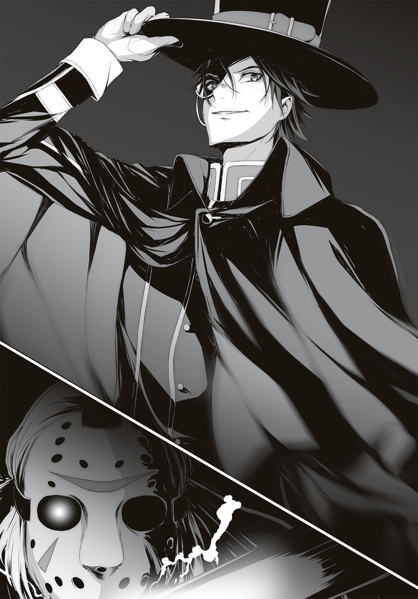
前に会った時は素手だったが、今は錆びた鉈を手にしている。切れるかどうか分からないが、おそらくすっぱり切れるよりも痛いだろう。
「刃物には刃物だな。総司、君の出番だぞ」
ルパンは連れ添って歩いていたこだまの肩に触れる。囮にリアルさを出すため、まだ総司には隠れてもらっていた。
「せ......先輩......」
しかしこだまは震えており、なかなか総司に変わらない。
「どうした？ まだケガが痛むのか？」
ルパンが顔を近づけると、
「ち、違います......そ、その、ちょっと......」
「？」
「すみません......呼吸を整えるので時間をくれませんか」
顔を真っ赤にして目を逸らすこだま。
「どうした？ 体調が悪いのか？」
「そ、そうじゃなくて、その、ずっとくっついていたから、先輩の体温と匂いが――って、ああもう、いいから少しだけ待ってください！」
「よく分からんが、今は問答している場合じゃない。私が時間を稼ごう。その間に総司を呼んでくるんだ」
顔を覆って震えているこだまを置いて、ルパンは前に出る。
ジェイソンはいきなり鉈を構えて飛びかかってきた。
「っと！」
マントを翻して避ける。闘牛士のようにジェイソンの突進をいなすと、ルパンは後ろ側に回り込んで様子を見る。ジェイソンの振るった鉈は鋼鉄製の欄干に刺さり、まるでケーキのように簡単に切り裂いた。そのまま地面に鉈を擦るようにして、再びルパンに向かって突進する。
ジェイソンの攻撃は単調だ。そして、それでも通用するほどのパワーを持っている。歩道と車道を隔てるガードレールを紙のように突き破り、それが移動を邪魔すると判断したら片手で持ち上げ、軽く放り投げる。
ガードレールが音を立てて道路に転がった。
このままでは通行する車にぶつかるだろうが、周辺に走行する車はない。それは偶然ではなく、あらかじめ別働隊が道を塞いでくれている。天才芸術家のレオナルド・ダ・ヴィンチにかかれば「工事中」の看板くらい簡単に作れるのだ。
だからルパンも広い道路の上で全力を出せる。
対するジェイソンは遮蔽物が何もない橋の上で、単調な攻撃を繰り返すのみ。ルパンの脚力ならば、避けるのは簡単だ。
が、それはあくまで敵がジェイソンひとりの話。
「ふふふ、ふふふふふふふふふ......」
暗闇から迫る声。
振り返ると、そこにもうひとりの刺客が。
森蘭丸。
「あなたが......あなたさえいなければ......」
長い髪を振り乱しているその姿は、もはや美少年とは呼べない。どこで何をしてきたのか、羽織もズタズタに引き裂かれており、山姥のようだ。ただ刀だけが水に濡れたようにギラリと光る。
「あなたが殿を......殿を..................！」
「正気を失っているな――」
蘭丸だけではない。ジェイソンも前とは違う迫力を感じる。この前はホラー映画の悪役らしく、相手を恐怖に陥れようとする余裕が見て取れた。しかし今は欲望が抑えきれずに全てを破壊しようとしている。
「悪い予感は的中したようだ。ストレスによる暴走か」
なまじ殺す事によってストレスを解消している〝ロール〟だ。現代日本で人を殺すとなると、それ自体が強烈なストレスになって気持ちを阻害する。〝ロール〟は殺人鬼でも、その肉体は普通の高校生なのだから。
おそらく、激しい葛藤に苦しんでいるはずだ。
「はあああぁぁぁぁぁぁぁぁっっ！」
蘭丸が剣を構え、そして振った。
知らない人間が見ればただの素振りにしか見えないその行為は、必殺の斬撃となってルパンを襲う。見えない軌跡が蘭丸の目の前に立ちはだかる全てを切断する。
その斬撃は蘭丸の目の前の道路を斬り、橋の欄干を斬り、そして橋を支えていた支柱を斬る。
巨大なゴンドラが動くような音。
それは橋と道路が切断されたために生じた金属のズレだ。
「うおっ！」
足下が揺れる。
二車線の道路が真っ二つに割れている。そこから橋の骨組みが露出している。ここからだとはっきりと見えないが、おそらくこの橋は時間をかけてゆっくりと崩落しているのではなかろうか。
災害クラスの地震にも耐えられる鉄橋の支柱を切断し、道路を切り裂く事ができる蘭丸の剣は、もはや個人の力で制御できるものではない。
「こだまくん！」
ルパンが呼びかけると、こだまは欄干を抱きしめるように耐えていた。彼女を守って離脱したいが、そのためには蘭丸とジェイソンをどうにかしなければ。
「蘭丸はどうにかなるが......問題はジェイソンだな」
蘭丸の一閃に巻き込まれたのだろう、ジェイソンの身体から血が流れている。それも尋常ではない。おそらく胴を斬られた。まるでポンプのように全身から吹き出す血が橋の上を染めていた。
致命傷である事は、誰が見ても明らかだった。胴を斬られたと言うより、ほぼ両断寸前だろう。体内の内臓も深く斬られている。
それなのに血が止まり、何事もなかったかのように動き出すジェイソン。
彼の能力はその〝不死身〟の肉体にある。映画では心臓だけになっても復活するほどの驚異的な生命力。さらに痛みを感じないので、どれだけ力を出しても身体が壊れる心配がない。
同士討ちを気にしなくて良いので、蘭丸と組むには最適の相棒だろう。
「さぁ、私に斬られて......斬られてくださいよ......」
「あいにくだが断る。そんな物騒なものは没収だ」
――〝幽幻盗手〟。
その手が摑むのは、蘭丸が持っていた刀。
「ああっ！ 私の刀が!?」
見えるもの全てを盗む事ができるこの能力、まだ蘭丸には知られていなかった。仮に知られていたとしても、ルパンに見られた時点で終わりだ。
「ふむ、なかなかいい刀――って、これは......！」
真剣だった。
本当に斬られたら死ぬところだった。蘭丸の肉体は女子高生だが、いったいどこからこの刀を入手したのだろうか。
「ははははっ......！ 私の刀を盗んだところで、使いこなせはしないでしょう............あなたは優れた手品師か何かだろうが、剣術はできないはずです......できたところで、ジェイソンには勝てません」
蘭丸の言う通りだ。ルパンとて剣の心得はある程度ある。しかしそれは護身術程度のサーベル捌きで、蘭丸や総司のような剣豪と比べるのは酷な話だ。
しかも相手は、あのジェイソンだ。〝不死身〟というとんでもない能力を持ち、肉体の限界を超えたパワーで迫る殺人鬼に対して、奪った剣でどこまで戦えるか。
カウンターのように発動する〝幽幻盗手〟に対して、このジェイソンのように盗むものが何一つない敵は最もやりにくい相手と言えよう。
「さぁ、どうしますか？ ジェイソンになぶり殺しにされる所を見れば、私のこの気持ちも晴れるかもしれませんね......！ 素手で人間を引き裂くのは、刀とは違った美しさを見せてくれるかも......！」
紅潮した顔で笑う蘭丸。反対側には、ホッケーマスクで表情の分からないジェイソン。どちらも殺意が滲み出ているが、まるで対照的な反応だ。
「むざむざ殺されるつもりはないさ。剣が使えないのであれば――使える人間になればいいんだよ」
ルパンは刀を構える。
腰を落とし、柄を握りしめて頭の後ろまで持って行く。真一文字に伸びる刀身の先端はジェイソンに向けられ、上を向いた切っ先が光る。
呼吸をする。身体を動かす。
自分の身体ではなく――こだまの身体だ。
こだまの〝ロール〟である沖田総司の剣術を見たのは、二回。
おそらくかなり前から必死に練習していたのだろう。真似事とはいえ、天然理心流の剣術を会得した沖田総司の〝ロール〟は芸術品と呼べる動きをしていた。
たった二回見ただけで、その姿を盗めるか。
いいや、盗める。
それがアルセーヌ・ルパンの最大の特技なのだから。
「――〝黄金影貌〟」
黒真木国俊でも、アルセーヌ・ルパンでもない、もうひとつの姿になる。
腰を落とし、ジェイソンへ渾身の突きを放つルパン。
「はぁっ！」
その一歩は風のように速く、数メートルの距離を一瞬で詰める。それはまさに沖田総司の基本歩法である〝瞬歩〟そのものだった。
「......!? ............!?」
ホッケーマスクの上からでも分かるほどに困惑するジェイソン。
狼狽える彼は慌てて攻撃に転じようとするが、驚いたせいで動きに精彩を欠いている。
さらにそこから叩き込む神速の突きは、ジェイソンの肩口を貫き、さらに太股を突き刺した。ジェイソンは素早く反撃を試みるが、すでにルパンの身体は間合いから離れている。いくらジェイソンが強くても、刀を持っているこちらの方が有利だ。
「馬鹿な......っ!?」
それを遠くで見ていた蘭丸も驚愕している。
「あなたは......あなたは、姿まで盗めると言うのですか!?」
「少し違うね。姿を借りただけさ」
強がって笑うが、呼吸が重い。ルパンの身体ではないからだ。
刀に映った自分の姿を見る。
そこには朝霧こだまと、彼女が扮する沖田総司の顔が映っている。
司馬先生に演技と呼ばれた〝新型中二病〟が持つ力で、さらにもう一度演技をする。それがアルセーヌ・ルパンという変装の達人の能力だ。
真似ているのは姿形だけではない。
むしろ見た目が問題ではなく、対象の動作をコピーするのがルパンの変装だ。
今のルパンには――沖田総司の〝技〟が使える。
それは〝新型中二病〟特有の超常能力も含めて、だ。むしろ〝ロール〟特有の技が使えなくては変装とは呼べない。
しかし、やはり変装では本家に敵わない。今のルパンの〝瞬歩〟も、沖田総司のそれに比べれば数段劣る。ただの素早い歩法に過ぎない。
が、この場を凌ぐには充分だろう。
「............ギ............リ............！」
珍しい事に、ジェイソンが喋った。
「ゴアァァァァァァァァァァァァァァッッ！」
空気が揺れるほどの叫びが、ホッケーマスクの向こうから轟く。
ルパンが攻撃したのが、よほどカンに障ったのか。いや、そうではない。ルパンが総司に変装した事で怒っているのだ。
「そうか――ジェイソンは最初から総司、いいや、こだまくんを狙っていたんだな」
蘭丸に斬られて転がったガードレールを摑むジェイソン。刀に対抗しようというのか。金属製のガードレールを軽々と持ち上げ、ゆっくりとルパンに迫る。
「行くぞ！」
こだまの声で、ルパンが叫ぶ。
そして一歩、超高速の足を踏み出す。見よう見まねの〝瞬歩〟でジェイソンの背後に回り、死角からの一撃を――
「ゴァァァァァァァァァァッ！」
突如、視界が暗くなった。
激しい衝撃が全身を一瞬のうちに駆け巡り、次に鋭い激痛が継続的に襲ってきた。
「ぐっ!?」
倒れている自分に気づき、何が起きたのかおおよそ把握できた。
ジェイソンの一撃をくらったのだ。何をどのようにしてこうなったのか分からないが、少なくともルパンの〝瞬歩〟よりジェイソンの方が速かった。それだけの話だ。
不意打ちが効かなければこんなものだ。
純粋なパワーでジェイソンに勝てる〝ロール〟はいない。
「アアァァァァァッ！」
顔を上げると、ジェイソンがガードレールを振り下ろしている所だった。
巨大な鋼鉄の塊を、刀で受け止めようとするルパン。
しかし、その前にガードレールが縦に割れた。
「............!?」
持っていた武器が壊れ、力のバランスを崩したジェイソン。
「はぁああああっ！」
身体がふらついた所に、ルパンが刀を突き入れる。
ジェイソンの太股に刀が刺さった。殺すのではなく、動きを止めるためだ。太股の筋に刀を刺されたジェイソンはその場に転び、立ち上がろうとしてまた転ぶ。刺さったままの刀が邪魔で、足に力が入らないのだ。
「......助かった。ありがとう」
ルパンは振り返り、こだまに――いや、総司に礼を言う。
「遅くなってすみません、歳三さん」
刀を鞘に収め、総司は笑った。
やはり変装はあくまで変装だ。本物の沖田総司の速さには敵わない。
「しかし総司。その刀は？」
最近の女子高生はガードレールを斬るほどの刀を簡単に手に入れられるのか。
「ダヴィンチさんに作ってもらいました」
「作り方さえ分かれば、何でも作れるのか彼は」
ダヴィンチの能力はそういうものだと聞いた。頭で理解さえしていれば材料もないところから何でも作れるし、そこから応用して改造もする。これも正規の方法で作られた日本刀ではないにしろ、本物並かそれ以上の切れ味はあるだろう。
「うぁ、ああぁぁぁぁぁ......」
倒れたままジェイソンが呻く。
彼の側には真っ二つに割れたホッケーマスクが転がっていた。総司がガードレールと一緒に斬ったのだろう。
仮面をなくしたジェイソンは、ただの高校生に戻っていた。
涙を流しながら苦しむその姿に、ルパンは見覚えがあった。確か前にこだまを責めていた水沢とかいうクラスメイトではないか。彼女に対する異常な執着心の理由が少し分かった気がした。
「大丈夫か!?」
傷は治っているのに、激しい苦痛を感じているようだ。
「あ、ぁぁ......た、助けて......」
初めて人間の言葉を喋るジェイソン。
「殺さなきゃ............殺さなきゃいけないのに............イライラが止まらなくて........................何を............しても............殺せな......」
「まずいな。ジェイソンが抱えるストレスに負けている」
振り向くと、蘭丸の方も限界のようだ。髪を搔き毟って何かをブツブツと呟いている。刀があれば振り回していただろう。
二人とも安全な場所に連れて行きたいが、橋が破壊されて鉄筋が剝き出しの状態なので救急車も呼べない。
それどころか、近いうちに崩落しそうだ。
「あああああ、僕は、僕は、ジェイソン・ボーヒーズなんだ、僕は、殺したくて、殺したくて......ああ、殺さなきゃ！ 殺さなきゃ！」
頭を抱えてのたうち回る彼。
「......っ！」
ルパンが手を前に出すと、そこにステッキが出現する。苦しむ彼の頰を、ルパンはステッキで思い切り打ち据えた。
「そうじゃないだろう、ジェイソン・ボーヒーズ！」
怒りの籠もった声で、ルパンが叫ぶ。
「〝殺さなきゃ〟じゃない！ 〝殺したい〟んじゃないのか！ 殺人鬼である君が、誰かの命令で殺しを請け負うのか!? それじゃただの殺し屋じゃないか！」
「......ぼ、僕は............殺人鬼......！」
「そうだ。君は誇り高き悪役だ。自分の意志で、大好きな殺人をする〝新型中二病〟じゃないか。誰かにその感情まで乗っ取られてもいいのか？」
「............！」
ジェイソンの目から涙がこぼれる。
「ルパンさん！」
すると橋に向かって走ってくる人影が。
志穂と修太郎だった。
「危険だ！ この橋は崩落する！」
ルパンが声を荒らげるが、それでも志穂は足を止めない。
やがて間近まで来ると、彼女は倒れているジェイソンの側に屈み込んだ。
その仕草だけで稲荷神が憑依していると分かる。彼女はジェイソンの顔に手をあてると、何かを感じたように顔を上げる。
「これは......いけません！ 悪い気が彼を繭のように囲んでいます」
「なんとかできますかな、神様」
「はい」
即答すると、稲荷神はジェイソンにあてた手を少しだけ離し、目を閉じる。
「ひふみよいむなやここのたり――ふるべゆらゆらとふるべ」
小さく唱えるその呪言は準備段階のようだ。
その呪言を皮切りに、稲荷神の手と口が淡く光っているように見える。
「あなたはあなた、わたしはわたし、このよにひとはひとり、ひとつ、みずからによきもわるきもなく、きよきもけがれもなし――あなたはあなた、わたしはわたし」
まるで何かの詩のような言葉が稲荷神の口から手を伝い、ジェイソンの身体に染みこんでいくようだ。これが神様の力なのだろうか。〝中二病〟としての力のせいか、オーラのような光が移動しているのが見えるのだ。
稲荷神の手からジェイソンに何かが移動すると、今度は逆にジェイソンの身体から何かが出ていくのが見える。どす黒い血のような霧が、彼の身体から逃げ出すように排出されて霧散していく。
「これは......〝ロール〟を〝消去〟しているのか」
狐祓いというやつだ。
人間に取り憑いている悪い気を消す技。優れた霊媒師なら可能だろうし、ましてや神様なら朝飯前だろう。
「あ............朝霧..................」
倒れたまま、ジェイソンは総司に手を伸ばす。
「僕は............お前を........................すまなかった............」
「ううん、気にしないで」
その返事をしたのがこだまなのか総司なのか、ルパンには判別がつかなかった。
しかしジェイソンは満足したのか、今まで見せた事のない安らいだ表情になる。
「あぁ......声が..................聞こえなくなった......もう......がんばらなくて......」
「声って、何？」
「駆り立てる......〝ファントム〟............朝霧......気を............けて......」
それだけを告げると、ジェイソンは意識を失った。
同時に彼を取り巻いていた黒い何かが完全に抜けていった。
「神様――」
「ええ。これで彼の中にいるものは完全に消えました。これで苦しむ事はないでしょう」
微笑むと、志穂の姿をした稲荷神は苦しむ蘭丸の方へ歩いて行く。最初は抵抗するそぶりを見せた蘭丸だが、稲荷神が何か呟くと、泣きながらその場にうずくまった。
自らの〝ロール〟に苦しむ者にとっては、それを消す事こそ最良の手段だろう。まさに唯一無二、この地を守ってきた稲荷神にしかできない能力だ。
しかし――
「ルパン」
いつの間にか、隣に修太郎が立っていた。
「お前、前に言ってたよな。確か視界をもうひとつ増やせるって」
「ああ。〝無名探偵〟の事だな」
「今、使ってるか？ ていうか使ってくれ。周りに誰も来させるな」
「言われずとも、やっている」
すでに下の河川敷も含めて、周囲百メートル以上を監視している。そろそろ連絡を受けたシュワルツェネッガーがハーレーに乗って駆けつけてくるところだ。壊れた橋はまだしばらく崩落する事はないようだ。
それ以外の監視者は、ない。
「まずいぜ、こいつは。神様の能力、誰にも言っちゃいけねぇよ」
「ああ」
修太郎が聡明で助かった。
この稲荷神の能力は隠し通すべきだ。
「彼女の力を悪用する輩は必ず現れるだろうな」
「だよな。これ、考えようによっちゃエグいぜ」
唾を飲み込む修太郎。
本人は人助けのつもりだろうが、〝ロール〟を消す能力――それは何よりも恐ろしいものだ。〝不死身〟の能力を持ったジェイソンですら消えてしまうのだから、ある意味〝殺人〟よりも上位の技ではないか。
「しかし、悲観する事はあるまい」
ルパンはマントを翻し、崩れたアーチから夜空を見上げる。
「暴走していたジェイソンと蘭丸は消えた。これで傷害事件もなくなるだろう。めでたしめでたし、ハッピーエンドだ」
「本当にそう思ってんのか？」
「まさか」
苦笑するルパン。
「これはただの前哨戦だ。事件の裏には原因がある」
目を閉じ、ルパンはジェイソンの事を想う。
「〝新型中二病〟の根源である、憧れ――その気持ちを利用する者がいるようだ」
「相当アタマに来てんなお前」
「当然だ。我々は自由な意志で〝遊ぶ〟事を至上としている。他者を気にせず、個人の趣味をさらけ出し、能力を遺憾なく発揮するのが〝新型中二病〟の楽しみだ。その唯一無二の美しさを邪魔する下衆には、相応の報いを受けてもらう」
仮に読書が好きな人間がいたとして、「今日から毎日必ず読書しろ」と強制されれば誰だって嫌だろう。
「我々を操っていいのは、我々の意志だけだ。世界で一番美しい〝それ〟を、誰にも触らせてやるものか」
遠くからバイクの音が迫ってくる。シュワルツェネッガーが来たようだ。
それ以外にも多くの仲間たちが集まっている。すでに遅いが、それでもルパンたちを助けるために駆けつけてくれた〝秘密結社〟の同志だ。
彼らの楽園を守るため、次にやるべき事は――
「ジェイソンくんが言っていた〝ファントム〟とやらを調べよう。もしかしたら操り人形の糸かもしれん」
少なくとも、この暴走が自然発生によるものではないと分かっただけでも収穫だ。
騒がしい夜は、まだまだ続きそうだった。
＊
醜いから、仮面をつけた。
いつしかその仮面こそが彼の代名詞になった。素顔を隠すための仮面が、いつしか彼を表現する最大の特徴になっていた。いつしか彼の素顔は忘れられ、その所業の方が醜くなった。
「もしもし」
ファントムは携帯電話を取る。
聞き慣れた声が助けを求めている。
彼は助けを求められれば飛んで行くような正義の味方ではない。
「それなら、君の中身をもっと解放してあげよう」
いつものように、彼は電話に囁く。
しかし――
「分かった。今、どこにいるんだい？」
電話越しに聞こえる住所を記憶して、ファントムは移動する。
仮面をつけて、夜の街をゆっくりと歩く。
静かな夜だ。誰にも邪魔されずに目的が果たせるだろう。
電話の主、ジェイソンはひどく憔悴していた。能力のおかげでケガはしていないが、自分の心の強さに自信が持てなくなっていたようだ。
彼は強い。本当に映画の悪役になったようだ。
強く演じようとする者を、ファントムは応援する。
ファントム自身は強くない。身体能力は平凡だし、推理能力があったり、無から有を生み出すような超常現象は使えない。
ただ、応援するのみ。
その声によって他者の〝ロール〟に力を与えるのだ。
ファントムはこの能力を知った時、歓喜に打ち震えた。クリスティーヌのときのような失敗を繰り返さない。もっと簡単に、確実に誰かの演技を応援する事ができる。もっと多くの人を愛する事ができるのだ。
地獄の業火に焼かれた醜い男の、本当の愛を知らしめるために、彼は歩く。
「......ここか」
指定された場所は「みけつのスポーツセンター」と書かれてある巨大施設。複数の体育館、テニスコート、プール、野球場など、総合的な運動場が揃っている。三傑野学園の運動部も試合ではここを使っているが、一般の人もサイクリングロードなどを利用しているのを見かける。
利用時間は午後九時まで。
現在は全ての施設が閉まっており、人影もない。
ファントムは気にせずフェンスを越えて施設内に入る。
監視カメラは作動しない。そういう風に細工したからだ。
それでも人目につかない道を選んで歩き、やがて目的の場所に辿り着く。
敷地の一番端にある劇場だった。
大小二つの劇場が内包されており、小さい方でもクラシックのコンサートができるほどの広さがある。劇場の前には公演情報が貼り出されており、来週行われる吹奏楽部の演奏会が載っていた。
「来たよ。私だ」
ホールの外から呼びかけるファントム。
すると灯りのない入口から何かが光った。携帯電話の灯りだろうか。
その光に誘われるように、ファントムは劇場内に入る。なぜか鍵はかかっていなかった。正面入口からまっすぐ進み、やがて小ホールの扉に触れる。
重い扉を開きながら、すでにファントムは悟っていた。
――こんな大がかりな真似、ジェイソンがするはずがない。
助けが欲しいのなら、別にどこでも良かったのだ。電話よりも直接声が聞きたいというジェイソンの言葉についほだされてしまったのは、そうであったら嬉しいというファントムの願望だった。
同時に、罠であれば、その相手を見てみたいという好奇心。
「初めまして――かな」
「こんばんは。いい夜だ」
シルクハットに片眼鏡。そしてマントを羽織っている男が舞台に座っていた。
彼と会うのは初めてだが、その出で立ちは知っている。そんな格好をしていた、と本文には一度も記載されていないのに、イメージで描かれた表紙の絵のみが有名になった男。
「アルセーヌ・ルパンだね」
「君はファントム――〝オペラ座の怪人〟のファントムだ」
名を呼ばれ、彼は仮面の下でこっそりと笑みを浮かべる。
邂逅の少し前。
黒真木国俊は、真っ暗なステージの上でじっと待っていた。
怖い。
超常能力を持った〝新型中二病〟と戦うためには、ルパンの協力が必要だ。
しかし敵の親玉であるファントムと対峙するにあたって、自分の考えを整理したかった。
なんの力も持っていない国俊は、考える事しかできない。
ジェイソンや蘭丸を操っていた人物と何を話したいのか。
操るのを止めて欲しいのか。
味方になって欲しいのか。
操り方を教えて欲しいのか――
いいや、そうじゃない。
本当は、やりたい事はまとまっている。
ただ、それを言葉にしていいものか迷っているのだ。
国俊はただの〝中二病〟患者に過ぎない。秘密結社のリーダーでもなければ、皆を扇動する力があるわけでもない。
だけど、通したいエゴがあった。
それは正義から来るものなのか、ジェイソンに同情したのか、あるいは別の理由なのか分からないままだ。言葉に出来ない怒りのようなものが渦巻いている。
『心配するな。君の言いたい事は分かる』
声が聞こえた。
照明が一切ない、暗闇の中から。
『君はまだ迷っている。「もしかしたら、これは自分のわがままなんじゃないか」という常識的な気持ちが、君を躊躇させているんだ』
「そんなの......当たり前だろ」
『だから私がいるんだ。全てシンプルにまとめてやるさ』
そうだ。
このモヤモヤした気持ちを吐き出すために、彼がいるのだ。
大きく息を吐く。
難しい事を考えるのは、国俊の役目だ。
それを行動に移すのは彼の役目なのだ。
もう、迷わない。
「頼んだよ、ルパン」
国俊はメガネを外す。
意識が遠のき、そして鮮明になる。
自分と入れ替わるように、自分が現れる。
メガネをかける前よりもクリアになった視界の中、自分が呟いた。
『任せておけ――相棒』
舞台の上で不敵に微笑みながらも、ルパンは〝無名探偵〟を使い、劇場内をくまなく捜索している。
その結果、すでに七人の〝新型中二病〟が侵入していることがわかった。いずれもルパンが知らない者ばかりで、ファントムの護衛である事は間違いない。
それでもルパンは笑みを崩さない。
「かけたまえ」
舞台上にはもうひとつ椅子が用意されていた。
「............」
スポットライトに照らされる白い椅子に、ファントムは大仰に腰掛ける。
「ジェイソンくんと蘭丸くんから話は聞かせてもらったよ」
正気に戻った彼らは、今までの行為を恥じて心からの謝罪をした。誰も彼らを責めたりはしなかった。皆、同じ〝新型中二病〟の仲間だったのだから。ただ欲望の発散の仕方がまずかっただけだ。
そんな彼らから聞き出した情報が、ファントムの存在だった。
力とそれ以上の何かを与えてあげると囁き、連絡をとっていた謎の人物。連絡先はあっさり聞き出せたが、まさかこんなに簡単に来るとはルパンも思っていなかった。
ファントム――〝オペラ座の怪人〟に登場する、文字通りの怪人だ。映画や演劇、ミュージカルで有名なタイトルだが、原典は小説だ。
オペラ座の新人歌手クリスティーヌに恋をする彼は、自らの醜さを隠すために仮面を着けて劇場地下に隠れ住んでいた。しかしクリスティーヌに成功して欲しいあまり、劇場側の人間を脅迫し、殺人を繰り返す......。
他者に恋し、成功を願う想いが強すぎて、歪んだ行動に走った〝怪人〟と呼ぶにふさわしい人物である。
「彼らが言うには、君は多くの〝中二病〟達を焚きつけて狂わせる事に喜びを見いだしていたそうだね」
「それの何が悪いのかな？」
驚いた事に、ファントムは反論もしなかった。
「私たちは狂っている。自己を抑制できず、かりそめの演者に心の痛みを肩代わりしてもらわなければ生きていけない。同時に舞台の上でなら無敵の存在になれる。それを後押ししたいだけなんだ」
「ふむ」
「もう一度問うよアルセーヌ・ルパン。それの何が悪い？」
「何も」
ルパンは答える。
「素晴らしい事じゃないか。立派だよ」
心からの拍手を、ルパンはファントムに送った。
我々〝ロール〟たちは抑圧された感情から生み出された存在だ。その心を解き放ってくれる者がいる。
それは言うならば、美味しい料理をさらに美味しくしてくれる魅惑のスパイスのようなもの。
「しかし疑問もある。大きな騒ぎを起こす事によってマスコミなどの外部の人間が嗅ぎつけたらどうするつもりだ。〝新型中二病〟の存在を公にする事はあってはならない」
「それも同感だよ」
ファントムはルパンの言葉に深く頷く。
「この街は我々の楽園だ。自己を解放できる遊び場だ。誰にも笑われない〝ごっこ遊び〟だからこそ、皆が本気になれる。それを白日の下に晒すつもりはないよ。派手な騒ぎは私の望むところではない」
「その通りだ。君の考えに全面的に同意するよ」
「......まいったな。てっきり君は反対するのかと思っていたが」
「何を言っている。私も君と同じ考えだよ」
ルパンは笑う。
「全ては〝遊び〟だ。ストレスによって抑圧された我々には、この三傑野市という遊び場が必要なんだ。理性や理屈を取り払って好きな事ができる。それを手伝ってくれる友もいる。理解者は多ければ多いほどいい」
「その結果、犯罪が起きても？」
「無論だ」
ルパンの考えは微塵も揺らがない。
「誰かが傷つこうが、人が死のうが、私にとっては些細な事なのだよ」
「......君は............！」
ファントムの声が詰まった。
紛れもないルパンの本音だ。
問題はそこではない。ファントムもそれは理解しているはずだ。
「ならばアルセーヌ・ルパン。君も解放してあげよう。抑えつけていた自己を。魂を羽ばたかせる時が来たんだ」
ファントムの目が輝く。同時に耳の中に彼の声が響く。まるで声が固形物になって耳の穴からスルスルと入ってくるようだ。
――なるほど、これがファントムの能力。
おそらく洗脳に近いものだろう。催眠術のような方法で潜在能力を高め、同時に欲望の解放も行う。それをファントムは〝応援〟と呼んでいるのだ。
だがルパンの耳にはそれ以上の効果はない。
「ほう、効かぬか」
ファントムもそれほど驚いていないようだ。
「残念だが響かないね。私にとって、必要ではないものだ」
ルパンは息を吐く。
言葉にできなかった気持ちを、ようやく理解できたからだ。
「何故だ？ 君は私の行動に賛同するのではないのかい？」
「賛同するとも。素晴らしいよ。〝新型中二病〟のための楽園計画。もしも私が私でなければ、今すぐにでも参加していただろう」
「ならば、どうして？」
「答えはひとつだ」
ルパンはファントムの仮面を指さし、こう返答した。
「君は醜い」
ギリ、と革が擦れる音がした。
マントの下でファントムが手袋を握りしめたのだろう。
仮面の奥にある目に憎悪の火が宿るのを、ルパンは感じた。
「生徒たちの心を解き放ち、〝中二病〟として遊ばせるのは非常に良い事だ。だがそれなら暗躍する必要はない。我々のように堂々と仲間を集めて、限定された空間で楽しくやればいい話だ」
少なくともルパンは――いや、国俊はそう考えている。
それに賛同する仲間もいた。
「だが君はこそこそとドブネズミのように這い回り、日陰に籠もったまま姿を現さない。裏でなにかやましい事を企んでいるからだ。そうだろう？」
おそらくファントムの話は半分が噓だ。
それを隠すためのおためごかしを聞かされる時間など、無駄にしかならない。
「本当にその行為を美しく貴いと思うのならば、私に明かしてみるがいい。できないのであれば、君はそこまでの人間だ」
吐き捨てるように、ルパンは呟く。
「............」
ファントムは喋らない。
いや、喋る事ができないのだ。ルパンの言葉が図星なのだから。
「そうなると、君がやっている事は、ただ他者を陥れ、自らの手駒として使っているだけの為政者と変わらない。だから私は君に魅力を感じない」
震えるファントムを下から覗き込むようにして、ルパンはたたみかける。
「故に、君は美しくない。悪の美学すら感じない。自らの行動を正当化できない臆病者に過ぎない。だから理想を人におしつけたがる」
はじめから〝新型中二病〟は自分の憧れが具現化したもの。それは誰に強制されたものでもなく、自分自身が好きだから生まれたものだ。
だが、いくら好きだからと言って、誰かにムリヤリ押しつけられていいものではない。好物とて強引に食べさせられれば吐き気がするだろう。
なのにそれを〝自由〟と称するファントムの言葉は、詭弁にもほどがある。
言葉にも美しさがある。
美麗に着飾っていても、内面の醜さは露呈するものだ。
「正義の味方を気取るつもりはない。誰かのため、と言う気もない。私は君を、君のやり方を美しくないと思う。だから排除する」
ルパンはステッキに手を触れる。すると隠していた鞘が外れ、中からサーベルが姿を現した。ダヴィンチに作らせた特注の武器だ。
「......それは脚光を浴びる事のできる者が言える台詞だ」
ファントムは立ち上がる。
「君に私の気持ちなど分かるまい」
「分かる必要はないよ。君の主義など知らない。大切なのは私の『美学』のみだ」
「まぁ、それもいいだろう」
ファントムは右手を挙げる。
それを合図にホールの扉が開き、十人以上の〝中二病〟が入ってきた。どれも地味だが物々しい衣装で武装しており、ほぼ全員が何らかの武器を持っている。兜や仮面を着けているため、ほとんど顔が分からない者ばかり。
「ならばルパンよ。私も君の流儀で応えよう」
「構わんよ。暴力の方が、よっぽど健全だ」
サーベルを構え、ルパンは笑う。
どんな時でも笑顔を忘れないのが、ルパンの美徳だ。
その声に導かれるように、舞台袖から〝秘密結社〟の仲間が姿を現す。戦闘ができる者を全てかき集めたのだ。その数は十八人。敵の二倍はいるが、どちらもどのように戦うのか知らないため、本当の戦力差は不明だ。
ただひとつ共通しているのは、全員とても楽しそうな表情をしている事。
これから始まる戦いは、観客のいない舞台を最高まで盛り上げてくれるだろう。
そこに楽しみを見いだせるから、〝中二病〟と呼ばれるのだ。
「さぁ始めようか、最高のステージを！」
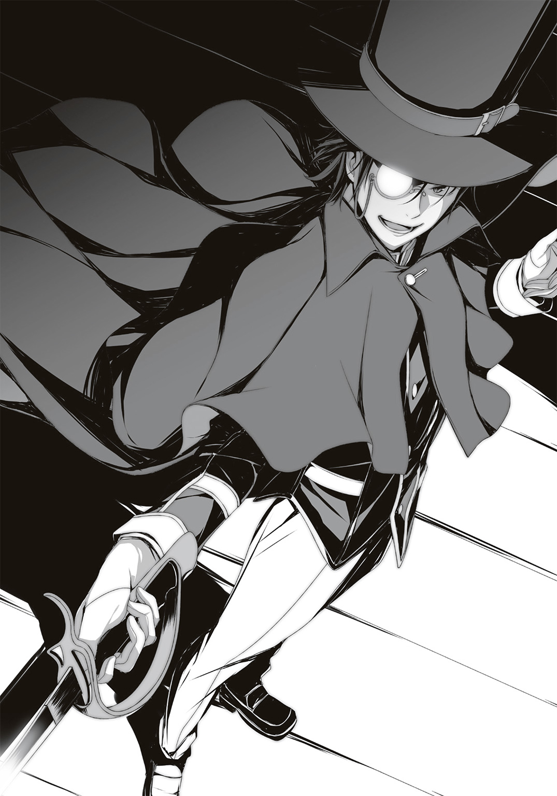
４ 青銅の魔人
朝霧こだまが沖田総司の〝ロール〟を発動する時、不思議な感覚に陥る。自分が朝霧こだまだという自覚を持ちながら、同時に沖田総司であると認識している。そこに気持ちの矛盾はなく、「現代に転生した自分」という感覚になる。
夜のホールで行う集団戦は、まるで池田屋のようだった。共に戦う仲間がいて、平和を乱す不逞な輩がいる。そんな時、まず最初に切り込むのが総司の役目だった。
「行きますっ！」
ステージから飛び出した総司は〝瞬歩〟で相手に斬りかかる。狙うはもちろん敵の首魁だ。ファントムと名乗る仮面の男を斬る。それで全てが終わる。
もはやこの時の総司は、人を斬る事に対してなんの躊躇もしていなかった。
彼女の技量ならば殺さずに動きを封じる技術を持っているし、仮に致命傷を与えてしまったとしても、〝ロール〟の中には医者よりも優れた癒し手がいる。加えて〝新型中二病〟の連中は全員タフなので、殺すつもりで斬りかかってようやく攻撃と呼べるのだ。
「はっ！」
総司の足がステージを蹴ると、一瞬でファントムの眼前に出現する。
すでに抜刀しており、そのスピードに乗せた一撃で彼を袈裟懸けに斬れば終わるはずだった。
「っ!?」
が、ファントムもそれを予期していたのだろう。
彼の身体が幻影のようにゆらりと動くと、その奥からゾッとするような殺気を感じた。
その殺気をなぞるように、総司は剣を振る。
何かに当たった。それは客席から総司を狙って放った矢だ。その矢を切り落としているスキに、ファントムは素早く移動している。
周囲を見ると、すでに乱戦になっていた。
〝新型中二病〟の戦士たちがホールで殴り合い、斬り合っている。その喧噪の中に消えたファントムを追うべきか迷ったが、
「あれは私がやる」
ステージの上に佇んでいたルパンがそう言った。彼の目にはファントムがどこへ逃げたか分かるようだ。
「歳三さん、気をつけて」
「ああ、君もな」
黒真木国俊とルパンも、同じ存在だった。総司――いや、朝霧こだまはその二人が別の人格だとは思っていない。
昔から黒真木国俊には自分と共通するものを感じていた。
彼の瞳の奥にある暗いものを引き出すため、気弱な先輩の仮面を剝がそうと冷たい態度を取る事もあった。しかし国俊の弱々しい笑顔も、ルパンの強気な微笑も、どちらも彼の持ち味だと最近になって気づいた。
こだまと総司も同じ関係だ。本音を隠す弱い自分も、真っ先に飛び出す沖田総司も、同じ自分自身なのだ。
朝霧こだまとして、沖田総司として、大切な人を守りたい。
その気持ちが一致した時、本当の強さになるのだ。
「歳三さんはやらせませんよ」
総司は刀を前方に向ける。
暗い客席の闇に隠れるように、ひとりの射手がいた。
現代のクロスボウを持ち、弦を強く引いて新しい矢を番え終わったところだ。
こだまは射手に見覚えがあった。
文化部の海外文化研究部。別名「旅行部」の一員。実際には旅行に行かず、パンフレットや旅行雑誌を見ては想いを馳せる部活だ。彼はその部員のひとりだったはず。
「悪く思うな」
まだ高校二年生のはずなのに、彼はこう呟く。
「息子と祖国のためだ」
その言葉で総司は彼を理解した。
スイスの英雄叙事詩に登場する伝説の弓手、ウィリアム・テル――
＊
〝新型中二病〟の戦いは劇場だけで行われているのではない。
スポーツセンターから少しだけ離れた場所にあるカラオケの一室に、数人の男女が集まっていた。
「ああもう！ 画面がブレる！ おいちゃんと飛ばせてんのか!?」
意味もなくタブレットの画面を叩く修太郎。そこにはホールの中の戦いが映し出されているのだが、カメラが上下に激しく動いているので何が起きているのか判別できていない。ただ、何人もの人間が戦っているのはかろうじて分かる。
「仕方ないよ、絶えず動いてないと彼らも危険だ」
そう語るのは〝秘密結社〟の一員であるファーブル。彼の友人である虫たちに超小型カメラを取り付けて操っているのだ。彼曰く「虫と心を通わせれば簡単にできる」そうだが、修太郎も深く考えないで利用させてもらう事にした。
ひとつのタブレットに数人が集まって見ているので、狭苦しい。その中央にいる修太郎はあちこちから押されて潰されそうになっている。
「市ノ瀬、この敵の顔、全員覚えとけよ」
「それを見越して、ほとんど顔隠してるけどね。見える範囲では記録しとくよ」
修太郎と市ノ瀬は〝中二病〟ではないが、気がつけば彼らの監督役になっている。市ノ瀬が情報を集め、修太郎が連絡を取るという形に落ち着いていた。そのため、今も修太郎は別のスマホで何人かに指示を出している。ホールの外に待機している予備隊に、周囲の様子を探ってもらうのも忘れない。
「うわ、血が出てるよコレ。死んでるの？」
タブレットを覗き込んで口元を押さえる志穂。
「――死んでない。見ろ、立ち上がってる」
その隣のダヴィンチが冷静に解説している。
電子機器の操作を頼んでいるダヴィンチはともかく、市ノ瀬や他の人間もどうして志穂がここにいるのか疑問に思っているだろう。
修太郎と同じ関係者、という事にしてあるが、本当は違う。
ジェイソンのように地獄の苦しみから逃れられない〝ロール〟が現れた時、現場に駆けつけて殺してもらうためだ。
それを知っているのは、修太郎だけ。
できれば、この能力を使わずに終わって欲しいと願うばかりだ。
「っていうかさー。これ本物の武器だよね？ 刀とかは模造刀とかって言い訳できるけど、あの弓とか本物じゃん！ 当たったら死ぬよね？」
志穂が見ているのは、クロスボウを持った男。
彼女の言うとおり、どんなに優れた能力があっても、心臓に矢が刺されば死ぬ。例外があるとすればジェイソンのような能力のみ。
それと対峙しているのは――
「朝霧......！」
剣のみに生きた沖田総司を身に宿した、か弱い少女。
＊
これでいい。
ウィリアム・テルを前にして、総司は思う。
あれは狙撃手だ。他の人間が戦っている間に、遠方から撃つのが仕事。しかしこうして一対一で戦えば、仲間が撃たれる事はない。
最悪、自分が撃たれれば済む。
もちろん撃たせるつもりなどない。
ふと、総司は自分の身体の変化に気づく。胸のあたり――心臓の位置に何かがくっつている。
レーザーサイトではないが、光でできた模様だ。
リンゴの形をしている。
「っ！」
直感で動いた。
心臓をかばうように剣を振ると、その軌跡に矢が弾かれた。あと一瞬でも遅れていたら矢はリンゴのマーキング通り、心臓に刺さっていただろう。
「そうか、このリンゴは的なのか。そういう能力なんだな」
しかし的に向かって矢が飛んでいく仕様なのだとしたら、好都合だ。そこだけをかばえばいいのだから。
そう考えていたのだが、
「えっ？」
リンゴの的が増えていた。
心臓以外にも、肩、右手、左手首、膝、腹――
複数のリンゴが見えている。おそらく顔にもあるのだろう。この状況でウィリアム・テルがどう撃ってくるのか分からない。複数の矢を撃つのか、それともどれかひとつを狙っているのか。試すわけにもいかない。
「動くな」
低い制止の声。
「身体のどこかでも動かせば、撃つ。俺の矢はお前の身体のリンゴを全て撃ち抜く。絶対に外さない」
「............」
口すらも動かせない総司。
おそらくまばたき以外の全ての動作に反応して、彼は撃つだろう。声に含まれる意思がそう感じさせる。
「お前は強い。だから動きを止める。それが射手としての仕事だ」
理にかなっている。冷静なスナイパーほど厄介な敵はいない。
総司は息を吐きながら、ウィリアム・テルとの位置を確認する。およそ十メートルの距離だが、彼と総司の間には劇場の座席がある。
〝瞬歩〟で座席を蹴り、彼を斬れば解決だ。
しかし剣と引き金、どちらが早いか――
ここで睨み合いをしている時間はない。
ルパンはすでにどこかへ去っている。彼はきっと自力でなんとかするだろうが、他にも戦っている〝秘密結社〟の仲間はいる。彼らの加勢に行きたい。
しかしウィリアム・テルのリンゴの的は、おそらく必中だ。目くらましや幻影などを使っても正確に的を撃ち抜くはずだ。
どうすればいいか考える――
そんな時間はない。
新撰組がそんな事を考えるはずがない。敵を見ればどんな時でも先陣を走り、誰よりも速く敵へ駆けつけ、殺されるよりも先に殺す。それが新撰組一番隊隊長の仕事だ。
そう心を決めたら、すっきりした。
総司は足を動かす。
――何よりも速く。
「動いたな」
ウィリアム・テルが引き金を引く。
番えていた矢は一本だけだが、クロスボウから九本の矢が同時に撃ち出された。それも彼の能力のひとつなのだろう。
人間の肉眼では捉えるのがやっとの矢が、暗い劇場の座席の向こうから迫る。
「――〝霞三段桜〟！」
総司の腕が動く。
剣が軌跡を描く。
袈裟斬り、横払い、突き。
その三つの動作を同時に行う。その素早さが残像を生み、まるで総司が三人いるように見える。
「三つの残像など――何っ!?」
その三人の残像が、さらに三つに分かれた。
合計で九人の総司が同時に矢をはじき飛ばす。
この残像は、〝気迫の塊〟だと考えている。
沖田総司が使う天然理心流は剣のみを教えていたわけではない。槍、柔術など実践を想定した武道であり、その中には〝気合術〟というものもある。
武器のみならず、気迫で相手を斬る。威圧する。相手を呑み込む。
その戦い方の究極系が、これだ。
三人分の気迫が、さらに三段突きを行う。その結果、合計で九つの剣が生まれたのだ。
「はぁぁあああああああああっ！」
残像はそのまま消えずに、全員がウィリアム・テルに向かって走る。
優れた射手といえども、同時に九人の残像に迫られたら対処しきれないはず。
「まだだ！ 九つの的を全て射貫いてみせよう！」
時間にして一秒もない。だがウィリアム・テルのクロスボウにはすでに次弾が装塡されている。
残像が生まれるほど速く動く総司の進路を予測し、彼女が命を取りに剣を伸ばす瞬間を狙って、正確に眉間を撃ち抜く位置で矢を射出する。
「取った！」
ウィリアム・テルが笑う。
撃ち出された矢は総司の額の中央めがけて飛んだ。
が、その矢が彼女の額に届く寸前、上段から振り下ろされた刀が矢を真っ二つに割ったのだ。
「取りました」
ほぼゼロ距離から放たれた矢をたたき割った総司は、そのまま剣を振り下ろした。ウィリアム・テルの顔と胴とクロスボウが斬り裂かれる。
「......なんて............速さ......だ......！」
痛みよりも驚きが勝る顔。
「全ての矢を......斬るとは............お前に......斬れない............もの......は............」
「ボクは何でも斬りますよ。恩人でさえもね。斬れないのは黒猫くらいです」
「............ふ............まるで............風のような侍............だな」
縦一文字に斬られた傷口から鮮血を吹き出し、狩人は倒れた。〝新型中二病〟特有の頑丈さがあれば、死にはしないだろう。
「――はぁっ！」
総司は大きく息を吐く。
意識の外に追いやっていた緊張と恐怖と、そのギリギリの死生観を楽しんでいた快感を全て一度吐き出した。
死に直結した戦いを楽しむのは、それが終わった後でいい。
この戦いで、また誰かを守れた。
それが一番嬉しい事を、総司は忘れていない。
次の敵を求めて視線を動かす。
その時だった。
気配に振り返ると、倒したはずのウィリアム・テルが壊れたクロスボウを持ち上げて、こちらに向けている。まさか彼は壊れた武器でも撃つ事ができるのか。
判断した時には、もう遅い。
ウィリアム・テルの指が――
「ゴァアアアアアアアアアッ！」
突如、横から黒い大きな塊のようなものが突っ込んできた。
それは倒れていたウィリアム・テルの身体を踏み潰し、そのまま走り去っていく。かと思いきや、数歩走った先で何かを踏んだ事に気づいたようだ。ゆっくりと後ろを見る。
総司と目が合った。
そいつは両腕をダラリと下げ、興奮した笑顔を見せている。
動きのひとつひとつに垣間見える力強さと、王者のような風格は、どこを切りとってもゴリラそのものだった。
「君は......！」
彼は首から大きな札を提げていた。
そこには「わたしは味方です」と書かれてある。きっと〝ロール〟が発現する前に自分で書いたのだろう。
「ありがとう、ゴリラくん」
総司が笑うと、ゴリラ男も嬉しそうにニッカリと笑って走っていった。
初めて会った時は敵だったが、その時はおそらく自我をもてあましていたのだろう。自分が自由に生きられる道、そしてそれを理解してくれる仲間の存在は大きい。
走り去るゴリラ男の背中が妙に頼もしくて、総司はもう一度笑ってしまった。
「さて、お次は誰かな――」
改めて敵を探す総司。
その時、けたたましい音が劇場内に鳴り響いた。
火災報知器の音だ。
＊
逃げるファントムを追い続けたルパンが最終的に行き着いたのは、舞台の真上にある三階の廊下。音響や照明を調節するオペレーションルームや、機材置き場が並ぶ裏方のためのフロア。
火災報知器の音と共に、一部でスプリンクラーが作動した音がする。
「やれやれ――劇場を壊すとは」
「仕方ないさ。これだけの〝中二病〟が暴れているんだ」
剣を撃ちながら、ルパンとファントムは語る。
鋭い斬撃はルパンとしての力だ。本来ならば誰かの〝ロール〟を真似て一気に決めてしまいたいところだが、ファントムの不思議な動きに翻弄され続けている。
「このままだと二人とも火事に巻き込まれる。逃がしてはくれないか？」
ファントムが笑う。
中には炎や爆発などを操る〝ロール〟もいるだろう。彼らが本気を出せばこんな劇場など砂の城も同然だ。完全に崩れるのは時間の問題だろう。
すでに小刻みに地響きのようなものを感じる。誰かが壁を破壊しているようだ。下からは爆発音に似たものも聞こえる。
「君も無闇に殺人はしたくないだろう」
「ふん」
ルパンも苦笑する。
ファントムは剣の達人ではない。しかしルパンの剣にやられるほど弱くはない。ルパンの仕込み杖をのらりくらりと避けつつ、自分のナイフで刺してくる。その動きは素人に近いのだが、なぜか避けにくい位置を的確に突いてくるのだ。
「劇場を破壊するのは君の専売特許だろう、ファントム」
ルパンの刺突を大きくバックステップで逃げると、ファントムはナイフをくるくると回しながら不敵に笑う。
「ふふふ......それも私の〝応援〟の結果だよ。クリスティーヌの素晴らしさを理解できない輩さえいなければ、あんな悲劇は起きなかった」
劇場を燃やした怪人は、崩れそうな劇場の裏方で何を想うのか。
彼の気持ちも汲み取ってやりたいが――
「そろそろ茶番にも飽きたな」
ルパンは仕込み杖の刃を鞘に戻す。カチリと音がすると、また杖の形状に戻った。それを床につくと、大きくため息を吐く。
「いい加減、本当の名前を教えてくれないか？」
「何の話だ？」
「君、ファントムじゃないだろう」
「............」
ファントムは少しだけ沈黙すると、
「――何故、分かった？」
あっさりと認めた。
探偵の推理に対する礼儀のようなものだ。悪役はそういう事に対して噓はつかない。
「半分は匂いだ。君の動きはどこかファントムらしくない――と言うより、誰かがもの凄く精緻な演技をしているように感じるんだ。私も同類だからね」
「残りの半分は？」
「単純な話だよ。あんなにたくさんの〝ロール〟を従えている人間が、わざわざ無策で敵の罠に正面から突っ込むわけがない。ファントムが戦闘に向かない〝ロール〟であればなおさらだ」
ファントムは原作でも隠れて何かを成し遂げるタイプの犯罪者だ。それが堂々と劇場に姿を現すとは考えにくい。むしろ自分のテリトリーに誘い込むのを得意とする〝ロール〟なのだ。
「見事な変装だが、そろそろ正体を現してくれてもいいだろう」
「ふふ――」
「それとも、私の推理は外れかな？ 君は本物のファントムか？」
「いいや。ファントムは私の同志だ。まさに君の推理通り、ここで彼を失うわけにはいかないのでね」
ファントムだった男は、仮面を外す。
非常灯だけの暗闇の中、その男の顔は暗くてよく見えない。精悍な顔立ちではあるが、学園で見たことがない。
「それが君の本当の顔か」
「どうかな」
彼は笑う。
「何しろ、自分の本当の顔すら忘れてしまったからね――」
そのセリフには聞き覚えがあった。
「一応、名を聞いておこうか」
「さてね。遠藤平吉とでも名乗っておくかな」
疑念が確信に変わる。
ルパンと同じ名乗り――
その名前は日本を震撼させた怪盗の名ではないか。
時代は違えど、ルパンのように多くの部下を引き連れ、全国の美術品や宝石をその手に収めてきた凶悪犯罪者。
その顔はひとつではなく、顔の数だけ手口がある。
「そうか、そうだったか――同じ怪盗として、仲間に初めて出会った」
ルパンの顔が綻ぶ。
「怪盗？ 違うね」
彼は指を振って否定する。
「――怪人だよ」
暗い視界の中で、何かが光った。
身の危険を感じたルパンが杖でそれを払うと、杖がひっぱられた。廊下の壁から見えない手が伸びたかのように、杖を奪い取られる。
ワイヤーだ。細いワイヤーが杖をもぎとったのだ。
ルパンは思い出す。確かあの怪人は細い糸の上を歩くトリックをやってみせたはず。糸の扱いには長けているのだ。
「〝幽幻盗手〟！」
手を伸ばし、空中に貼り付けられた杖を盗む。
すかさず鞘を抜き、張り巡らされたワイヤーを切断。そのまま怪人に向かって斬りかかろうとするが、
「ふっ――」
怪人の手には古めかしいピストルが握られている。
「〝幽幻盗手〟！」
さらにルパンは左手を伸ばし、その手からピストルを奪った。
が、手の中にピストルが出現した時に思い出した。
――奴は殺人はしない。
時すでに遅し。ルパンが弾の入っていないピストルを投げ捨てようと振りかぶると、そのピストル本体が強烈な光を放った。
「うっ！」
強い閃光に目を背ける。
まさか彼は、それを見越してわざとピストルを取り出したのか。ルパンに奪われる事まで想定して。
「ふふふ、甘いぞルパン」
死の音が迫る。
わずかなミスによってこじ開けられたガードを越え、怪人の刃がスルリと抜けてくる。ルパンのがら空きになった胴に、彼の強烈な一撃が――
入る寸前、床が揺れた。
「なっ!?」
ルパンの身体も揺れる。それによって体勢を崩し、転びかけた。
だがそのおかげで怪人の攻撃を避ける事ができた。その頃にはようやく目が慣れてきたが、どうやら鈍器のようなものでルパンの鳩尾を叩くつもりだったらしい。
ハンマーのような武器を持つ怪人も、その重みと振動によってバランスを崩す。お互い立っていられないほどの揺れだ。
ルパンは鼻を鳴らす。
焦げた臭い。
「火が迫っているようだな」
怪人も気づいた。
ボヤで収束するかと思ったが、予想以上に危険な状態だったようだ。
遠くからサイレンの音が聞こえてきた。
あらかた敵の〝ロール〟は倒したが、そのまま劇場に放置するわけにもいかず、巨体自慢の〝ロール〟が揃ってケガ人を担ぎ出した。
総司は無傷だが体力の消耗が激しいので、運搬は他の者に任せて劇場を飛び出す。
先ほどまで戦っていた〝秘密結社〟の仲間も、ファントムの部下だった者も、火事が起きてサイレンが鳴った瞬間に戦いをやめて離脱した。
誰よりも〝新型中二病〟は人目に付くのを嫌う。
だから総司も仲間の安否より、まず自分の安全を最優先にした。劇場を離れ、スポーツセンターにある体育館の裏手の茂みに隠れ、素早く新撰組の羽織と刀をしまう。
「沖田。ケガはないか」
総司と一緒に逃げてきた映研部部長のシュワルツェネッガー。彼は傷ついた仲間を二人、両肩に担いだまま、ここまで走り続けていたようだ。
仲間を地面に降ろすと、彼は周囲を確認する。暗闇でも彼の目は暗視ゴーグルのように正確に見えるらしい。
「大丈夫です、えーと......メイトリックス大佐」
「今はシェイファー少佐だ。俺はレスキュー部隊であって、殺しのプロじゃない」
「なるほどね」
頷いてはみたが、正直、総司の知識では何が違うのか良く分からない。彼が言いたいのは、つまり人助けメインのモードになっているという事だ。
「しかし残念だが、他の者は助けられない」
「逃げてますよ、きっと」
今はそう信じるしかない。
視界が徐々に明るくなってきた。夜が明けているのではない。劇場に回った火が勢いを増しているのだ。
消防だけでなく、警備会社などにも連絡が行っているはずだ。五分もしないうちに駆けつけてくるだろう。
ルパンは――国俊は無事だろうか。
「先輩......」
気がつけば、総司がどこかへ行っていた。髪を結んでいたリボンが解け、背中に黒髪と疲労がのしかかってくる。
「無事でしょうか......」
総司ではなく、こだまの声が呟く。
「心配するな」
シュワルツェネッガーが太い腕で肩を叩く。
「ああいう手合いは、燃える屋敷の中に消えていったとしても、次回作であっさり蘇ったりするものだ」
「......そうですね」
今は、ただ待つしかない。
残された時間は少ない。
消防車が到着するまで、あと三分もないだろう。
それまでに目的を達成しなければ。
「ふふふふ――」
劇場の屋上に上った怪人を追いかけ、ルパンも走る。煙が立ちこめる階段を上りきると、薄暗い夜空が見えた。
霞む月を背にして、怪人が空を飛んでいる。
虫の羽音のような音は、怪人が背負っている大がかりなプロペラ機械から発せられるものだ。あの古めかしいプロペラが怪人を飛び立たせようとしている。
ああいった機械装置こそ、彼の犯行の手口。
帝都を震撼させた怪人――その名は〝二十面相〟。
江戸川乱歩が書き上げた傑作「少年探偵」シリーズにおいて幾度となく登場し、子供と大人を手玉に取った大悪党。
悪党とは言いつつも、彼は作中で人間を殺す真似はしなかった。だからこそルパンでもしのげるほどのナイフ捌きだったわけだ。
「いや、素晴らしい！ 見事な〝ロール〟だ！」
追いかけながら、ルパンは笑う。
見習いたいほどの怪盗っぷりだ。紳士然とした態度、不思議なからくりの数々、そして手癖の悪さ――どれをいっても一級品だ。
「ああ、いい......！ なんて美しい......！」
ルパンはルパンと同じくらい、二十面相にも憧れていた。
美しい芸術品が好きで、他者を殺さず、己の〝美学〟に従って生きる悪の男。まさにアルセーヌ・ルパンが持っている哲学と同じ、真の意味での同志だった。
「だからこそ惜しい！ 君のように優れた者がファントムの下で働いているなんて！」
「お褒めにあずかり光栄だ。私も君と戦うのは惜しい」
「なぁ怪人よ。今からでも遅くない。仲間にならないか？ あんな男に味方する必要などないだろう」
「逆に問うが、君がこちらに来ればいいのではないか？」
「ああ、まったくだ。ファントムという男さえいなければ、私は全面協力していたかもしれない。少なくともあの男の表面的な主張は共感できるものだったからね」
しかしファントムの主張には噓がある。
ストレスに苦しむ生徒の背中を後押しするという目的は良いが、その後どうするのか語っていないからだ。
「彼を悪く言うのはやめてくれ」
プロペラの音と共に、怪人が低く唸る。
「私にとっては恩人だ」
「......なるほど」
ルパンも納得する。
「自らの美学ではなく、義によって動く、か。それがたとえ間違っていたとしても」
「自由の名の下には、〝間違い〟など存在しないのだよ――」
怪人が高度を上げようと、プロペラを激しく回転させた。
「〝幽幻盗手〟！」
ルパンの手が、怪人の背中の機械を摑み取る。
回転するプロペラが制御を失い、一瞬でルパンの手から離れてどこかへ飛んでいく。同時に怪人は機械を失って落下した。
そのまま屋上に落ちるかと思いきや、空中を踏んだ。
「ここは煙が届く。二人とも死ぬわけにはいかないぞ」
笑いながら怪人は空を歩く。
続いて、ルパンも跳躍し、怪人の足場を踏んだ。
いつ張られたのだろう、空中に蜘蛛の巣のようにワイヤーが伸びていた。わずか数ミリの鉄の糸を足場にして、ルパンも怪人も空を走る。
見えない足場を駆け続け、燃えさかる劇場から離れる二人。
高さにして五メートルはある空中を、まるで踊るように走っている。
「待て！」
ルパンは手を伸ばし、怪人の服を摑もうとする。
が、ルパンの能力に合わせて、怪人が身を翻す。
「待たぬよ！」
振り返った二十面相の手には、ナイフが。
細い綱渡りのような足場でいきなり斬りつけられたルパン、左右に避ける事もできずに、仕込み杖で精一杯の抵抗を見せる。しかしナイフは杖を逸れ、ルパンの脇腹をかすめる。
「くっ！」
もしも二十面相が殺人に長けた〝ロール〟であれば、ここでルパンの命は終わっていた。脇腹で済んだのは奇跡的な幸運だ。怪盗は幸運すら味方につけるものだ。
しかし窮地に陥った事には変わりない。
今のルパンは脇腹を押さえ、おぼつかない足場に立つのがやっとだ。
「さらばだ、アルセーヌ・ルパン！」
こちらを向いたまま、二十面相は後ろ向きに糸の上を走る。ルパンが追ってこないのを確認すると、また背中を見せて逃げ出した。
「待......て！」
ルパンは周囲を確認した。
痛む脇腹から手を離し、血を周囲に撒く。すると血液の一部がどこかにひっかかった。数十センチ先にもワイヤーが張られているのだ。二十面相が逃走のために用意したワイヤーは一本ではないのだ。
それを使い、奴を追うにはどうするか。
――ルパンでは、無理だ。
二十面相と同じ怪盗の〝ロール〟は、逃げるのは得意でも追うのは苦手だ。
ならば、手はひとつ。
「――〝黄金影貌〟」
仕込み杖を構えたまま、沖田総司に変装する。
変装した瞬間、脇腹の痛みは消えた。今の彼は沖田総司であって、脇腹に傷を負ったアルセーヌ・ルパンではないからだ。
ゆっくりと腰を落とし、目の前から遠ざかっていく二十面相を捉える。
足を踏み出した。
見えない速さの〝瞬歩〟より数段劣るが、それでも一瞬で距離を詰めるには充分すぎるほどの速さ。
仕込み杖を鞘から外し、刃を突き出して二十面相の背中を狙う。
「馬鹿め！ 想定していないと思ったか!?」
二十面相が振り返る。
彼の手には警棒型のスタンガンが握られていた。振り向きざまにそれを打ち込んで、こちらの仕込み杖に当てようとするが――
「〝三段突き〟！」
沖田総司の姿が三人に分裂した。
まったく同時に行う三度の突き。それにより三人分の気迫が三人の実体を作る技。
が――
「〝黄金影貌〟！」
さらにルパンは変装を重ねた。
分裂した沖田総司の姿が変わる。
正面から突きだしたはずの沖田総司の剣は、いつしか強力な拳に変わっていた。
「うおおおおおおおおっ！」
それは鋼鉄の肉体を持つ男の手。
映画研究部部長――シュワルツェネッガーの拳だ。
彼が演じた「ターミネーター」に出演した暗殺用兵器〝Ｔ８００〟の骨は鋼鉄製だ。スタンガン程度の電撃など、痛くも痒くもない。
その拳で二十面相の警棒をはじき飛ばすが、その向こうにいる彼には届かない。
しかし右側に張られた別のワイヤーには、もうひとりの分身がいる。
レオナルド・ダ・ヴィンチだ。
彼が持っている連発銃――マシンガンの原型になったものが発射される。
新聞部の部室で盗んでからも大事に隠していたやつだ。銃身も弾丸もダヴィンチが能力で作り出した特別製だ。非致死性の特殊な弾丸が二十発同時に発射され、二十面相に雨霰の如く打ち付ける。
「そんな!? 分身しながら変装だとっ!?」
そして最後に、二十面相の真上から沖田総司の剣が振り下ろされた。
ダヴィンチが作り上げた仕込み杖の刃は、二十面相が持っていた警棒ごと彼の肩口を斬り裂いた。
「ぐおおおぉぉぉぉぉぉっ！」
二十面相の肩から血が流れ出す。
派手に飛び散るのではなく、水の袋を破いたようにゆっくりと血が落ちていく。
わざと浅く斬った。
それでも刀身を通して嫌な感触が伝わってくる。
その感触が気持ち悪かったので、ルパンは仕込み杖から手を離す。血の付いた刃が夜の闇の中に落下していった。
「――ふうっ」
呼吸を整える。
三段突きが決まると、ルパンの変装も元に戻った。
総司の素早さを借りつつ、三人分の変装を同時にこなしたのだ。肉体的な疲労は限界に達している。
が、それなりの成果はあった。
「なんという......変装技術..................!!」
右肩を斬られて動けなくなった二十面相が、ワイヤーから落下しようとしている。倒れそうになるところをギリギリで持ち直したが、そんな状態でワイヤーの上を動けるはずもない。
落ちかけた二十面相は、動かせる左手でワイヤーを摑み、ぶら下がった。
「変装した沖田総司の能力を利用して......！ ははは、ははははは、これは傑作だ！」
「お褒めにあずかり光栄だ」
その二十面相のところへ歩み寄るルパン。
彼に向かって手を差し伸べて、
「私の勝ちだよ、二十面相」
はっきりと、そう宣言した。
勝利宣言も、怪盗の〝美学〟のひとつだ。相手を殺したり打ち負かしたりするのではなく、その誇りに対して問いかける。
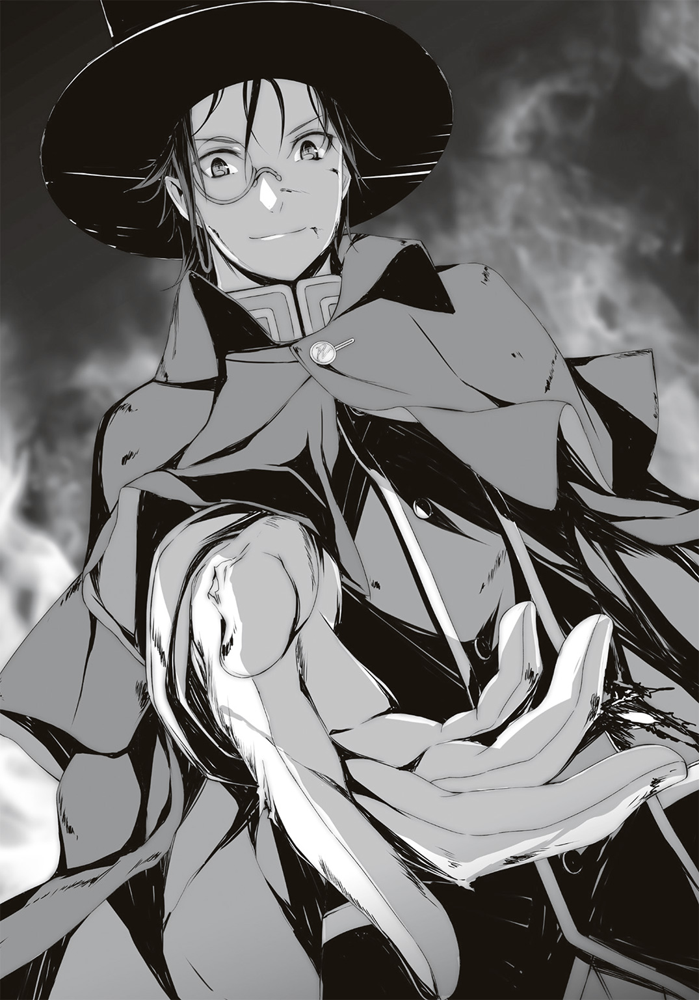
だから彼の命を奪おうとは思わない。怪盗としての勝負に勝ったのだから、相手に対してそれ以上の侮辱をするつもりはないのだ。
対する二十面相も怪盗のはしくれだ。
「ああ、今回は君の勝ちだ」
最後まで不敵な笑みを浮かべたまま――
「楽しかったよ。また会おう！」
ルパンが差し伸べた手を払い、そのまま落下した。
そのまま何の気配も感じさせぬまま、彼は五メートル下の暗闇に消えていく。
常人ならば死ぬ高さだが、怪盗ならばケガをしていようと生き延びられるだろう。
「......結局、逃げられてしまったか」
払われた手を振ると、ルパンはそのままワイヤーの上を歩く。
背後には燃える劇場。
そのまま視線を移動させると、夜の灯りがぽつぽつと見える。
三傑野市にはまだまだ多くの〝新型中二病〟がいるだろう。本来は善玉と悪役に分かれて戦っていると聞いたが、その枠を超えて何かを企んでいる集団がいると判明した。
ファントムと二十面相。彼らがボスなのかはまだ分からないが、少なくとも追う対象は絞られた。
彼らの企みの本当の意図は分からないが、少なくともルパンの望んでいた未来にはならないだろう。
「しかし、怪人二十面相か――」
彼の姿を想像して、ルパンは震える。
恐怖ではない。快感だ。
まさかこの街にルパン以外の怪盗がいたとは。
怪盗のロマンを理解し、怪盗に憧れる人間がいたなんて。
所詮、〝新型中二病〟はごっこ遊びだ。それでも同じ怪盗とのごっこ遊びはたまらなく楽しかった。こういうスリルをもっと味わいたいからこそ、ファントムの企みを止めたいのだが――
「彼は、そう思ってはくれないみたいだね」
それだけが残念だった。
近づいてくる消防車のサイレンの音を背に、ルパンも夜の街に姿を消したのだった。
＊
消防車と一緒に野次馬もやってきた。
その人混みに紛れて、全員が逃げる事ができた。赤々と燃える劇場の周囲で多くの放水が行われる様は、周囲に住む学生のストレスを大いに解消させただろう。
放水が終わり、警察の現場検証が行われると野次馬たちも帰り出す。その野次馬たちに紛れて、ルパンもゆっくりと歩き出した。
本当はすぐにでも仲間と合流したかったが、燃えた劇場を見たかった。
考えれば恐ろしい話だ。
超常現象を起こせる〝新型中二病〟が争えば、建物が破壊されるのだ。建物だけではない、鉄橋やレストランも。これを人間の手で行おうとするなら、高性能な爆薬か巨大な重機がいくつか必要になる。
それを人間が、しかもただの高校生が簡単に行える事実は頭に留めておくべきだ。
仲間がどこにいるか知りたかったので、修太郎に電話をかける。するとすぐに現在位置を教えてくれた。元気な者はこの近くのカラオケにいるそうだ。
しかし逃げてきた人の中にはケガ人もいる。彼らはどうするのかと尋ねたら、修太郎は口ごもりつつ別の場所を教えてくれた。
「体育館裏？ そこにみんないるのか？」
『ケガ人はな』
「ケガ人は？ 無事な人とケガ人と、それからどういう区分があるんだ？」
『あー......』
修太郎が指定する場所に行く。
そこはスポーツセンターの敷地外にある、子供用の小さな公園。ブランコすら撤去されていて、ベンチと砂場しかない狭い空間だった。
そこに修太郎と志穂がいた。
それから傷ついた〝新型中二病〟が二人倒れている。どちらも〝秘密結社〟の仲間ではないようだ。
そのメンツを見て、ルパンは悟った。
「消したのか」
「......ああ」
志穂はいつもの明るい雰囲気を消している。確認しなくても、彼女の全身から立ちこめるオーラのようなもので分かる。
「苦しみから解放するには、それしかなかったのです」
彼女――稲荷神も申し訳なさそうにしている。
「あなた方が望んで今の状態にいる事は理解しておりますが、こうして苦しんでいる者もいるという現実はお忘れなきよう」
「――もちろんです、稲荷様」
むしろそういう〝ロール〟をひとりでも減らすために戦っているのだから。
「う......あぁ」
ひとりの男が目覚めた。
私服だから学年は分からないが、顔立ちの幼さは高校生以上という事はないだろう。彼も学園の生徒に違いない。
「俺は......何してたんだ？」
頭を押さえる男。頭もそうだが、彼は脳天から胴のところまで縦一文字に斬られており、まだ痛むはずだ。すでに治療は済んでいるようで、頭と胸のところには包帯が巻かれている。
「そうだ......俺は、ウィリアム・テルになって」
彼は傍らに置かれていた自分のクロスボウを手に取る。それは真っ二つに切断されており、使い物にならない。おそらく身体と武器は一緒に斬られたのだろう。
「なんだろう......何やってたんだ、俺」
「なぁ、君」
ルパンは膝をついて彼に語りかける。
「今、どんな気持ちだ？」
「う......ん、それが、自分でも良く分からない」
「ウィリアム・テルになった記憶は？」
「あるよ。俺はもともとスイスが好きで、スイスのおとぎ話といったらテルだからさ、他の人に紹介するのに都合がいいから、いっぱい勉強したんだぜ。そしたらいつのまにかテルが好きになって......それで......俺、自分の事をテルだと」
「今はどうだ？」
「......俺は、テルじゃない」
残念そうに、しっかりと彼は答えた。
「でもテルが好きだという気持ちは消えていないんだ。テルは今でも何時間だって語れるくらい好きだが、テルはテルだ。俺じゃない」
「そうか」
少し安堵した。
もしも〝好き〟という感情すら消されてしまったら、とてもじゃないが正気ではいられないだろう。憧れる気持ちすら消してしまう能力があるのなら、それは神ではなく悪魔の仕業だ。
対象への好意は残しつつ、演じようとする気持ちのみを排除するようだ。なるほど、神様とて信仰を失ったら商売あがったりだろう。
「だから――苦しいのから解放されて嬉しい気持ちと、もうああいう事はできないっていう悲しい気持ちが半々、かな」
ウィリアム・テルだった男はそう言って笑った。
半々、と言いつつも、その笑みからは悲しい感情しか感じ取れなかった。
「歳三さん！」
黄色い声に呼ばれて振り返ると、公園の入口に総司が立っていた。
と、思った瞬間に抱きつかれた。
「よかった！ 無事だったんだね！」
「そ、総司......すまないが、めちゃくちゃ痛い」
脇腹を二十面相に刺されたままなのだ。応急処置もそこそこに逃げてきたので、まだ傷が開いている。本来なら救急車を呼ぶレベルだが、〝ロール〟による強さなのか、それとも土地の霊力のせいなのか、まだ立って喋れる。
「わっ、ごめん歳三さん！」
傷に気づいたのか、総司はすぐにルパンから離れ、
「でも良かったよ、無事で！」
また抱きついてきた。
「総司、痛い......もの凄く痛い」
沖田総司という人間は、剣に関わらなければ子供のように無邪気で明るい人物だったと伝えられている。きっと今の総司はルパンが生きている喜びを身体全体で表現したいのだろう。普段のこだまを知っているだけに、苦笑してまた傷が痛む。
苦しむルパンにひたすら頰摺りすると、総司は横に寝ていた人物に気づく。
「あ、ウィリアム・テルさん」
左手を刀の鍔にかける総司だが、
「もうテルじゃないよ」
「そうなんですか？」
「あぁ......もう、俺の中にテルはいない。色々と、悪かったな」
「ふーん」
総司は納得していない顔をして、少し考える。
おそらくテルが〝ロール〟を失った事でふさぎ込んでいると思ったのだろう。
「大丈夫ですよ！」
総司はテルの肩を叩き、明るく励ます。
「本当に好きなら、またなれると思いますよ！」
これにはルパンも驚いた。
総司の言う通り、本当に好きで好きでたまらないなら、また憧れが〝ロール〟として憑依しても不思議ではない。
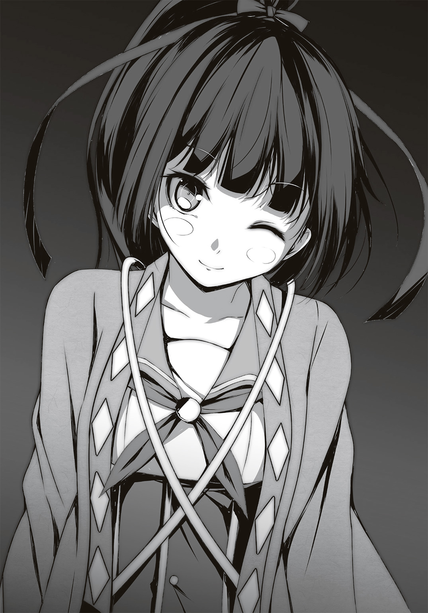
一度転がり落ちたって、本当に好きならもう一度這い上がれるのだ。
「ね、歳三さん！」
根拠のない論調だが、笑う純真な総司を見ていると、それができるような気がしてくるのが不思議だ。
「そうだな。総司の言う通りだ」
「ええ。私が祓ったのは悪い気だけですから。前向きな心まで失ってはいませんから、いつか蘇る事もあるでしょう」
志穂に憑依した稲荷神も頷く。
とはいえ、安心はできない。
自在に〝ロール〟を消せる者がいる事は、利点でもあり弱点でもある。彼女の能力を悪用されたら、この街はより混沌に近づいていくだろう。
何かが〝好き〟という前向きな気持ちから生まれた、この世界。
それを誰かの欲望によって壊されるわけにはいかない。
「さて、今日は帰ろうか」
ルパンは立ち上がり、歩こうとして気づく。
「......その前に、治療ができる人を呼んでくれないか」
脇腹の痛みがそろそろ限界だ。このままでは失血死してしまう。
「ああ、そうだった。市ノ瀬に連絡するから待ってろ。誰かひとりくらい、医者の〝ロール〟がいるだろ。それでダメなら救急車を呼ぶぜ」
修太郎がスマホを操作している。
「ああ、できるだけ早く頼む――」
ルパンは公園のベンチに腰掛け、そのまま目を閉じた。
＊
夢を見た。
古めかしいヨーロッパの街並み。
霧が立ちこめているが、ロンドンではない。
どこなのか判断する前に、背後から足音が迫る。
『君は、私かい？』
自分の声に話しかけられ、振り返る。
すると目の前にシルクハットを被った紳士然とした――自分がいた。
「......やぁ」
気弱な心を押し隠すように、なんとか挨拶だけを返す。
『何を怯えているんだ？ 私のように堂々としていればいい』
「そうもいかないよ。僕にだって、恥ずかしい気持ちはある」
『私の存在は、恥ずかしいかな？』
「恥ずかしいさ。自分の事をアルセーヌ・ルパンと名乗るなんて。正気じゃない。〝中二病〟の妄想が膨らみすぎたんだ。周りが見たら、きっと僕の事を笑う。僕はルパンじゃない、黒真木国俊なんだって――」
『ふふ、それもまた真実だ』
気がつけば、俯いていた。
彼の顔をよく見ようと顔を上げると、そこは教室の中だった。
教師の顔がぼんやりしていて分からない。国俊以外はノートに板書しており、顔も上げていない。
そんな静かな教室の中を、彼は杖をつきながら闊歩している。
『君の中には、二人の君がいる。それを否定してはならない』
「しないよ。するつもりもない」
『だが今の君は迷っている。それは何故だ？』
問われて、考える。
そして出た結論は、こうだ。
「僕の――僕たちのやっているのは、巨大な〝ごっこ遊び〟だ。稲荷神様や土地の霊力とやらが作ってくれた〝遊び場〟で楽しんでいるんだ。でも遊び場には他の人がいる。僕たちの遊びとは関係ない人たちを巻き込むかもしれない」
『それに罪悪感を抱いている？』
「うん。正直、ファントムや二十面相のやり方に口出しできる立場じゃないかもしれない。だって関係ない人から見れば、どっちも自分勝手な悪人なんだから」
そう口にするが、すでに心の中では結論は出ていた。
「――でも、楽しかった」
こんなに心が躍る時間はなかった。
勉強と読書と自分だけの世界しかなかった過去と比べて、あの放課後こそが本当の意味での〝自由時間〟だった。
「悪人と言われても、誰かに迷惑をかけても、僕は遊びたかったんだ。僕のエゴをぶつけ、誰かのエゴをぶつけられ、泣いて、笑って、ケンカをして――そんな〝ごっこ遊び〟をこれからも続けたい」
『うん』
「小説の主役じゃないけど......初めて、〝世界〟を守りたいって思った」
それは〝世界〟と呼ぶには、小さすぎる場所。
小さな県のひとつの都市。ひどい時にはたった一校の学園のみで展開される〝世界〟。
だけど他のどこでも味わえないものが存在している特別な〝世界〟だ。
『じゃあ、私と一緒に守ろう』
彼は微笑んで頷く。
「ああ」
席を立ち、彼を見る。
彼もこちらを見る。
「でも、放課後だけだ。放課後、僕は〝秘密結社〟で君になる。そうして楽しい時間を過ごした後は、また黒真木国俊に戻る。それでいいだろ」
『ああ、きっとみんなそうしているさ』
「そうだよね......そうか、変装が得意なのは僕だけじゃなかったのか」
『そういう事だな、フフフ――』
「フフッ――」
『フフフフ』
「ハハハハハ......！」
『アハハハハハ......！』
ひとしきり笑っていると、やがて声が聞こえなくなってきた。
そのうち視界も暗くなってきて――
意識が完全に途絶えた。
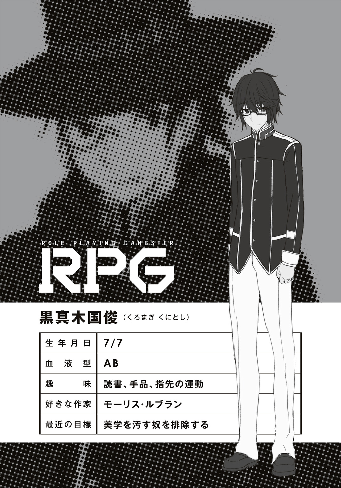
エピローグ
深夜、三傑野学園。
普通科の校舎の一室に灯りがついている。校則では生徒が入れない時間だが、無人という事は少ない。警備員以外にも、校舎に残って作業をする者がいる。
その一室では、とある講義が行われていた。
教壇に立っている大人が黒板に文字を書いている。その横ではスクリーンに映し出されたパワーポイントによる画像。黒板の文字はそれを補足する説明だ。
それを自分のパソコンやタブレットの画面と見比べながら授業を聞いている生徒。
およそ二十人の受講生は、全員スーツを着た大人だった。
皆、真剣な顔で講義を聴いている。
スクリーンに表示されているのは、珍妙な衣装を着た学生の写真。それが順にスライドしていく。彼らの名前とプロフィールが表示され、また次の写真に。
「お手元のデータに表示されているのは、正確なプロフィールが判明している生徒のみです。計十一のケースが判明しておりますが、現在学園に発生している〝ダブル〟の生徒は八十を超えると推測されます――」
口々に話し合う大人達。
「裏を返せば、それだけサンプルが多いという事です。臨床実験の回数は多ければ多いほどいい。こんな特殊な環境ならなおさらです。我々も情報が欲しいでしょう」
教壇に立つ大人が語ると、生徒の大人も同意する。
「しかし情報はともかく、事件はどうするかね」
一番前の席に座っている、太った大人が語る。
「あまり派手な事をやられると、うちの署でも揉み消せないぞ。ほれ、消防さんにも迷惑がかかる」
そう言って彼が見るのは、隣の大人。皺だらけの老人だが、屈強な体格をしている。彼は苦笑するが、それ以上何も言わない。
「揉み消していただきます。事件ではなく事故という事にしてください。これは我々だけの秘密ですから」
彼らはしばらくざわつくように小声で会話を続けていたが、やがてひとりの大人が手を挙げた。
「少し、いいかね」
「はい、なんでしょう」
「報告書にあった〝アルセーヌ・ルパン〟だが、彼についてはどうする？ 彼だけじゃない、中には探偵の能力を持った〝ダブル〟もいるんだろう？ 我々の存在に気づくのも時間の問題じゃないのか？」
「それについては、彼らに任せます」
返答代わりの視線に、教室の大人全員が振り向く。教室の後ろには仮面をつけた人間が座っていた。〝彼ら〟と呼んだが、ここにいるのはひとりだけだ。
「〝ファントム〟、頼みましたよ」
「――わかっている」
それだけ言い放つと、ファントムは席を立つ。
革靴の音を響かせて、彼は灯りの付いていない廊下へ出ていった。
教室から出ていくと、ひとりの大人がこう言った。
「彼なら〝アルセーヌ・ルパン〟達をどうにかできるのかね？」
「ええ」
「根拠は何かね」
「純粋な強さです。最近の調査で〝ダブル〟の〝ロール〟にも深度があると判明したんですが、ファントムのそれは非常に深い」
「深度......つまり、思い込みの深さか。とすると......だ」
また別の男が質問する。
「先ほどの彼......本当に彼は、自分の事を〝オペラ座の怪人〟だと思っているのかね？」
「はい」
教壇の大人は即答する。
「ううむ......そうか......うむ」
「何か不都合が？」
「いや、少し分からなくてね」
尋ねた大人は太い腕を組んで考えこむ。
「ほら、ヒーローに憧れたりするのは、私も理解できるよ。それに派手な悪役というのも、なんとなく分かる。しかし〝オペラ座の怪人〟は悲劇だろう。彼は自分のどこを怪人に重ねたんだろうと、ふと思ってね――」
その疑問に答えられる者は、どこにもいなかった。
光源は月明かりのみ。
ほぼ闇に近い学園の廊下を、ファントムは淀みない足取りで歩く。
月光に照らされた仮面だけが闇に浮かびあがり、それがゆらゆらと揺れ動く様はまさに怪人のようだった。
あの大人達の会合を見ても、ファントムは何も思わない。
子供達の楽園を利用して儲けようとする考えは理解できるが、おそらく彼らの目論見通りにはいかないだろう。彼らは〝新型中二病〟を精神疾患の一種だと思っているが、これはそんなに単純なものではない。
少なくとも外部が介入しようと思ってできるものではない。摑もうとすると霧のように手から抜け、見ようとすると姿を消してしまう。
まるで妖怪のようだ。
なぜなら、これは心の闇に潜む住人の世界なのだから。
――そうとも。大人に理解なんかされてたまるか。
子供が作った秘密基地を壊す大人など必要ない。
求められているのは、子供の遊び心を応援する優しさだ。
だからファントムは応援する。
未来のクリスティーヌが生まれるかも知れない、この美しい世界を。
「......何の用だ」
闇の中に何かの影が混ざっている事に気づくファントム。
「ファントムよ。何故、報告しなかったのだ？」
「さて、何の事やら」
「とぼけるな。お前も知っていたのだろう？ すでに稲荷神様が降臨していた事に。我々の最大の目的にして、最大の敵だ」
「そうではないよ、二十面相」
ファントムはまた歩き出す。
それを追って、闇もまたついてくる。
「私にとって、稲荷神は敵でもなんでもない。我々の戦いを盛り上げてくれる女神だ。彼女のおかげで、より充実した生活ができると思っているよ」
ファントムは廊下の端、渡り廊下へと続く扉を開く。外に出ると月光がより強く輝いて見える。闇から抜け出た二人は、改めて互いの顔を見た。
やがて二人が辿り着いたのは、とある使用されていない教室。
無造作に扉を開けると、奇妙な臭いが充満していた。
薬物が燃える臭い。
アルコールランプの灯りのみがその部屋を照らしている。
「............あー......」
部屋の中に少女がいた。窓際に座り込み、壁に寄りかかっている。
背が低い、子供のような女の子。
しかし三傑野学園の制服を着ている。制服のリボンは一年生の色だ。
その手にはタバコのような紙巻が握られており、臭いの発生源はそれだと分かる。
「やー......」
とろんとした瞳でファントムを見ると、彼女は挨拶代わりに微笑んだ。
「学園内で薬物はやめろと言ったはずだ」
「だいじょうぶー......これ、マリファナだから、身体壊さないから............」
「そういう問題ではない」
二十面相は彼女が持っていた紙巻を奪う。まだ火が付いているそれを片手で握り潰すと、より強い臭いが発生した。
「へ、へへへ............へへ、なぁに、もっと強いクスリくれるの？」
「いいや」
ファントムは彼女の側に屈み込み、その頰に触れる。
「やん、気持ちイイ」
彼女は上気した顔で、ファントムの手に触れる。
その頰とは対照的に、氷よりも冷たい声でファントムは告げる。
「薬よりも快楽を与えてくれるものを用意した」
「......ホントに？」
淀んでいた彼女の目に生気が宿る。
「ああ。君が何よりも欲してやまないものだ。どんな薬物よりも君を気持ちよくさせてあげるものだよ」
「やった......！ へへへ............」
「さぁ、立ちなさい。私が君を〝応援〟してあげよう」
「うん、わかったよファントム」
彼女は頰に当てられたファントムの手を握りながら立ち上がる。
すでに薬物は抜け、立ち方も安定していた。
ファントムは彼女の手を握り返し、優しく囁いた。
「さぁ行こう、〝シャーロック〟。事件だよ」
＊
他者になりきるという〝新型中二病〟とネットの相性は、実はよくない事が判明した。
何故かというと、ネットでの別人格を作るのが苦手な者がいたからだ。衣装を着て、他者の前で〝ロール〟を演じる事はできるのに、ネットになると素の人格が出そうになるという。
普通は逆だ。ネットで別人格が生まれるのが常だ。
しかし〝新型中二病〟だとこういう事が起こりえるのだ。
なので全員の意見をまとめるのは、早々に諦めた。
とにかく今、近くにいる〝ロール〟達には注意喚起を促すようＳＮＳで呼びかけ、後は個人の自主性に任せるという方針になった。
「つーか、なんでいつも俺がリーダーみたいになってんだよ。〝秘密結社〟は〝中二病〟の集まりだろうが」
いつものメンバーが揃った文学研究部で、また修太郎が愚痴っている。
「だってあんた幹事に向いてるもん」
部員でもない志穂が部室に入り浸るようになるまで、そう時間はかからなかった。今では彼女がいないと落ち着かないくらいだ。
稲荷神様も現代の本、特にマンガやラノベが気に入ったらしく、志穂の身体を通して読み漁っているようだ。
「それに修太郎はリーダーに向いている。〝中二病〟に対して一切の偏見もなく、誰とでも平等に接する事ができるからな」
窓際の椅子に腰掛けながら、ルパンが同意する。
「普通の人は怖がって逃げますよ。田辺さんの懐の深さは、みんな認めていますから」
こだま――いや、沖田総司も同意する。
劇場の火事から一週間が経過していたが、ファントムからは何のアクションもなかった。
しかし〝新型中二病〟は徐々に増えており、一週間のうちに二人も発見された。目下のところ、そういう人間に出くわした時の対応をマニュアル化するように市ノ瀬に頼んでおり、新聞部とその一派がめざとく〝中二病〟を探して回っている。
これで〝新型中二病〟が現れた時の対策はバッチリだが、これでようやく通常のカオスに戻っただけだ。事件は毎日起きている。
特殊な個性と能力を持った人間が顔を合わせて、事件が起きないはずがない。
「あー、ちょいと御免よ」
部室の扉が開くと、和装の女子が入ってきた。
金田一耕助だ。
「また事件だよ。悪いけど、また協力してくれないかね？ 他の探偵にも動いてもらってるんだが、手が足りない」
「分かりましたっ」
総司は嬉しそうに刀を持つと、ダンダラ模様の羽織を着た。〝新型中二病〟の中で最も正義感が強い警察関係の〝ロール〟は、こうして〝中二病〟同士の事件を取り締まってくれる。未然に防げないのは致し方ないが。
「ところで、今回は何が起きたんですか？」
「それがさぁ、ダヴィンチが描いた設計図やら兵器、それに他の芸術家の〝ロール〟が作った――とにかく芸術品がかたっぱしから盗まれているみたいなんだ」
「へぇ......芸術品が」
金田一耕助の報告を聞き、総司は何かを考える。
その時、ルパンは静かに席を立つ。
「さて......と。私は用があるので失礼するよ」
「歳三さん。どちらへ？」
総司が笑顔で尋ねる。
「ちょっとそこまで、ね」
言いながらルパンは窓枠から身を乗り出す。
幸い、誰も見ていない。逃げ出すなら今しかチャンスはない。
もちろん盗んだのはルパンだ。
怪盗としての〝ロール〟は盗みだ。今まで彼は敵の武器や服しか奪っていない。
本来、盗みとは戦いに使うものではない。偉大な芸術品をあるべき場所に移すための手段なのだ。
「というわけで、さらばだ諸君！」
ルパンは窓から身を乗り出し、そのまま空中へ身を躍らせた。
窓から総司の手が伸びたが、間一髪で摑めなかった。
こういう事もあろうかと、あらかじめ張っていたワイヤーの上に飛び乗ると、ルパンはさらにそこから飛び降り、下の教室へ入る。もしもその光景を見た人間がいるとしたら、まるで空中を蹴ってジャンプしているように見えただろう。
「うおおおおっ!? なんだなんだ!?」
魔術師の格好をして薬品を調合していた化学部に謝りながら、ルパンは急いで教室を出る。廊下に出たところで、どこに逃げようか一瞬だけ考えると、
「いた！ 歳三さん、逃がしませんよ！」
すでに総司が階段を下りていた。
「なんて速さだ......電光石火の如し」
褒めてばかりもいられない。
背後から総司の声が迫ってくる。一瞬で距離を詰めるあの〝瞬歩〟を相手に、どうやったら逃げ切れるか――考えるだけでワクワクする。
誰よりも速い追っ手から逃れてこそ、〝怪盗〟の名をほしいままにできる。
「ん？」
さらにルパンのスマホが震える。
窓から飛び降り、また別の教室に逃げ込みながら画面を確認すると、〝秘密結社〟のＳＮＳから緊急連絡だ。なにやら芸術品を盗んだ極悪人が部室棟を逃げ回っているらしい。大至急、捕まえて欲しいとのこと。
これで部室棟の正義の味方は全員、怪盗を追う警察になってしまった。
大ピンチだ。複数のヒーロー相手に、逃げられるわけがない。
だからこそ、楽しい。
こんなに心躍る遊びが他にあるだろうか。
迫り来る複数の足音に振り返りながら、彼は叫ぶ。
「諸君！ 私を捕まえられるかな!?」
世紀の大怪盗、〝アルセーヌ・ルパン〟の放課後は、まだ始まったばかりだ。
つづく
あ と が き
どうもダッシュエックス文庫をご覧のみなさんはじめまして！
田口仙年堂と申します！
以前から知っていたという方、こんな所でお会いするとは奇遇ですね！
今回、初めてダッシュエックス文庫で書かせていただける事になりました！ 数奇な巡り合わせに感謝感激です！
今まで角川系列のグループでしか書いていなかったもので、その流儀が通用するのか不安でしたが、なんとかなりました。
というか担当のＴさんも打ち合わせの時などに「集英社ではこういう風にやっているんですが、大丈夫でしょうか......？」と何度も確認を取っていただいたのですが、ぶっちゃけ全部角川でやっていた時と何も変わらなかったので、俺もＴさんも安心でした。
改めて、ダッシュエックス文庫で書かせていただいてありがとうございます。
読者様も担当様も、これからよろしくお願い致します。
さて、今作『ＲＰＧ ロールプレイング・ギャングスター ～或いは僕がルパンになった理由～』はゲームの話ではありません。ロールプレイ、つまり「なりきり」がテーマの作品なのです。
みなさん、誰かになってみたいと思った事はありませんか？ いや、絶対にあるに決まっています！ 俺もそうです！
小さい頃はアニメや特撮のヒーローに、大人になってもカッコイイ俳優とかになりたいと思った事があるでしょう。だったらなっちまえよ！ というのがこの作品のテーマです。
やった事がある人なら分かるでしょうけど、「なりきり」ってすごく楽しいんですよ。
お芝居だけでなく、日常のちょっとしたシーンでも他者になりきる時があるんです。映画やアニメの好きなキャラのセリフを、その役者さんの真似して呟く時、ありませんか？ 俺は〆切が近くなると、よく声優さんの真似をしてふざけて遊んでいます。ひとりで。ええ、ひとりぼっちで。
そんな気持ちよさを凝縮したのが、今回の作品です。
楽しい「なりきり」の世界を一緒に味わっていただければ幸いです。
ちなみに俺が子供の頃、何になりたかったのかというと「志村けん」でした。
だってテレビの中の志村けんって凄いんですよ。
色々な職業をやって、心霊体験もして、頭に何度もタライが落ちて、でも面白くって。ゲームで言うならマリオくらい変身しているキャラだったんですよ。
で、年端もいかない可愛い子供だった俺は、それがテレビの中で本当に起きている事だと思ってましたからね。
特撮とかは派手すぎるので、「ちょっとウソかも」と思っていたけれど、ドリフのコントは本物だと信じてましたから。
憧れた人物の特殊能力を使える今作で、もしも志村けんの力を手に入れたキャラがいたとしたら、きっととんでもないチート能力になると思いますよ。
年齢を自在に変え、壁から幽霊の手を生やし、女子更衣室や女湯に侵入できる！
いかりや長介になれるキャラさえ出てこなければ、最強キャラかもしれない！
本作を出版するにあたって、お礼を言わせてください！
まずはステキでカッコイイイラストを描いてくださった、夕薙さん！ 作品に絶妙に溶け込んだ素晴らしい絵をありがとうございます！
そして担当のＴ様！ こちらのワガママを色々と汲んでくださって本当にありがとうございます！ さらにＴ様に紹介してくださったアサウラさんにも最高の感謝を！
それから、公私ともに支えてくれた家族に乾杯！ いつもありがとうっ！
最後にこの本を手に取ってくださった全ての方へ！
本当にありがとうございます！
それではまたお会いしましょう！
さよならっ！
田口仙年堂
著者紹介
田口仙年堂 たぐち せんねんどう
千葉県出身、東京の端っこ在住。長年ラノベを書いてはいたものの、集英社さんで本を出すのは生まれて初めてです！ ド新人の気分でがんばりまっす！ かつて中二病だったあなたも、今現在中二病なあなたも、どうぞ読んでみてください！
illustration
夕薙 ゆうなぎ
東京都出身＆在住のフリーイラストレーター。
主にライトノベルイラスト、ゲーム原画などで活動中。
イラストのお仕事をさせていただいて６年目にしてついに新撰組のモチーフを描く機会に恵まれました。厨二病ロールプレイングの世界、是非楽しんでいただけたら幸いです。
ダッシュエックス文庫DIGITAL
ＲＰＧ ロールプレイング・ギャングスター
～或いは僕がルパンになった理由～
著者 田口仙年堂
© SENNENDOU TAGUCHI 2016
２０１６年１月31日発行
この電子書籍は、ダッシュエックス文庫「ＲＰＧ ロールプレイング・ギャングスター ～或いは僕がルパンになった理由～」
２０１５年12月27日発行の第１刷を底本としています。
発行者 鈴木晴彦
発行所 株式会社 集英社
〒１０１－８０５０
東京都千代田区一ツ橋２丁目５番10号
０３－３２３０－６０８０（読者係）
制作所 株式会社ＩＣＥ
本作品の全部また一部を無断で複製、転載、改竄、インターネット上に掲載すること、および有償無償に関わらず、本データを第三者に譲渡することを禁じます。なお個人利用の目的であっても、コピーガードを解除しての複製は、法律で禁じられています。